| ECG obrigatório | >45a (♂) / >55a (♀) ou cardiopatia |
| METs funcionais | ≥4 METs = baixo risco (sobe escadas) |
| RCRI ≥ 3 | Alto risco — cardio pré-op |
| Betabloqueador em uso | Manter perioperatório |
| Estatina em uso | Manter perioperatório |
| AAS em uso | Manter salvo alto risco sangramento (ESC/ESA 2022) |
| IECA / BRA | Suspender 24h antes (ESC/ESA 2022) |
| GLP-1 (semaglutida) | Suspender 1-2 semanas (ASA 2023) |
| Mallampati I-II | Via aérea favorável |
| Mallampati III-IV | VAD provável → preparar |
| Abertura bucal | ≥ 3 cm (2 dedos) |
| Distância tiro-mento | ≥ 6 cm (3 dedos) |
| Distância inter-incisivos | ≥ 4 cm (2 dedos) |
| Extensão cervical | Normal = sem restrição |
| Líquidos claros (adulto) | 2h (ESAIC 2023) |
| Líquidos claros (crianças) | 1h (ESAIC 2023 — NOVO) |
| Leite materno | 3h (ESAIC 2023 — NOVO, era 4h) |
| Fórmula / leite não materno | 6h |
| Refeição leve | 6h |
| Refeição sólida / gordurosa | 8h |
| GLP-1 (semaglutida/liraglutida) | Suspender 1–2 semanas antes (ASA 2023) |
| Volume corrente | 6–8 mL/kg peso ideal |
| PEEP | 5–8 cmH₂O |
| Pressão platô | <30 cmH₂O |
| Driving pressure | <15 cmH₂O |
| FiO₂ | Mínima eficaz |
| Atividade motora | Move 4 extremidades = 2 pts |
| Respiração | Tosse livre = 2 pts |
| Circulação | PA ± 20% basal = 2 pts |
| Consciência | Alerta e orientado = 2 pts |
| SpO₂ | ≥ 92% AR = 2 pts |
| Alta SRPA | ≥ 9 / 10 |
| Laringe mais anterior/cefálica | IOT mais difícil |
| Occiput proeminente | Posição sniffing sem travesseiro |
| Língua proporcionalmente maior | Obstrução de VA mais fácil |
| Menor CRF / VO₂ alto | Dessaturação muito mais rápida |
| Mielinização incompleta | Maior sensibilidade a opioides |
| Líquidos claros | 1h (ESAIC 2023 — NOVO) |
| Leite materno | 3h (ESAIC 2023 — NOVO) |
| Fórmula / leite | 6h |
| Sólidos | 6–8h |
| Via aérea | Edema laringe → TOT 6,0–6,5 |
| Estômago | Sempre cheio → RSI |
| SpO₂ dessatura | Muito mais rápido |
| Bupivacaína hiperbárica 0,5% | 10–12,5 mg IT |
| Morfina intratecal | 100 mcg (analgesia 12–24h) |
| Fentanil intratecal | 20–25 mcg |
| Nível sensitivo alvo | T4–T6 |
| Profilaxia hipotensão | Noradrenalina 0,05 mcg/kg/min (SOAP 2023 — 1ª escolha) |
| DUE | SEMPRE — deslocamento uterino esquerdo |
| Propofol (indução) | Peso magro (LBW) |
| Propofol (manutenção) | Peso ajustado |
| Succinilcolina | Peso real |
| Rocurônio | Peso ideal |
| Opioides | Peso magro/ideal |
| Sugammadex | Peso real |
| BZD | Peso magro |
| VC ventilação | SEMPRE peso ideal |
| Propofol (indução) | Reduzir 30–50% → 1–1,5 mg/kg |
| Opioides | Reduzir 30–50% → titular |
| Midazolam | Reduzir 50–75% → 0,5–1 mg |
| Halogenado (MAC) | Reduzir 30–40% |
| Sugammadex | Preferível à neostigmina (ESAIC 2023) |
| Evitar | Benzodiazepínicos (risco delirium) |
| Preferir | Dexmedetomidina para sedação |
| Manter | BIS 40–60 (prevenção delirium) |
| Analgesia | Multimodal — minimizar opioides |
| Hipnótico preferencial | Cetamina 1–2 mg/kg |
| Etomidato | 0,3 mg/kg (estabilidade HD) |
| Propofol | EVITAR — hipotensão grave |
| BNM | Succinilcolina 1,5 mg/kg (RSI) |
| Ácido tranexâmico | 1 g IV em 10 min (nas 1as 3h) |
| Fibrinogênio alvo | >2 g/L |
| Cálcio | Gluconato de Ca 1g por CH |
| Lidocaína simples | 4,5 mg/kg |
| Lidocaína c/ epi | 7 mg/kg |
| Bupivacaína simples | 2 mg/kg (máx 150 mg) |
| Bupivacaína c/ epi | 3 mg/kg (máx 225 mg) |
| Ropivacaína | 3 mg/kg (máx 300 mg) |
| Levobupivacaína | 2,5 mg/kg (máx 150 mg) |
| Indução adulto | 1,5–2,5 mg/kg IV |
| Indução idoso | 1–1,5 mg/kg (reduzir 30-50%) |
| Infusão TIVA | 4–12 mg/kg/h |
| Sedação | 25–75 mcg/kg/min |
| Indução | 0,3 mg/kg IV |
| RSI | 0,3 mg/kg (estabilidade HD) |
| Indução IV | 1–2 mg/kg |
| Indução IM | 4–8 mg/kg |
| Sub-anestésica (analgesia) | 0,1–0,3 mg/kg bolus |
| Infusão anti-hiperalgesia | 0,1–0,2 mg/kg/h |
| Pré-medicação VO | 7,5–15 mg VO (0,3–0,5 mg/kg pediátrico) |
| Pré-medicação IV | 1–3 mg IV (titulado) |
| Indução IV | 0,1–0,35 mg/kg IV (raramente usado isolado) |
| Sedação procedimento | 1–2,5 mg IV titulado |
| Infusão UTI | 0,02–0,1 mg/kg/h (risco acúmulo) |
| Sedação UCI | 0,2–0,7 mcg/kg/h IV (sem bolus) |
| Sedação cirúrgica | 0,5–1 mcg/kg/h IV |
| Carga IV (cuidado) | 0,5–1 mcg/kg em 10 min (↑ risco bradicardia) |
| Adjuvante raqui/peridural | 0,5 mcg/kg IN pediátrico |
| Indução | 2–5 mcg/kg IV |
| Manutenção | 1–2 mcg/kg IV |
| Resgate SRPA | 25–50 mcg IV |
| Analgesia IV | 2–4 mg IV titulado a cada 5 min |
| Intratecal (raqui) | 100–200 mcg IT (analgesia 12–24h) |
| Peridural | 3–5 mg (início 30–60 min, pico 90 min) |
| PCA | 1 mg/bolus, lock-out 5–8 min |
| Redução em idosos | 50% dose adulto (acúmulo M6G) |
| Analgesia IV (adjuvante) | 0,1–0,3 mcg/kg IV |
| Indução TIVA (complemento) | 0,3–1 mcg/kg IV |
| Intratecal (raqui) | 5–10 mcg IT (início rápido, 4–6h) |
| Infusão TIVA | 0,3–1 mcg/kg/h |
| CAM adulto (40a) | 1,15% |
| CAM + N₂O 60% | ~0,5% |
| Manutenção típica | 0,8–1,5% (ajustar por clínica) |
| CAM idoso (80a) | ~0,75% (redução ~35%) |
| TOF ratio ≥0,1-0,9 (moderado) | 2 mg/kg IV |
| PTC 1–2 (bloqueio profundo) | 4 mg/kg IV |
| Reversão imediata (pós-ISR) | 16 mg/kg IV (≥3 min após rocurônio) |
| Intubação | 0,15–0,2 mg/kg IV (3–5 min) |
| Manutenção | 0,03 mg/kg IV (bolus) |
| Infusão | 1–3 mcg/kg/min |
| Intubação | 0,4–0,5 mg/kg IV (onset 2–3 min) |
| Manutenção | 0,1 mg/kg IV (bolus) |
| Infusão | 5–9 mcg/kg/min |
| Hipotensão raqui/peridural | 5–15 mg IV bolus |
| Profilaxia (IC/bradicardia) | 5–10 mg IV |
| Infusão | 10–20 mg/h IV |
| Bolus raqui (adulto) | 50–100 mcg IV bolus |
| Infusão profilática (raqui) | 25–50 mcg/min IV (initiar no bloqueio) |
| Hipotensão intraoperatória | 50–200 mcg IV titulado |
| Bolus IV (hipotensão) | 0,5–2 mg IV bolus (titulado) |
| Infusão IV | 0,5–5 mg/h IV |
| Ampola | 10 mg/mL — diluir: 10 mg em 100 mL SF = 0,1 mg/mL |
| PONV profilaxia | 4–8 mg IV na indução |
| Analgesia adjuvante | 0,1–0,2 mg/kg (até 8mg) — reduz dor até 24h |
| Prolonga bloqueios periféricos | 4–8 mg IV sistêmico (mais eficaz que perineural) |
| Anti-inflamatório | Reduz edema VA, fadiga pós-op |
| Pré-op | 300–600 mg VO 1h antes |
| Pós-op | 300 mg VO 8/8h por 48-72h |
| Fixo | Volume corrente |
| Variável | Pressão de pico |
| Quando usar | Padrão intraop · ARDS |
| Fixo | Pressão inspiratória |
| Variável | Volume corrente |
| Quando usar | ARDS · torácica · pediatria |
| VC | 4–6 mL/kg PI |
| Driving pressure | <15 cmH₂O |
| Pplat | <30 cmH₂O |
| PEEP grave | 12–18 cmH₂O |
| FR | 10–14 irpm |
| I:E | 1:3 a 1:4 |
| PEEP | 3–5 cmH₂O |
| FiO₂ | SpO₂ 88–92% |
| FR | 8–12 irpm |
| I:E | 1:4 a 1:5 |
| PEEP | 3–5 ou ZEEP |
| PaCO₂ | Aceitar até 80 se pH >7,15 |
| EtCO₂/PaCO₂ | 35–40 mmHg |
| PAM | ≥80 mmHg (PPC≥60) |
| Hiperventilação | CONTRAINDICADA profilática |
| VC | 6–8 mL/kg PESO IDEAL |
| PEEP | 8–12 cmH₂O |
| Posição | Trendelenburg reverso 30° |
| VC | 4–6 mL/kg PI |
| Noradrenalina | PAM ≥65 (SSC 2021) |
| Hidrocortisona | 200 mg/dia se refratário |
| IRRS <80 | Alta probabilidade de sucesso |
| IRRS >105 | Alta probabilidade de falha |
| T4 (mamilos) | Cesárea, abdominal alta |
| T6 (xifoide) | Abdominal alta |
| T10 (umbigo) | Abdominal baixa, hernia |
| T12 (virilha) | Cirurgia urológica baixa |
| L1 (coxa alta) | MMII proximal |
| S1-S5 (períneo) | Períneo, cirurgia anal |
| Cesárea | Bupivacaína hiperbárica 10–12 mg |
| Abdominal inferior | 10–12,5 mg |
| Abdominal alta | 12,5–15 mg |
| MMII / ortopedia | 12,5–15 mg |
| Períneo / ambulatorial | 7,5–10 mg |
| Morfina IT | 100–200 mcg (analgesia 12-24h) |
| Fentanil IT | 20–25 mcg (melhora onset) |
| Clonidina IT | 15–45 mcg (prolonga bloqueio) |
| Dexametasona IT | 4 mg (off-label, SOAP 2023) |
| Ropivacaína 0,1-0,2% | + Fentanil 2 mcg/mL |
| Bupivacaína 0,0625-0,125% | + Fentanil 2 mcg/mL |
| Infusão contínua | 6-12 mL/h (ajustar nível) |
| PCEA | Bolus 5 mL + lockout 20 min |
| 1 MET | Cuidados pessoais básicos |
| 4 METs | Subir 1 lance escadas, andar plano rápido |
| 4-10 METs | Trabalho doméstico pesado, caminhada rápida |
| >10 METs | Esportes vigorosos (natação, corrida) |
| Morfina | CrCl <30: reduzir 50-75% |
| Atracúrio/Cisatracúrio | Sem ajuste (Hofmann) |
| Sugammadex | CrCl <30: evitar (sem diálise eficaz) |
| Midazolam | CrCl <30: reduzir 50% |
| Morfina IV 10 mg | = referência |
| Fentanil IV | 100 mcg |
| Sufentanil IV | 10 mcg |
| Tramadol IV | 100 mg |
| Codeína VO | 200 mg |
| Metadona VO | Conversão não linear — consultar tabela |
| Ondansetrona | 4 mg IV (final cirurgia) |
| Dexametasona | 4-8 mg IV (indução) |
| Droperidol | 0,625-1,25 mg IV |
| Scopolamina patch | 1,5 mg TD (noite anterior) |
| TIVA (propofol) | Reduz PONV vs halogenado |
| Metoclopramida | 10 mg IV |
| Haloperidol | 0,5-1 mg IV |
| Prometazina | 6,25-12,5 mg IV |
| Cetamina | 0,1-0,3 mg/kg bolus (anti-hiperalgesia) |
| Lidocaína IV | 1,5 mg/kg + 1-2 mg/kg/h (abd) |
| MgSO₄ | 30-50 mg/kg em 20 min |
| Gabapentina | 300-600 mg pré-op (evidência 1A) |
| Dexametasona | 8 mg (reduz dor+PONV+fadiga) |
| ASA | Definição | Exemplos Clínicos | Mortalidade estimada |
|---|---|---|---|
| ASA I | Paciente saudável, sem doenças sistêmicas | Paciente jovem, não fumante, sem comorbidades; IMC <30 | <0,1% |
| ASA II | Doença sistêmica leve, sem limitação funcional | Fumante ativo, gestante, obesidade (IMC 30–40), DM/HAS controlados, DPOC leve, álcool social | 0,1–0,2% |
| ASA III | Doença sistêmica grave, com limitação funcional | DM ou HAS mal controlados, DPOC moderado-grave, obesidade IMC >40, hepatite ativa, alcoolismo, marca-passo, FEVE <40%, IRC em diálise, IAM/AVC >3 meses, história de IAM | 1,8–4,3% |
| ASA IV | Doença sistêmica grave com risco de vida constante | IAM/AVC/TIA <3 meses, FEVE <25%, sepse, CID, insuficiência renal/hepática grave, DPOC descompensado | 7,8–23% |
| ASA V | Paciente moribundo; não se espera sobrevida sem cirurgia | Ruptura de AAA, trauma grave, isquemia intestinal extensa, TCE grave com hipertensão intracraniana | 9,4–51% |
| ASA VI | Morte cerebral — doação de órgãos | Captação de órgãos em paciente com diagnóstico de morte encefálica | — |
| + E | Sufixo de urgência/emergência | Ex.: ASA IIIE — mesmo paciente ASA III, porém em cirurgia de urgência | Duplica risco |
| # | Variável RCRI | Definição/Exemplo |
|---|---|---|
| 1 | Cirurgia de alto risco | Intraperitoneal, intratorácica ou vascular suprainguinal |
| 2 | Cardiopatia isquêmica | IAM prévio, angina, uso de nitrato, ECG com ondas Q, revascularização prévia |
| 3 | Insuficiência cardíaca | Congestiva: edema pulmonar, dispneia paroxística noturna, B3, cardiomegalia |
| 4 | Doença cerebrovascular | AVC ou AIT prévio |
| 5 | Diabetes insulinodependente | DM tipo 1 ou DM tipo 2 em uso de insulina |
| 6 | Creatinina pré-op >2,0 mg/dL | Indica IRC moderada-grave |
| Pontos RCRI | Risco MACE | Conduta |
|---|---|---|
| 0 | ~0,4% | Cirurgia sem necessidade de avaliação adicional |
| 1 | ~1% | Prosseguir; considerar ECG se >50 anos |
| 2 | ~2,4–7% | Considerar avaliação cardiológica; otimizar medicações |
| ≥3 | >5,4–11% | Avaliação cardiológica obrigatória; considerar ecocardiograma e teste funcional |
| METs | Capacidade | Exemplos de Atividade | Risco Periop. |
|---|---|---|---|
| 1–4 METs | Ruim / Limitada | Autocuidado, comer, vestir-se, caminhar em casa em passo lento, andar 1–2 quarteirões | Alto — considerar avaliação cardiológica |
| 4–10 METs | Moderada / Boa | Subir um lance de escadas, caminhar 6 km/h, trabalho doméstico pesado, golf, dança | Moderado — prosseguir com cautela |
| >10 METs | Excelente | Natação competitiva, corrida, futebol, tênis, esqui | Baixo — cirurgia sem restrição cardiovascular |
| Variável | Pontos |
|---|---|
| SpO₂ pré-op: 91–95% | 8 |
| SpO₂ pré-op: ≤90% | 24 |
| Infecção respiratória no último mês | 17 |
| Anemia (Hb <10 g/dL) | 11 |
| Cirurgia torácica ou abdominal alta | 15 |
| Cirurgia de urgência/emergência | 8 |
| Duração >2 horas | 8 |
| Letra | Critério |
|---|---|
| Snoring | Ronco alto? |
| Tired | Frequentemente cansado, sonolento durante o dia? |
| Observed | Observado parar de respirar durante o sono? |
| Pressure | Hipertensão arterial? |
| BMI | IMC >35? |
| Age | Idade >50 anos? |
| Neck | Circunferência cervical >40 cm? |
| Gender | Sexo masculino? |
| Risco | MACE estimado | Exemplos de Cirurgia |
|---|---|---|
| Baixo | <1% | Superficial, endoscopia, catarata, mama, laparoscópica (exceto abdominal alta), ortopédica periférica, urológica ambulatorial |
| Intermediário | 1–5% | Abdominal intraperitoneal, intratorácica, ortopédica maior (quadril/joelho), próstata, cabeça/pescoço, neurológica eletiva |
| Alto | >5% | Aorta e vascular maior, vascular periférica, duodenopancreatectomia, ressecção hepática, ressecção esofágica |
MINS (Myocardial Injury after Non-cardiac Surgery): Elevação de troponina (hsTnT {'>'} 65 ng/L OU qualquer ↑ com cinética) nas primeiras 30 dias pós-op, independentemente de sintomas isquêmicos.
PMI (Perioperative Myocardial Infarction): Subgrupo de MINS com critérios clássicos de IAM (sintomas + ECG + troponina).
| Fator de risco | OR para MINS |
|---|---|
| Doença coronariana conhecida | 2.5× |
| Insuficiência cardíaca | 2.1× |
| Cirurgia de alto risco | 1.8× |
| Idade {'>'} 75 anos | 1.6× |
| Condição | Achados Relevantes | Conduta Perioperatória |
|---|---|---|
| HAS | PA >180/110 mmHg no dia da cirurgia; HVE no ECG | PA >180/110: adiar cirurgia eletiva e otimizar. PA <180/110: prosseguir. Manter betabloqueadores e bloqueadores de canal de cálcio. Suspender IECA/BRA no dia (hipotensão pós-indução) |
| IC | FEVE, classe NYHA, BNP/NT-proBNP, ecocardiograma | FEVE <35%: avaliação cardiológica obrigatória. Otimizar diurético/vasodilatador. Evitar cargas de volume. Monitorização hemodinâmica avançada |
| FA | Controle de frequência, anticoagulação, CHADS2-VASc | Manter controle de FC (betabloqueador/digoxina). Manejo anticoagulante (ver Tab Sistemas). Cardioversão eletiva não é necessária antes de cirurgia de baixo risco |
| Valvopatia | Estenose aórtica grave (<1 cm²): risco alto | EA grave sintomática = adiar até TAVI/cirurgia valvar. EM grave: controle de FC. Insuficiências bem toleradas geralmente permitem prosseguir |
| IAM recente | Janela de risco elevado após SCA | Eletiva: aguardar ≥60 dias após IAM. Em pacientes com stent: aguardar 30 dias (stent convencional) ou 12 meses (stent farmacológico) antes de suspender DAP. Discutir com cardiologista |
| Condição | Avaliação | Conduta |
|---|---|---|
| DPOC | VEF₁, VEF₁/CVF, GOLD I–IV, SpO₂ basal | VEF₁ <50% ou GOLD III–IV: risco pulmonar alto (ARISCAT). Broncodilatador até o dia. Fisioterapia pré-op. Considerar corticoide sistêmico se exacerbação recente. Evitar N₂O |
| Asma | Grau de controle, uso de corticoide inalatório, última crise | Asma não controlada: adiar cirurgia eletiva. Manter broncodilatador. Corticoide oral se asma grave. Evitar intubação se possível → preferir VMS/bloqueio regional |
| SAOS | STOP-BANG ≥3, polissonografia, AHI | Usuário de CPAP: trazer aparelho. Cirurgia ambulatorial: evitar se SAOS grave sem CPAP. Pós-op: posição semi-sentada, monitorização SpO₂ prolongada, evitar opioides em excesso |
| Tabagismo | Pacote-ano, tempo desde última cigarro | Cessação ≥8 semanas reduz complicações. <8 semanas: pode aumentar secreção transitoriamente, mas ainda benéfico. Nicotina não é contraindicação periop. |
| Condição | Janela / Alerta | Conduta |
|---|---|---|
| AVC / AIT | Janela 9 meses para cirurgia eletiva | Aguardar ≥9 meses após AVC isquêmico para cirurgia eletiva. Risco de AVC periop. é mais alto nos primeiros meses. Manter antiagregante (AAS) se possível |
| Epilepsia | Tipo de crise, última crise, anticonvulsivante | Manter anticonvulsivante no dia da cirurgia (se VO: administrar com gole d'água). Alguns aumentam metabolismo de propofol/opioides (fenitoína, carbamazepina). Sevoflurano pode ser pró-epiléptico |
| Parkinson | Rigidez, disfagia, risco de aspiração | L-DOPA no dia da cirurgia (meia-vida curta — suspensão causa crise aguda). Evitar droperidol, metoclopramida (bloqueadores D2). Haloperidol contraindicado. Preferir ondansetrona para NVPO |
| Miastenia Gravis | Musculatura bulbar, crise miastênica, piridostigmina | Atenção aos BNM: sensibilidade aumentada a adespolarizantes (reduzir dose 50–75%). Succinilcolina pode ser resistente. Monitorização TOF obrigatória. Reversão com sugammadex preferida. Risco de crise pós-extubação |
| TFGe (CKD-EPI) | Estágio DRC | Conduta Periop. |
|---|---|---|
| >90 mL/min | G1 — Normal | Preparo padrão; hidratação adequada |
| 60–89 | G2 — Leve | Ajuste leve de doses; evitar AINE e contraste sem pré-hidratação |
| 30–59 | G3a/b — Moderado | Ajuste de doses de opióides/BNM; monitorizar eletrólitos (K⁺); evitar nefrotóxicos |
| 15–29 | G4 — Grave | Avaliação nefrologista; hemostasia (uremia → disfunção plaquetária); anemia |
| <15 / Diálise | G5 — Falência | Diálise pré-op se necessário; acesso AV proteger; eletrólitos rigorosos; evitar morfina (metabólitos acumulam) |
| Condição | Manejo Pré-Op | Meta Intra-Op |
|---|---|---|
| DM — Geral | HbA1c: idealmente <8,5% para eletiva. Suspender SGLT2i 48–72h antes (risco de cetoacidose euglicêmica). Metformina: suspender no dia | Glicemia 100–180 mg/dL intraoperatória. Evitar hipoglicemia (<70) e hiperglicemia grave (>250) |
| DM tipo 1 | Nunca suspender insulina basal (ajustar para 50–80% da dose). Glicemia em jejum antes da indução | Infusão de glicose + insulina regular se jejum prolongado. Glicemia horária |
| Hipotireoidismo | Manter levotiroxina (incluindo no dia). Hipotireoidismo grave não tratado: adiar cirurgia eletiva | Cuidado com hipotermia, bradicardia, íleo prolongado, hipoglicemia em crianças |
| Hipertireoidismo | Controlar antes de cirurgia eletiva (propiltiouracil + betabloqueador). Tireotoxicose ativa = contraindicação relativa | Risco de tempestade tireotoxicósica: taquicardia + hipertermia + agitação. Tratar com propranolol + iodo + hidrocortisona |
| Insuf. Adrenal | Identificar uso de corticoide ≥5 mg/dia de prednisona por >3 semanas no último ano | Dose de estresse: Cirurgia leve: 25 mg hidrocortisona IV. Moderada: 50–75 mg/dia × 1–2 dias. Grave/grande porte: 100–150 mg/dia × 2–3 dias. Reduzir 50%/dia conforme melhora |
| Anticoagulante | Suspensão Pré-Op | Critério de Retomada |
|---|---|---|
| Varfarina | 5 dias antes → confirmar INR <1,5 no dia | 24–48h após hemostasia cirúrgica assegurada |
| Rivaroxabana / Apixabana | 24–48h (baixo risco) / 48–72h (alto risco hemorrágico) | 12–24h pós-op se hemostasia adequada |
| Dabigatrana | 48–72h (TFG ≥50) / 96h (TFG 30–49) — nunca usar com TFG <30 | 24–48h pós-op |
| Enoxaparina terapêutica | 24h antes | 24–48h pós-op ou após hemostasia segura |
| HNF IV | 4–6h antes | Retomar 6–12h pós-op |
| Tipo de Ingestão | Jejum Mínimo | Observações |
|---|---|---|
| Líquidos claros (água, suco sem polpa, chá, café sem leite, carboidratos) | 2 horas | Inclui bebidas carboidratadas ERAS. Não inclui álcool. Não inclui líquidos com partículas ou alto teor de proteína |
| Leite materno | 4 horas | Apenas para lactentes — mama diretamente ou leite materno ordenhado |
| Fórmula infantil | 6 horas | Fórmulas lácteas para lactentes e crianças pequenas |
| Leite não humano | 6 horas | Leite de vaca, soja. Comporta-se como refeição sólida leve |
| Refeição leve (torrada + suco ou café com leite) | 6 horas | Sólidos de fácil digestão, baixo teor de gordura e proteína |
| Refeição gordurosa / carne / fritura | 8 horas | Refeições completas, alimentos com alto teor de gordura ou proteína retardam o esvaziamento gástrico |
| Situação | Risco | Conduta |
|---|---|---|
| Gestante (≥20 sem. ou parturiente) | ESTÔMAGO CHEIO | Progesterona retarda esvaziamento gástrico. Pressão uterina no estômago. Considerar RSI em toda gramnde gestante. Antiácido não particulado (citrato de sódio) + metoclopramida 30 min antes. Posição lateral esq. até intubação |
| Diabético / Gastroparesia | ESVAZIAMENTO LENTO | Esvaziamento gástrico pode ser significativamente retardado mesmo com jejum aparentemente adequado. US gástrico pré-op. Se gastroparesia conhecida → jejum estendido (≥8h sólidos, ≥4h líquidos) OU RSI por protocolo |
| Urgência / Emergência | ESTÔMAGO CHEIO PRESUMIDO | Presume-se estômago cheio independente do tempo de jejum relatado. Dor/opioides/trauma/peritonite retardam esvaziamento. Indicação absoluta de RSI (pré-ox + cetamina/propofol + succinilcolina/rocurônio 1,2 mg/kg, sem ventilação manual antes da intubação) |
| Obstrução intestinal | RISCO MÁXIMO | Sonda nasogástrica pré-op para descompressão (não elimina risco). RSI obrigatório. Ter aspirador à mão. Intubação em posição de Fowler se possível |
| Achado USG | CSA Antro | Interpretação / Conduta |
|---|---|---|
| Vazio / Mínimo | <10 cm² (decúbito dorsal) ou <1,5 mL/kg | Baixo risco de aspiração. Conteúdo <1,5 mL/kg = normal em jejum. Prosseguir com técnica padrão |
| Líquido Claro | 10–20 cm² | Volume líquido residual. Se <1,5 mL/kg → provável dentro da normalidade. Considerar aguardar ou usar RSI baseado no contexto clínico |
| Sólido / Misto | >20 cm² ou ecogenicidade ↑ (material heterogêneo) | Alto risco de aspiração. Adiar cirurgia eletiva. Em urgência → RSI obrigatório + aspirador pronto + considerar SNG |
| Pontos Apfel | Risco NVPO | Estratégia |
|---|---|---|
| 0–1 | 10–20% | Sem profilaxia rotineira OU 1 droga se preferência do paciente |
| 2 | ~40% | 2 drogas de classes diferentes (combinação) |
| 3–4 | 60–80% | 3 drogas + TIVA (propofol) + minimizar opioides (multimodal) |
| Droga | Dose | Timing | Mecanismo |
|---|---|---|---|
| Ondansetrona | 4 mg IV | Ao final da cirurgia | 5-HT₃ antagonista |
| Dexametasona | 4–8 mg IV | Pós-indução (antes da incisão) | Anti-inflamatório / desconhecido |
| Droperidol | 0,625–1,25 mg IV | Ao final da cirurgia | D₂ antagonista |
| Escopolamina TD | 1 patch (1,5 mg) | Noite anterior ou 2–4h antes | Anticolinérgico |
| TIVA (Propofol) | Infusão contínua | Durante toda a cirurgia | Reduz NVPO em 30% vs inalatório |
| Pontos/Fator | Fatores de Risco |
|---|---|
| 1 ponto | Idade 41–60 anos, cirurgia menor (<45 min), varizes, obesidade (IMC >25), gestação/puerpério, história de aborto, ACO/TH, infarto do miocárdio, ICC, sepse, DPOC, repouso no leito >72h |
| 2 pontos | Idade 61–74 anos, cirurgia artroscópica, neoplasia maligna, cirurgia laparoscópica (>45 min), confinamento ao leito (>72h), gesso/imobilização, acesso venoso central |
| 3 pontos | Idade ≥75 anos, história de TVP/TEP, trombofilia (fator V Leiden, mutação protrombina, anticoagulante lúpico, anticardiolipina), heparina induziu trombocitopenia |
| 5 pontos | AVC (<1 mês), artroplastia de quadril/joelho, fratura de quadril, pelve ou perna, trauma grave, lesão de medula espinhal |
| Caprini Total | Risco TEV | Profilaxia Recomendada |
|---|---|---|
| 0–2 | Baixo (<0,5%) | Deambulação precoce. Meias de compressão graduada |
| 3–4 | Moderado (0,5–3%) | Enoxaparina 40 mg SC 1×/dia OU HNF 5000 UI SC 2×/dia + compressão pneumática intermitente |
| ≥5 | Alto (>3%) a muito alto (>6%) | Enoxaparina 40 mg SC 1×/dia (ou 30 mg 2×/dia em ortopédica) + compressão pneumática. Em oncológica: considerar 28 dias de profilaxia (ERAS ESCP) |
| Anticoagulante | Intervalo antes do neuraxial | Intervalo após neuraxial / retirada cateter |
|---|---|---|
| Enoxaparina profilática (40 mg) | 12 horas | 4–6 horas |
| Enoxaparina terapêutica (1 mg/kg 12/12h) | 24 horas | 4–6 horas após retirada cateter |
| HNF SC (5000 UI 2×/dia) | 4–6 horas (verificar TTPa) | 1 hora após neuraxial |
| HNF IV terapêutica | 4–6 horas (TTPa normal) | 1 hora após neuraxial |
| Rivaroxabana / Apixabana | 22–26 horas | 4–6 horas |
| Dabigatrana | 72–120 horas (dependente TFG) | 6 horas |
Para revisão pré-plantão ou pré-prova · 10 pontos essenciais
5 questões de múltipla escolha · Clique para revelar o gabarito
Alternativas:
A) 1 hora
B) 2 horas
C) 4 horas
D) 6 horas
E) 8 horas
Alternativas:
A) 0 pontos (não faz parte do RCRI)
B) 0,5 ponto
C) 1 ponto
D) 2 pontos
E) 3 pontos
Alternativas:
A) Nenhuma profilaxia necessária
B) Apenas ondansetrona 4 mg IV ao final
C) Dexametasona 8 mg + ondansetrona 4 mg (2 drogas)
D) 3 drogas antieméticas (ex.: dexametasona + ondansetrona + droperidol/escopolamina)
E) TIVA obrigatória + 4 drogas antieméticas
Alternativas:
A) Sem cuidados especiais, SAOS não afeta o manejo anestésico
B) Preferir opioides em alta dose para garantir analgesia adequada
C) CPAP perioperatório e monitorização prolongada no pós-operatório
D) Contraindicação absoluta à anestesia geral, usar apenas sedação
E) Alta hospitalar imediata após o procedimento sem monitorização adicional
Alternativas:
A) Suspender ambos os antiagregantes 7 dias antes da cirurgia
B) Suspender apenas o clopidogrel, manter AAS
C) Manter a dupla antiagregação plaquetária (não suspender)
D) Substituir por heparina de baixo peso molecular
E) Adiar a cirurgia até completar 12 meses do stent
Paciente: masculino, 68 anos, 82 kg. HAS em uso de enalapril 10 mg/dia e hidroclorotiazida, e DM2 em uso de metformina 1 g 2×/dia + sitagliptina. Não fumante, etilismo social. Refere cansaço ao subir dois lances de escada (pára mas consegue). Colecistectomia laparoscópica eletiva por litíase biliar sintomática. PA na consulta: 148/90 mmHg. ECG: ritmo sinusal, sem alterações isquêmicas. Glicemia 124 mg/dL em jejum. HbA1c 7,8%.
Paciente: feminina, 45 anos, 68 kg. FA paroxística em anticoagulação com rivaroxabana 20 mg/dia (CHADS₂-VASc = 2: sexo feminino + HAS leve). Não fumante. Aguarda artroplastia total de joelho esquerdo. Cirurgia eletiva, marcada para daqui 3 dias. Sem comprometimento renal (Cr 0,8 mg/dL, TFG 85 mL/min). Cardiologista sugere manter anticoagulação no perioperatório se possível.
Paciente: masculino, 34 anos, 74 kg. DM tipo 1 há 18 anos, em insulina basal/bólus. Gastroparesia diabética confirmada (cintilografia prévia com esvaziamento >60 min para 50% da refeição marcadora). Deu entrada com quadro de abdome agudo (colecistite aguda gangrenada, peritonite localizada). Última refeição: há 40 minutos (lanche completo com carne). SpO₂ 96% em ar ambiente. PA 110/70 mmHg, FC 108 bpm, T 38,4°C. Glicemia: 312 mg/dL. Acidose metabólica leve (pH 7,32, BE -5).
| Parâmetro | Valor | Relevância |
|---|---|---|
| Volume de distribuição (Vd) | ~4 L/kg (grande) | Alta lipossolubilidade → redistribuição rápida |
| Meia-vida de eliminação (T½β) | 4–7 horas | Longa, mas despertar rápido por redistribuição |
| Clearance hepático | ~1,5–2,2 L/min | Alta extração hepática; metabolismo extra-hepático também |
| Ligação proteica | ~98% | Efeito reduzido em hipoalbuminemia/idosos |
| Início de ação IV | 30–60 s | Indução rápida e suave |
| Duração (dose única) | 5–10 min | Redistribuição para músculo/gordura |
Complicação rara mas potencialmente fatal associada a infusões prolongadas de propofol em altas doses. Incidência estimada: 1–4% em UTI; rara em anestesia de curta duração.
| Fator de risco | Threshold de alerta |
|---|---|
| Dose de propofol | >4–5 mg/kg/h por >48h (UTI) |
| Paciente pediátrico | ↑↑↑ risco — propofol CI em sedação pediátrica prolongada |
| TCE grave + corticoide | Combinação de maior risco |
| Dieta hipocalórica | ↑catabolismo lipídico → ↑acil-carnitina tóxica |
A cetamina produz um estado peculiar de "anestesia dissociativa": o paciente parece acordado (olhos abertos, reflexos presentes) mas está profundamente anestesiado com analgesia intensa. Isso reflete a dissociação funcional entre o sistema límbico (consciência) e os centros talâmico-neocorticais.
| Fármaco | Mecanismo | Início/Duração | Hemodinâmica | Vantagem | Desvantagem |
|---|---|---|---|---|---|
| Propofol | GABA-A (potenciador) | 30s / 5–10min | ↓ PA↓ FC | Antiemético, despertar rápido, TIVA | Dor injeção, apneia, PRIS (raro) |
| Etomidato | GABA-A (sítio β) | 30–60s / 3–8min | Estável | Mínimo efeito CV, trauma/choque | Mioclonias, supressão adrenal |
| Cetamina | NMDA antagonista | 45s IV / 3–5min IM | ↑ PA, ↑ FC | Broncodilatação, trauma, dissociativa | Emergência dissociativa, ↑ secreções |
| Midazolam | GABA-A (BZD site) | 2–3min / 15–30min | Leve ↓ PA | Amnésia, pré-medicação, reversível | Lento, acúmulo, sedação prolongada |
| Tiopental | GABA-A (barbitúrico) | 20–30s / 5–15min | ↓ PA marcante | Neuroproteção, ↓ PIC | CI porfiria, acúmulo, broncoespasmo |
| Agente | CAM | λ s/g | Indução | Vantagem | Desvantagem |
|---|---|---|---|---|---|
| Sevoflurano | 2,0% | 0,65 | Rápida | Odor agradável → indução inalatória pediátrica; broncodilatador leve | Composto A (nefrotóxico em circuito fechado <2L/min); custo alto |
| Isoflurano | 1,15% | 1,4 | Moderada | Barateio, boa relaxamento muscular, vasodilata coronárias | Odor pungente, irrita via aérea, roubo coronariano (debate) |
| Desflurano | 6,0% | 0,45 | Muito rápida | Despertar ultra-rápido; ideal em cirurgias longas, obesos | Irrita vias aéreas (CI indução inalatória), exige vaporizador aquecido especial, custo alto; contribui para efeito estufa |
| N₂O (Óxido nitroso) | 104% | 0,47 | Rápida | Analgesia, reduz CAM dos outros, barato, coadjuvante excelente | Expande cavidades fechadas (pneumotórax, íleo, ouvido médio), náuseas, inativa vitamina B12, CI gestantes e laparoscopia longa |
| Halotano (hist.) | 0,75% | 2,5 | Lenta | Não irrita vias aéreas, pediátrico (hist.) | Hepatotoxicidade halotana (necrose hepática fulminante em 1:30.000), sensibiliza miocárdio a catecolaminas, gatilho HM |
Efeito do Segundo Gás (Concentration Effect): N₂O em alta concentração é absorvido pelo sangue muito rapidamente no início → volume alveolar ↓ → concentração relativa do 2° agente (halogenado) no alvéolo ↑ além do esperado → onset mais rápido do halogenado.
Wash-in (FA/FI): Razão entre concentração alveolar (FA) e inspirada (FI). Quanto mais rápido FA → FI = wash-in mais rápido = onset mais rápido. Depende do coeficiente de partição sangue/gás.
Wash-out: Velocidade de eliminação pós-descontinuação. Determina o tempo de despertar. Quanto menor o coeficiente, mais rápido o wash-out.
| Agente | Coef. sangue/gás | FA/FI a 30 min | Despertar |
|---|---|---|---|
| Desflurano | 0.42 | ~0.91 | Mais rápido (~5 min) |
| Sevoflurano | 0.65 | ~0.85 | Rápido (~10 min) |
| Isoflurano | 1.4 | ~0.60 | Moderado (~20 min) |
| Halotano (histórico) | 2.3 | ~0.40 | Lento (>30 min) |
| N₂O | 0.47 | ~0.90 | Muito rápido |
| Receptor | Endógeno | Efeitos Principais | Relevância Clínica |
|---|---|---|---|
| μ (Mu) | Endorfinas β | Analgesia supra-espinal, euforia, depressão respiratória, bradicardia, diminuição TGI, miose | Alvo principal dos opioides anestésicos. Fentanil, morfina, sufentanil agonistas μ puros |
| κ (Kappa) | Dinorfinas | Analgesia espinal, sedação, disforia, miose | Nalbufina: agonista κ, antagonista μ. Menor risco de depressão resp. Prurido intratecal |
| δ (Delta) | Encefalinas | Analgesia espinal/supra-espinal, modulação humor, efeitos CV | Menor papel clínico direto; modulação dos efeitos dos μ-agonistas |
Consiste em minimizar o uso de opioides perioperatórios através de analgesia multimodal, reduzindo seus efeitos adversos (PONV, íleo, depressão respiratória, tolerância):
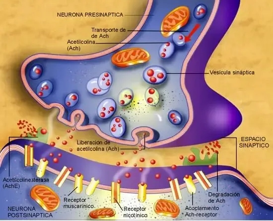
| BNM | Tipo | Dose intub. | Início | Duração | Metabolismo | Observação |
|---|---|---|---|---|---|---|
| Succinilcolina | Despol. | 1–1,5 mg/kg | 45–60s | 8–12min | Pseudocolinesterase | RSI; CI hipercalemia, HM |
| Rocurônio | N-Desp. | 0,6 / 1,2 mg/kg | 60–90s / 45s | 30–70min | Biliar/renal | RSI alternativa; reverter com sugammadex |
| Vecurônio | N-Desp. | 0,1 mg/kg | 3–5min | 25–40min | Biliar (80%) | Similar rocurônio; acúmulo hepatopatia |
| Cisatracúrio | N-Desp. | 0,15–0,2 mg/kg | 3–5min | 45–60min | Hofmann + esterases | Ideal hepatopatia/nefropatia; UTI |
| Pancurônio | N-Desp. | 0,08–0,1 mg/kg | 3–5min | 60–100min | Renal (60%) | Taquicardia (vagolítico); histórico |
| Fator | Mecanismo | Conduta |
|---|---|---|
| Acidose (↓ pH) | Aumenta ligação do BNM ao receptor | Corrigir pH antes de reverter |
| Hipotermia (<35°C) | Reduz metabolismo/excreção do BNM | Aquecimento ativo; aguardar normotermia |
| Hipocalemia (<3,5 mEq/L) | Hiperpolarização muscular potencializa bloqueio | Corrigir antes; reposição de K⁺ |
| Aminoglicosídeos | Inibem liberação pré-sináptica de ACh + ação pós-sináptica | Monitorar TOF rigoroso |
| Magnésio (hiperMg) | Compete com Ca²⁺ na liberação de ACh | Cuidado em pré-eclâmpsia/magnésio tocolítico |
| Insuficiência renal/hepática | Reduz eliminação (variável por BNM) | Preferir cisatracúrio; monitoramento contínuo |
| Fluoretos voláteis | Reduzem sensibilidade do receptor; potencializam BNM | Reduzir dose de BNM durante anestesia volátil |
| Situação (TOF) | BNM usado | Reversor Preferido | Dose | Alternativa |
|---|---|---|---|---|
| TOF ratio ≥0,9 (bloq. mínimo) | Qualquer | Aguardar | — | Extubação segura sem reversor |
| TOF count 3–4 (bloq. leve) | Rocurônio/Vecurônio | Sugammadex | 2 mg/kg | Neostigmina 0,04 mg/kg + atropina |
| TOF count 1–2 (bloq. moderado) | Rocurônio/Vecurônio | Sugammadex | 2–4 mg/kg | Neostigmina APENAS se TOF≥2 (risco!) |
| TOF count 0 + PTC 1–5 (bloq. profundo) | Rocurônio | Sugammadex | 4 mg/kg | Neostigmina: NÃO funciona |
| Imediatamente pós-RSI (emergência) | Rocurônio 1,2 mg/kg | Sugammadex | 16 mg/kg | Sem alternativa — protocolo CICO |
| Cisatracúrio/Atracúrio | Cisatracúrio | Neostigmina | 0,04–0,07 mg/kg | Sugammadex: ineficaz para benzilisoquinolinas |
| AL | pKa | Lipossolub. | Lig. Proteica | Início | Duração | Potência Relativa |
|---|---|---|---|---|---|---|
| Lidocaína | 7,9 | Moderada | 65% | Rápido (5–10 min) | 1–2h | 1× |
| Bupivacaína | 8,1 | Alta | 95% | Lento (15–30 min) | 4–8h | 4× |
| Ropivacaína | 8,1 | Alta | 94% | Lento (15–30 min) | 4–6h | 3× |
| Levobupivacaína | 8,1 | Alta | 97% | Lento (15–30 min) | 4–8h | 4× |
| Mepivacaína | 7,6 | Moderada | 77% | Rápido (5–15 min) | 2–4h | 1,5× |
| Tetracaína | 8,5 | Alta | 80% | Lento (15–30 min) | 3–5h (raqui) | 8× |
| Receptor | Localização | Efeito ao Ativar | Droga Exemplo |
|---|---|---|---|
| α₁ | Vasos periféricos | Vasoconstricção → ↑ RVS → ↑ PA | Fenilefrina, noradrenalina |
| α₂ | Pré-sináptico (SNC/SNP) | ↓ liberação NE (feedback negativo), sedação | Clonidina, dexmedetomidina |
| β₁ | Coração | ↑ FC (cronotrópico) + ↑ contratilidade (inotrópico) | Adrenalina, dobutamina, dopamina |
| β₂ | Músculo liso brônquico e vascular | Broncodilatação, vasodilatação periférica | Salbutamol, adrenalina (baixa dose) |
| Perfil clínico | PA | DC/FC | SVR | DVA 1ª linha | Se refratário |
|---|---|---|---|---|---|
| Choque séptico / vasoplegia | ↓ | ↑ ou N | ↓↓ | Noradrenalina 0.05–0.5 mcg/kg/min | + Vasopressina 0.03–0.04 UI/min |
| Choque cardiogênico | ↓ | ↓↓ | ↑ | Dobutamina 2–20 mcg/kg/min | + Noradrenalina se PA muito baixa |
| Hipotensão pós-indução (tônus vascular ↓) | ↓ | N ou ↓ | ↓ | Fenilefrina 50–200 mcg bolus IV | Efedrina 10 mg IV se bradicardia |
| Hipotensão pós-raqui / peridural | ↓ | ↓ ou N | ↓ | Fenilefrina 100 mcg IV (preserva FC) | Noradrenalina infusão se mantida |
| Bradicardia + hipotensão | ↓ | ↓↓ | N | Efedrina 10–30 mg IV | Atropina 0.5–1 mg IV |
| Hipertensão intraoperatória | ↑↑ | ↑ | ↑ | Aprofundar anestesia + esmolol | Nitroprussiato / nitroglicerina |
4 fatores de risco:
| Droga | Dose / Via | Timing | Objetivo Principal | Observação |
|---|---|---|---|---|
| Midazolam VO | 7,5–15 mg VO (0,3–0,5 mg/kg pediátrico) | 30–60 min antes | Ansiolise + amnésia | Mais usado no Brasil. Pode atrasar despertar se tardio. |
| Midazolam IV | 1–3 mg IV | 5–10 min antes | Ansiolise + previne mioclonias | Na sala. Monitoração obrigatória. |
| Clonidina VO | 0,1–0,3 mg VO | 60–90 min antes | Ansiolise + analgesia preemptiva + opioid-sparing | Cuidado com hipotensão e bradicardia. |
| Dexmedetomidina IN | 1–2 mcg/kg intranasal | 30–45 min antes | Sedação + ansiólise pediátrica | Excelente para crianças. Sem agulha. |
| Paracetamol VO/IV | 1 g VO/IV | 1 h antes ou indução | Analgesia preemptiva | Componente do protocolo ERAS. |
| Pregabalina VO | 75–150 mg VO | 1 h antes | Analgesia preemptiva · opioid-sparing | Cirurgias dolorosas, dor neuropática. |
| Dexametasona | 4–8 mg IV (indução) | Na indução | Anti-PONV + analgesia | Padrão na maioria dos protocolos ERAS. |
A MPA visa reduzir a ansiedade, promover amnésia, complementar analgesia preventiva, reduzir NVPO e atenuar respostas autonômicas à laringoscopia. A tendência ERAS é minimizar sedativos que atrasem recuperação.
| Objetivo | Fármaco de escolha | Alternativa |
|---|---|---|
| Ansiolítico / amnésia | Midazolam | Lorazepam |
| Analgesia preventiva | Cetamina 0.3 mg/kg IV | Paracetamol VO |
| ↓ Resposta hemodinâmica | Clonidina 2–4 mcg/kg VO | Dexmedetomidina |
| Antiemético | Dexametasona 8 mg IV | Ondansetrona |
| ↓ Secreção / sialagogo | Atropina (pediátrico) | Glicopirrolato |
| Via | Dose adulto | Dose pediátrica | Onset |
|---|---|---|---|
| VO | 7.5–15 mg | 0.3–0.5 mg/kg (máx 15 mg) | 20–30 min |
| IV | 1–2 mg titulado | 0.05 mg/kg | 2–3 min |
| IM | 0.05–0.1 mg/kg | 0.1–0.2 mg/kg | 10–15 min |
| Intranasal | — | 0.2–0.3 mg/kg | 10 min |
| Fármaco | Dose MPA | Vantagens | Efeitos adversos |
|---|---|---|---|
| Clonidina | 2–4 mcg/kg VO, 60–90 min antes | ↓MAC 15–25%, ↓dor pós-op, ↓NVPO | Hipotensão, bradicardia, sedação prolongada |
| Dexmedetomidina | 0.5–1 mcg/kg IV em 10 min (pré-indução) | Sedação sem depressão resp., analgesia, ↓agitação pediátrica | Bradicardia, hipotensão, ↑custo |
Protocolos ERAS recomendam reduzir ou eliminar benzodiazepínicos de rotina — especialmente em idosos e cirurgias ambulatoriais. O foco muda para analgesia preventiva (AINEs, paracetamol, cetamina em dose subanestésica) associada a técnicas regionais.
Para revisão pré-plantão ou pré-prova · 10 pontos essenciais
5 questões de múltipla escolha · Clique para revelar o gabarito
Alternativas:
A) 0.5 mg/kg
B) 2 mg/kg
C) 4 mg/kg
D) 8 mg/kg
E) 16 mg/kg
Alternativas:
A) Agonismo em receptores GABA-A
B) Antagonismo em receptores NMDA
C) Agonismo em receptores opioide μ
D) Bloqueio de canais de sódio
E) Agonismo em receptores α2-adrenérgicos
Alternativas:
A) Adulto em TIVA por 6 horas, dose 6 mg/kg/h
B) Adulto em UTI com dose <4 mg/kg/h por 24 horas
C) Pediátrico em sedação prolongada (>48h) em dose >4–5 mg/kg/h
D) Idoso em anestesia ambulatorial de 2 horas
E) Paciente com alergia ao ovo usando propofol com fosfolipídeos de soja
Alternativas:
A) Bloqueia apenas raízes sacrais (S1–S5), independente da posição
B) Tende a subir cranialmente por ser hiperbárica
C) Tende a descer em direção às regiões mais baixas (caudal) por ser mais densa que o LCR
D) Distribui-se uniformemente no espaço subaracnoide
E) Sem diferença em relação à isobárica na posição horizontal
Alternativas:
A) Efedrina 10 mg IV
B) Noradrenalina 0.1 mcg/kg/min em infusão
C) Fenilefrina 100–200 mcg IV em bolus
D) Dopamina 5 mcg/kg/min
E) Adrenalina 0.5 mg IM
Masculino, 58 anos, 75 kg, admitido em choque hemorrágico por politrauma (TAS 70 mmHg, FC 130 bpm, Hb 6,2 g/dL). Necessita de laparotomia exploradora de emergência. Acesso venoso calibroso obtido. Glasgow 12. Sem alergias conhecidas.
Gestante, 32 anos, 88 kg, 38 semanas, DPP com sofrimento fetal agudo. Não aceitou raquianestesia (agitação, não colabora). Indicação de anestesia geral com intubação orotraqueal de sequência rápida (RSI). Mallampati III, abertura de boca 3 cm. Sem alergias conhecidas.
Masculino, 65 anos, 70 kg, hernioplastia inguinal sob sedação + bloqueio do nervo ilioinguinal com 30 mL de bupivacaína 0,5% (150 mg total). Dois minutos após o bloqueio, relata gosto metálico na boca, depois tremores e agitação. Em seguida: convulsão tônico-clônica generalizada.
Feminina, 38 anos, não fumante, com histórico de PONV em cirurgia anterior (colecistectomia — vomitou por 8h na SRPA). Programada para laparoscopia ginecológica eletiva (1h30 estimado) com opioide pós-operatório. Escore Apfel: 4 fatores de risco.
Paciente ao fim de colecistectomia laparoscópica (45 min) com rocurônio 0,6 mg/kg IV (45 mg para 75 kg). Cirurgia concluída. Sevoflurano suspenso. SpO₂ 99%. Paciente abrindo os olhos. TOF-Watch medido no adutor do polegar: TOF ratio 0,5 (ou seja, T4/T1 = 0,5).
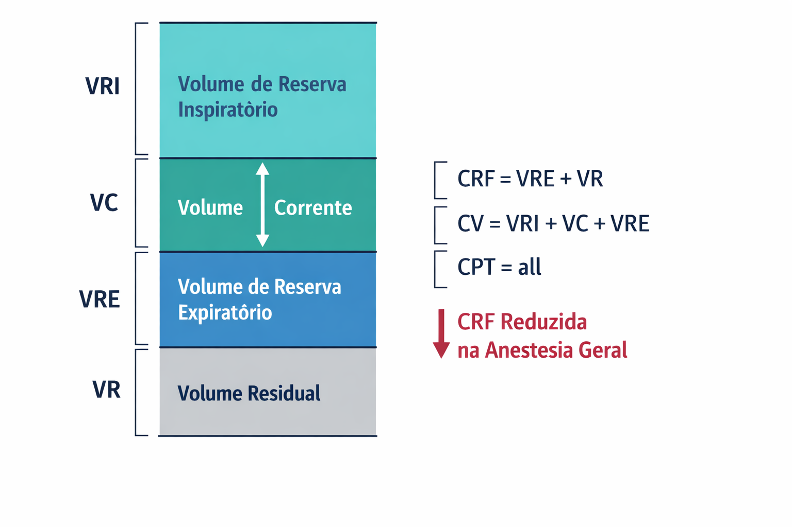
| Volume | Definição | Valor Normal |
|---|---|---|
| VC | Volume Corrente — ar mobilizado em cada ciclo (~7 mL/kg) | ~500 mL |
| VRI | Volume de Reserva Inspiratório — ar adicional inspirado além do VC | ~3000 mL |
| VRE | Volume de Reserva Expiratório — ar adicional expirado além do VC | ~1100 mL |
| VR | Volume Residual — ar que permanece no pulmão após expiração máxima (não expirável) | ~1200 mL |
| Capacidade | Composição | Valor Normal | Importância Anestésica |
|---|---|---|---|
| CRF | VRE + VR | ~2300 mL | CRÍTICA — reserva de O₂ durante apneia; reduz 15-20% em AG |
| CV | VRI + VC + VRE | ~4600 mL | Avaliação de função pulmonar pré-op |
| CPT | CV + VR | ~5800 mL | Volume total do sistema respiratório |
| CI | VC + VRI | ~3500 mL | Capacidade de inspiração profunda (MRA) |
| Parâmetro | Acordado | Anestesia + Supino | Obeso em AG |
|---|---|---|---|
| CRF | ~2300 mL | ~1900 mL (↓15-20%) | ~1200 mL (↓até 50%) |
| Capacidade de fechamento | < CRF | Pode exceder CRF → atelectasia | Frequentemente > CRF |
| Shunt intrapulmonar | 2-5% | 5-10% | 10-25% |
| Tipo | Fórmula | Normal | O que Reflete |
|---|---|---|---|
| Estática (Cst) | VC / (P platô - PEEP) | 60-100 mL/cmH₂O | Elastância pulmão + parede torácica (sem fluxo) |
| Dinâmica (Cdyn) | VC / (P pico - PEEP) | 50-80 mL/cmH₂O | Elastância + resistência (com fluxo) |
| Fórmula | Normal | Significado |
|---|---|---|
| Raw = (P pico - P platô) / Fluxo | 5-15 cmH₂O/L/s | P pico - P platô < 10 cmH₂O em condições normais |
| Tipo | Definição | Volume | Relevância |
|---|---|---|---|
| Anatômico | Vias aéreas condutoras (sem troca gasosa) | ~150 mL (~2 mL/kg) | Fixo; IOT reduz ligeiramente (bypass nariz/faringe) |
| Alveolar | Alvéolos ventilados mas não perfundidos | Variável | ↑ em TEP, hipotensão, PEEP excessivo |
| Fisiológico | Anatômico + Alveolar | ~30% do VC (VD/VT) | Equação de Bohr para cálculo |
| V/Q | Condição | Exemplos | Resposta ao O₂ |
|---|---|---|---|
| 0,8 | Normal | Pulmão saudável em posição ereta | Normal |
| 0 (Shunt) | Perfundido mas não ventilado | Atelectasia, consolidação, SDRA | NÃO responde ao ↑ FiO₂ |
| ∞ (Espaço morto) | Ventilado mas não perfundido | TEP, hipotensão grave | Gradiente ETCO₂/PaCO₂ ↑↑ |
| Baixo (<0,8) | Ventilação relativa insuficiente | Broncoespasmo, muco, atelectasia parcial | Responde parcialmente ao O₂ |
| Efeito | Mecanismo | Consequência Clínica |
|---|---|---|
| ↓ CRF | Tônus diafragmático abolido + supino | Fechamento vias aéreas → shunt |
| Atelectasia | Compressão + absorção (FiO₂ alta) | Hipoxemia; ↑ gradiente P(A-a)O₂ |
| ↓ Compliance | Atelectasia + peso abdominal + BNM | ↑ pressões de via aérea |
| ↑ Espaço morto | PEEP excessiva + hipoperfusão + posição | ↑ gradiente ETCO₂-PaCO₂ |
| Abolição do drive | Anestésicos deprimem centros respiratórios | Necessidade de VM obrigatória em AG |
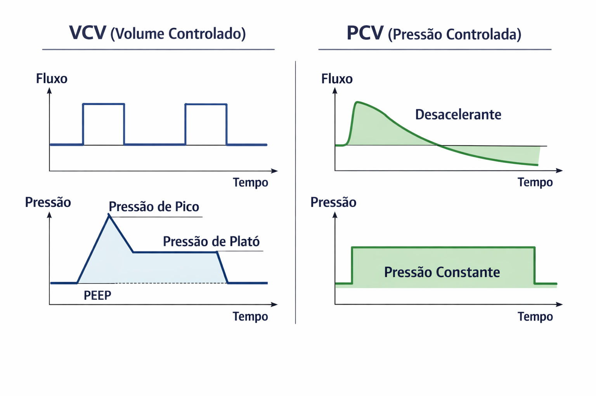
| Modo | Controlada / Dependente | Fluxo | Vantagem | Indicação em Anestesia |
|---|---|---|---|---|
| VCV | Volume fixo / Pressão variável | Quadrada | VC garantido | Pulmão normal, cirurgias curtas |
| PCV | Pressão fixa / Volume variável | Desacelerante | ↓ Ppico | Laparoscopia, obeso, Trendel. |
| PCV-VG | P auto-ajustada / VC garantido | Desacelerante | Híbrido: ↓Ppico + VC certo | Padrão crescente geral |
| SIMV | Vol/P mandatória + espontânea | Variável | Mand. + espontânea | Desmame ventilatório |
| PSV | Pressão suporte / Vol paciente | Desacelerante | Conforto, sincronia | Sedação c/ vent. espontânea |
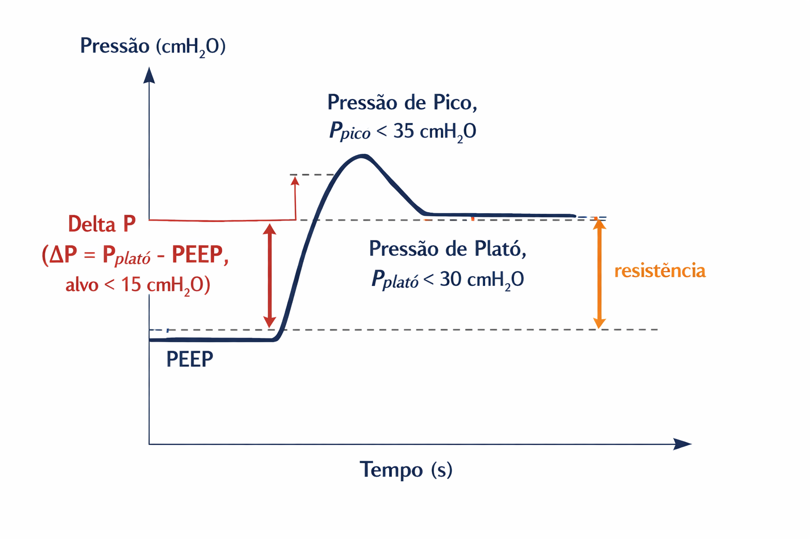
| Padrão | Ppico | Pplatô | Diagnóstico | Causas |
|---|---|---|---|---|
| Tipo 1 | ↑↑ | Normal | Problema de RESISTÊNCIA | Broncoespasmo, secreção, TOT dobrado, tubo fino |
| Tipo 2 | ↑↑ | ↑↑ | Problema de COMPLIANCE | Pneumotórax, SDRA, pneumoperitônio, broncoespasmo grave |
| Parâmetro | Significado | Normal |
|---|---|---|
| P platô | Pressão alveolar de distensão | < 30 cmH₂O |
| Ppico - P platô | Resistência das vias aéreas | < 10 cmH₂O |
| P platô ↑↑ | Compliance reduzida → risco de VILI | Investigar causa |
| Estudo | Resultado |
|---|---|
| Amato et al., NEJM 2015 | ΔP foi o preditor INDEPENDENTE mais forte de sobrevida em SDRA — marco histórico |
| Neto et al., Lancet Respir Med 2016 | Meta-análise: ΔP preditor independente mais forte de CPP (OR 1,41 por cada 5 cmH₂O) |
| DESIGNATION, JAMA 2026 | PEEP guiado por ΔP vs PEEP 5 fixo → não reduziu CPP, mas ↑ hipotensão intraoperatória |
| PEEP | Contexto | Observações |
|---|---|---|
| 5 cmH₂O | Padrão inicial em toda AG | Previne atelectasia fisiológica; seguro hemodinamicamente |
| 6-10 cmH₂O | Laparoscopia, Trendelenburg, obesos | Individualizar por ΔP ou compliance |
| 10-15 cmH₂O | SDRA, atelectasia refratária | Cuidado: efeitos hemodinâmicos (↓ RV, ↓ DC) |
| Estudo | Desenho | Resultado Principal |
|---|---|---|
| PROVHILO (Lancet 2014) | PEEP 12 + MRA vs PEEP 2 — cirurgia abdominal | Sem diferença em CPP |
| PROBESE (JAMA 2019) | PEEP 12 + MRA vs PEEP 4 — obesos | Sem diferença em CPP; mais hipotensão |
| DESIGNATION (JAMA 2026) | PEEP guiado por ΔP vs PEEP 5 fixo — 1435 pacientes | Sem diferença em CPP; mais hipotensão no grupo PEEP alto |
| Situação | FiO₂ Recomendada | Justificativa |
|---|---|---|
| Pré-oxigenação | FiO₂ 1,0 por 3-5 min | Reserva O₂ > 8 min vs 2-3 min com ar ambiente |
| Pós-IOT (5 min) | FiO₂ 1,0 → reduzir para 0,4 | Confirmar ventilação; depois desescalar |
| Manutenção | FiO₂ 0,3-0,4 | Mínima para SpO₂ ≥ 94%; evita atelectasia de absorção |
| Hipoxemia refratária | FiO₂ ↑ transitório | Enquanto resolve causa (MRA, PEEP, posição) |
| Relação I:E | Aplicação | Observações |
|---|---|---|
| 1:2 (padrão) | Rotina — maioria das cirurgias | Ti = 1/3 do ciclo → tempo expiratório adequado |
| 1:1 | SDRA moderada-grave | ↑ tempo inspiratório → recrutamento; ↑ pressão média |
| >1:1 (invertida) | Não recomendada em rotina | Risco de auto-PEEP; reservada para situações extremas |
| 1:3 ou 1:4 | DPOC, broncoespasmo | ↑ tempo expiratório para esvaziamento completo |
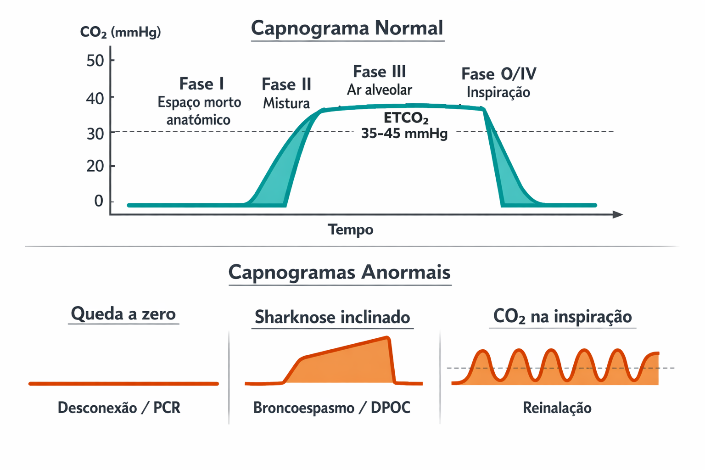
| Parâmetro | Normal | Significado |
|---|---|---|
| ETCO₂ | 35-45 mmHg | CO₂ alveolar ao final da expiração |
| Gradiente PaCO₂ - ETCO₂ | ~5 mmHg | ↑ em shunt/espaço morto (TEP, hipotensão, SDRA) |
| Padrão | Achado | Causas | Conduta |
|---|---|---|---|
| Queda súbita → zero | ETCO₂ desaparece abruptamente | Desconexão, extubação, PCR, embolia maciça | Verificar circuito → RCP se PCR |
| Subida progressiva | ETCO₂ sobe gradualmente | Hipoventilação, absorção CO₂ pneumoperitônio, febre, HM | ↑ FR; avaliar causa metabólica |
| Platô inclinado ("Sharknose") | Fase III com slope ascendente | Broncoespasmo, DPOC, obstrução parcial | Broncodilatadores; verificar TOT |
| ETCO₂ baixo persistente | ETCO₂ < 30 mmHg constante | Hiperventilação, ↓ DC, TEP, hipotermia | ↓ FR se hiperventilação; avaliar DC |
| CO₂ na inspiração | Baseline não retorna a zero | Reinalação (cal sodada esgotada, válvula defeituosa) | Trocar cal sodada; verificar válvulas |
| Subida abrupta | ETCO₂ sobe rapidamente | Liberação de torniquete, bicarbonato IV, MH | Avaliar contexto; se MH → protocolo |
| Queda gradual | ETCO₂ cai lentamente | Hipoperfusão, hipotermia, ↓ metabolismo | Avaliar DC e volemia |
| Oscilações cardiogênicas | Ondulações no platô | Pulsações cardíacas transmitidas ao pulmão | Normal; mais visível em FR baixa |
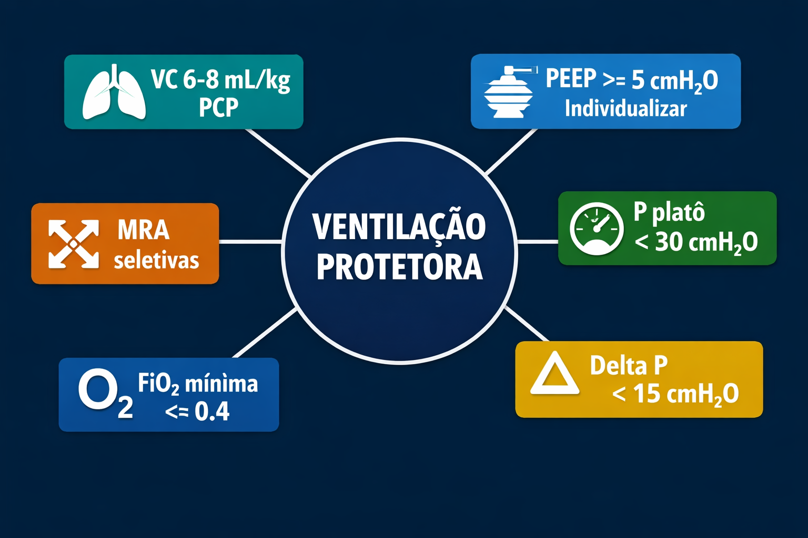
| Técnica | Como Realizar | Segurança |
|---|---|---|
| Suspiro de volume | VC × 2-3 por 3-5 ciclos | Moderada — risco de barotrauma se Pplat > 40 |
| CPAP sustentado | 30-40 cmH₂O por 30-40 segundos | Cuidado: hipotensão grave possível |
| Incremento gradual (FUTIER 2013) | Escalonamento +4 mL/kg até P platô 30-35 cmH₂O → 3-5 ciclos | Mais segura — recomendada |
| Fator de Risco | Pontos |
|---|---|
| Idade 51-80 anos | +3 |
| Idade > 80 anos | +16 |
| SpO₂ pré-operatória < 96% | +8 |
| Infecção respiratória no último mês | +17 |
| Anemia pré-operatória (Hb < 10 g/dL) | +11 |
| Incisão intratórax | +24 |
| Incisão abdominal superior | +15 |
| Duração da cirurgia 2-3h | +16 |
| Duração da cirurgia > 3h | +23 |
| Cirurgia de emergência | +8 |
| Score | Risco | Incidência CPP | Conduta |
|---|---|---|---|
| < 26 | Baixo | ~1,6% | VP padrão |
| 26-44 | Moderado | ~13% | VP intensificada + monitorização |
| ≥ 45 | Alto | ~42% | VP intensificada + MRA + CPAP pós-op |
| Estudo | Ano / Journal | Desenho | Resultado Principal |
|---|---|---|---|
| ARDSNet | 2000 / NEJM | VC 6 vs 12 mL/kg (SDRA) | Mortalidade -22% (31 vs 40%) |
| IMPROVE | 2013 / JAMA | VP vs convencional — abdome | CPP -50% com VP intraoperatória |
| PROVHILO | 2014 / Lancet | PEEP 12+MRA vs PEEP 2 | Sem diferença em CPP |
| Amato et al. | 2015 / NEJM | Meta-análise ΔP em SDRA | ΔP melhor preditor de sobrevida |
| Guldner et al. | 2015 / Anesthesiology | Meta-análise VP intraop | VC 6-8 + PEEP → ↓ CPP |
| PROBESE | 2019 / JAMA | PEEP 12+MRA vs PEEP 4 (obesos) | Sem diferença em CPP; ↑ hipotensão |
| Consensus BJA | 2019 / BJA | Consenso internacional VP | VC 6-8 + PEEP ≥ 5 + MRA seletiva |
| DESIGNATION | 2026 / JAMA | PEEP guiado ΔP vs PEEP 5 fixo | Sem diferença em CPP; ↑ hipotensão |
| Parâmetro | Ajuste | Justificativa |
|---|---|---|
| Modo | PCV ou PCV-VG preferível | Melhor controle de Ppico com volume mantido |
| FR | ↑ 2-4 irpm vs basal | Compensar absorção extra de CO₂ |
| PEEP | 6-10 cmH₂O (individualizar) | Contrapor atelectasia induzida pelo pneumoperitônio |
| VC | Manter 6-8 mL/kg PCP | Não compensar ETCO₂ aumentando VC |
| I:E | Manter 1:2 (avaliar 1:1,5) | Avaliar se necessário mais tempo inspiratório |
| Parâmetro | Recomendação | Observação |
|---|---|---|
| VC | 6-8 mL/kg PCP | NUNCA usar peso real |
| PEEP | 8-12 cmH₂O | Individualizar por ΔP ou compliance |
| Modo | PCV ou PCV-VG | Preferível ao VCV |
| MRA | Após IOT e após desconexão | Obesos têm maior tendência a atelectasia |
| Posição | Trendelenburg reverso na indução | ↑ CRF vs supino plano |
| FiO₂ | Mínima para SpO₂ ≥ 94% | Atelectasia de absorção mais grave em obesos |
| Gravidade | P/F | Mortalidade |
|---|---|---|
| Leve | 200-300 | 27% |
| Moderada | 100-200 | 32% |
| Grave | < 100 | 45% |
| Parâmetro | Valor | Observação |
|---|---|---|
| VC | 4-6 mL/kg PCP | Pulmão ventilado recebe todo o VC |
| PEEP | 5 cmH₂O | No pulmão ventilado |
| FiO₂ | Titulada (iniciar 1,0 → reduzir) | Manter SpO₂ ≥ 92% |
| FR | ↑ para compensar ↓ VC | Manter ETCO₂ 35-45 |
| Parâmetro | Alteração | Implicação |
|---|---|---|
| CRF | ↓ 20-25% | Menor reserva de O₂; dessaturação rápida |
| Consumo de O₂ | ↑ 20% | Maior velocidade de consumo durante apneia |
| Volume-minuto | ↑ 30-50% | Desnitrogenação mais rápida na pré-oxigenação |
| PaCO₂ basal | ~30 mmHg (alcalose resp. compensada) | Manter ETCO₂ ~30-32 mmHg (não normalizar para 40) |
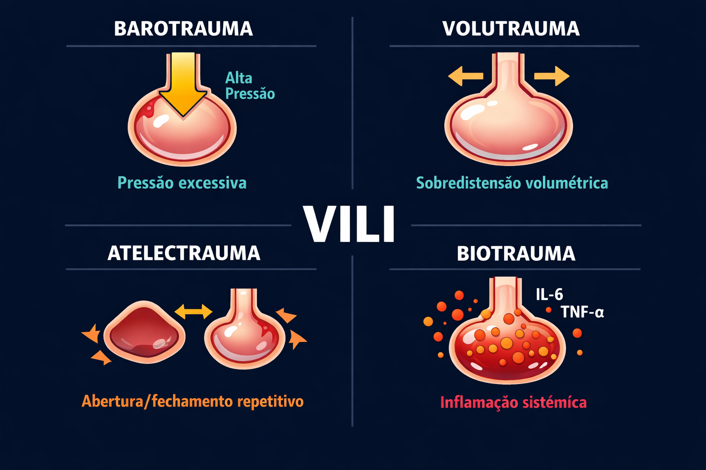
| Mecanismo | Definição | Gatilho | Prevenção |
|---|---|---|---|
| Barotrauma | Pressão excessiva → ruptura alveolar → pneumotórax, pneumomediastino | P platô > 30, ΔP > 15 | Limitar pressões |
| Volutrauma | Sobredistensão alveolar por volumes excessivos → lesão estrutural | VC alto em pulmão pequeno | VC 6-8 mL/kg PCP |
| Atelectrauma | Abre/fecha repetitivo de alvéolos colapsados → shear stress nas junções | PEEP insuficiente | PEEP adequado ("keep the lung open") |
| Biotrauma | Liberação de mediadores inflamatórios → SIRS pulmonar → disfunção orgânica sistêmica | Qualquer mecanismo acima | VP multicomponente |
| Derivação | O Que Monitora | Sensibilidade |
|---|---|---|
| Derivação II | Onda P bem visível → diagnóstico de arritmias, eixo inferior | Referência para arritmias |
| V5 | Parede lateral do VE → isquemia território DA/Cx | 75% das isquemias periop. |
| II + V5 | Combinação ideal — padrão ouro perioperatório | ~80–90% das isquemias |
| V4R | Ventrículo direito — infarto de VD | Específico para VD |
| Arritmia | Contexto Periop. | Conduta Imediata |
|---|---|---|
| Bradicardia sinusal | Laringoscopia, reflexo vagal, neostigmina, betabloqueador | Atropina 0,5–1 mg IV; se grave → efedrina/adrenalina |
| Taquicardia sinusal | Plano anestésico superficial, dor, hipovolemia, febre | Tratar causa; betabloqueador se necessário |
| ESV / BESV | Hipóxia, hipocalemia, isoflurano + adrenalina | Corrigir causa; amiodarona se sintomático/multifocal |
| BAV 2° / 3° | Cirurgia cardíaca, vagotonia extrema | Atropina → marca-passo transcutâneo → ECMO se grave |
| FA de início agudo | Cirurgia torácica, hipertireoidismo, hipóxia | Controle de FC (betabloqueador/amiodarona) → cardioversão se instável |
| TV / FV | Intoxicação por AL, hipóxia, isquemia, hipercalemia | RCP imediato → desfibrilação → ACLS → lipídio EV se LAST |
| Causa de Erro | Efeito na Leitura | Conduta |
|---|---|---|
| Metahemoglobinemia | SpO₂ falsamente ~85% (independente do valor real) | Co-oximetria — SpO₂ não confiável; azul de metileno |
| Carboxihemoglobin (CO) | SpO₂ falsamente ELEVADA — leitura normal mesmo com intoxicação | Co-oximetria obrigatória em intoxicação por CO |
| Hipoperfusão periférica | Sinal fraco / leitura ausente ou errática | Reposicionar sensor; usar sensor de reflexão (testa) |
| Esmalte de unhas escuro | Subtração de sinal — pode causar falsa queda | Remover esmalte ou girar sensor 90° |
| Anemia grave (Hb <5) | SpO₂ pode parecer normal mesmo com DO₂ inadequado | Gasometria + Hb para avaliação real |
| Icterícia intensa | Bilirrubina absorve luz — pode interferir | Gasometria arterial para confirmação |
| Circunferência do Braço | Manguito | Erro se Errado |
|---|---|---|
| < 22 cm | Pediátrico adulto / obeso | Manguito pequeno → superleitura |
| 22–32 cm | Adulto padrão | — |
| 33–44 cm | Grande adulto / obeso | Manguito grande → subleitura |
| > 44 cm | Coxa (obeso mórbido) | Considerar PAI obrigatória |
| ETCO₂ | Interpretação | Conduta |
|---|---|---|
| 35–45 mmHg | Normal | Manter parâmetros ventilatórios |
| 46–55 mmHg | Hipoventilação / hipercapnia leve | Aumentar VC ou FR |
| >55 mmHg | Hipercapnia significativa / HM (se em ascensão) | Investigar urgente; considerar HM |
| <35 mmHg | Hiperventilação | Reduzir FR/VC — risco de isquemia cerebral |
| ≈ 0 mmHg (agudo) | Desconexão / extubação / embolia maciça / PCR | Investigar IMEDIATAMENTE — verificar via aérea |
| Sítio | Correlação Central | Vantagens | Desvantagens |
|---|---|---|---|
| Esôfago (terço distal) | Excelente (temperatura core) | Padrão ouro intubados | Requer IOT; não para sedações |
| Artéria Pulmonar | Referência absoluta | Padrão ouro de pesquisa | Invasivo (Swan-Ganz) |
| Nasofaringe | Boa (próximo hipotálamo) | Fácil → usar com IOT nasal | Epistaxe possível |
| Timpânico (IR) | Boa (próximo SNC) | Não invasivo; rápido | Cerume, posição incorreta alteram leitura |
| Axilar | Razoável | Fácil; amplamente disponível | 1–2°C abaixo da temperatura central |
| Cutâneo (adesivo) | Fraca | Contínuo, não invasivo | Reflete temperatura periférica, não core |
| Monitor | Parâmetro | Valor Normal | Alarme Mínimo | Alarme Máximo |
|---|---|---|---|---|
| ECG | FC | 60–100 bpm | <45 bpm | >120 bpm |
| SpO₂ | Saturação | ≥95% | <90% | — |
| PANI | PAM | 70–100 mmHg | <60 mmHg | >110 mmHg |
| PANI | PAS | 90–140 mmHg | <80 mmHg | >160 mmHg |
| Capnografia | ETCO₂ | 35–45 mmHg | <25 mmHg | >55 mmHg |
| Temperatura | Temp. central | 36–37°C | <35,5°C | >38,5°C |
| BIS | Índice BIS | 40–60 (AG) | <30 | >70 (AG) |
| TOF | TOF ratio | ≥0,9 (extubação) | <0,9 ao final | — |
| ETCO₂ | FR efetiva | 10–14 irpm (ventilado) | <8 irpm | >20 irpm |
| PAI | PAM invasiva | 70–105 mmHg | <60 mmHg | >110 mmHg |
| Grau | Experiência | Prevalência |
|---|---|---|
| Grau 0 | Nenhuma awareness (ausência de memória) | 99,8–99,9% |
| Grau 1 | Percepção auditiva isolada — sem dor | ~0,1% |
| Grau 2 | Percepção sensorial (tato, pressão) — sem dor | Raro |
| Grau 3 | Dor intraoperatória — muito angustiante | Muito raro |
| Grau 4 | Dor + paralisia: o pior cenário — terror absoluto | Excepcional, mas devastador |
| Grau 5 | Outros (sensação de sufocamento, pesadelos) | Variável |
| Situação | BIS Esperado | Real/Paradoxo | Conduta |
|---|---|---|---|
| Cetamina | ↓ (anestesiado) | BIS AUMENTA (atividade EEG aumentada) | Não usar BIS como guia com cetamina |
| N₂O isolado | ↓ esperado | BIS inconsistente — pode não cair | Usar BIS apenas como tendência com N₂O |
| Artefato muscular (EMG) | Em plano anestésico | BIS falsamente ELEVADO (tônus muscular) | Verificar EMG >55 dB → artefato |
| Marca-passo cardíaco | — | Interferência eletromagnética → BIS errado | Deslocar sensor; filtrar interferência |
| Hipotermia grave | — | BIS cai com hipotermia mesmo em paciente acordado | Correlacionar com temperatura central |
| AVC isquêmico hemisférico | — | BIS pode ser <40 com paciente consciente (hemisfério lesado) | Anamnese + contexto clínico |
| Isoflurano/Sevo/Des (dose alta) | ↓ esperado | Dose-dependente — confiável neste caso | BIS válido como guia com halogenados |
| Letra | Parâmetro | 0 ponto | 1 ponto | 2 pontos |
|---|---|---|---|---|
| P | Pressão Arterial | PA normal (basal) | PAS > basal +15 mmHg | PAS > basal +30 mmHg |
| R | FC (Rate) | FC normal (basal) | FC > basal +15 bpm | FC > basal +30 bpm |
| S | Sudorese | Pele seca | Pele úmida visível | Sudorese franca |
| T | Lágrimas (Tears) | Sem lágrimas | Umedecimento ocular | Lágrimas escorrendo |
| TOF Count / Ratio | Nível de Bloqueio | Reversão Segura? | Reversor de Escolha |
|---|---|---|---|
| TOF 0 / PTC 0 | Bloqueio TOTAL (intenso) | NÃO — aguardar | Sugammadex 16 mg/kg (emergência) |
| TOF 0 / PTC 1–2 | Bloqueio profundo | NÃO — aguardar | Sugammadex 4 mg/kg (profundo) |
| TOF count 1–2 | Bloqueio moderado | NÃO — aguardar | Sugammadex 4 mg/kg quando PTC >2 |
| TOF count 3 | Bloqueio moderado-leve | NÃO revert. c/ neostigmina | Sugammadex 2–4 mg/kg |
| TOF count 4, ratio 0,7–0,89 | Bloqueio RESIDUAL | Incompleta — não extubar | Sugammadex 2 mg/kg ou neostigmina (c/ cautela) |
| TOF ratio ≥ 0,9 | Recuperação adequada | SIM — extubação segura | Não necessário reversor adicional |
| Indicação | Dose | TOF esperado pós |
|---|---|---|
| Bloqueio moderado (TOF count ≥2) | 2 mg/kg IV | TOF ratio ≥0,9 em ~3 min |
| Bloqueio profundo (PTC 1–2) | 4 mg/kg IV | TOF ratio ≥0,9 em ~3 min |
| Reversão imediata / emergência (TOF 0 pós-dose plena) | 16 mg/kg IV | TOF ratio ≥0,9 em 3–5 min |
| Dose neostigmina | 0,04–0,07 mg/kg IV (máx. 5 mg) |
| Dose glicopirrolato | 0,2 mg para cada 1 mg de neostigmina (ratio 1:5) |
| Alternativa anticolinérgico | Atropina 0,01 mg/kg (age mais rápido — usar se bradicardia) |
| Onset de reversão | 5–15 minutos (muito mais lento que sugammadex) |
| Contra-indicação | TOF count <4 / bloqueio profundo / cirurgia em intestino (↑ peristaltismo) |
| Artéria | Vantagens | Desvantagens | Teste Prévio |
|---|---|---|---|
| Radial (1ª escolha) | Superficial, colateral ulnar, baixa morbidade | Pequeno calibre em vasoconstrição | Teste de Allen |
| Femoral | Calibre maior, fácil em choques | Infecção, não adequada em deambulação | — |
| Braquial | Boa pulsatilidade | Fluxo terminal → isquemia do antebraço | — |
| Dorsal do pé | Útil quando radial inacessível | Mais instável, mobilidade do pé | Compressão tibial |
| Método | Princípio | Invasividade | Indicações |
|---|---|---|---|
| Swan-Ganz (cateter AP) | Termodiluição pulmonar (histórico) | Alta (cateter AP) | Hipertensão pulmonar, disfunção VD grave |
| PiCCO | Termodiluição transpulmonar + contorno de pulso | Moderada (CVC + linha femoral) | UTI, choque, grandes cirurgias |
| LiDCO | Diluição de lítio + contorno de pulso | Moderada (linha arterial + CVC) | Cirurgia abdominal maior, trauma |
| FloTrac/Vigileo | Contorno de pulso (análise estatística) | Baixa (só linha arterial) | Cirurgias de médio/grande porte |
| EcoTTE/TEE | Doppler — integral velocidade-tempo (IVT) | Não invasivo / mínima | Periop, UTI, avaliação focal |
| Erro | Efeito | Como Evitar |
|---|---|---|
| Bolhas de ar na seringa | PaO₂ falsa ↑, PaCO₂ falsa ↓ | Expurgar imediatamente após coleta |
| Excesso de heparina | Dilui amostra → pH ↑, CO₂ ↓ artefato | Usar seringa pré-heparinizada; 0,5 mL máx |
| Demora para analisar (>15 min, temp. amb.) | Metabolismo celular continua → pH ↓, PaO₂ ↓, PaCO₂ ↑ | Analisar em <15 min ou gelar (até 60 min) |
| Punção venosa acidental | PaO₂ muito baixa, PCO₂ alta — suspeitar | Confirmar: sangue pulsátil, vermelho-vivo |
| Leucocitose grave (>100.000/mm³) | Leucócitos consomem O₂ → PaO₂ falsamente baixa | Analisar imediatamente; informar ao lab |
| Distúrbio | Compensação Esperada |
|---|---|
| Acidose Metabólica | PaCO₂ = 1,5 × HCO₃ + 8 ± 2 (Fórmula de Winter) |
| Alcalose Metabólica | PaCO₂ aumenta 0,6 mmHg por cada 1 mEq/L ↑ HCO₃ |
| Acidose Resp. Aguda | HCO₃ ↑ 1 mEq/L por cada 10 mmHg ↑ PaCO₂ |
| Acidose Resp. Crônica | HCO₃ ↑ 3,5 mEq/L por cada 10 mmHg ↑ PaCO₂ |
| Alcalose Resp. Aguda | HCO₃ ↓ 2 mEq/L por cada 10 mmHg ↓ PaCO₂ |
| Alcalose Resp. Crônica | HCO₃ ↓ 5 mEq/L por cada 10 mmHg ↓ PaCO₂ |
| Distúrbio | pH | PaCO₂ | HCO₃ | Causas Comuns |
|---|---|---|---|---|
| Acidose Respiratória | ↓ | ↑ (>45) | ↑ (comp.) | Hipoventilação, DPOC, opioides, BNM residual, obesidade |
| Alcalose Respiratória | ↑ | ↓ (<35) | ↓ (comp.) | Hiperventilação, dor, ansiedade, hipóxia, ventilação excessiva |
| Acidose Metabólica AG↑ | ↓ | ↓ (comp.) | ↓ | Lactato, cetoacidose, uremia, intoxicação |
| Acidose Metabólica AG normal | ↓ | ↓ (comp.) | ↓ | Diarreia, SF 0,9% excessivo, RTA, ileostomia |
| Alcalose Metabólica | ↑ | ↑ (comp.) | ↑ | Vômitos, aspiração gástrica, diuréticos, hipocalemia |
| Misto: Acid. Resp. + Acid. Met. | ↓↓ | ↑↑ | ↓ | PCR, DPOC + choque, fadiga + sepse |
| Misto: Alc. Resp. + Alc. Met. | ↑↑ | ↓↓ | ↑ | Insuficiência hepática + aspiração gástrica |
| Triplo distúrbio | Variável | Variável | Variável | UTI grave: DPOC + sepse + aspiração |
| Lactato | Significado | Conduta |
|---|---|---|
| <2 mmol/L | Normal | Manter vigilância |
| 2–4 mmol/L | Hiperlactatemia — investigar causa | Tratar causa, reavaliação 1–2h |
| >4 mmol/L | Choque hemorrágico, séptico, cardiogênico | Ressuscitação imediata guiada por objetivo |
| Em ascensão progressiva | Hipoperfusão não tratada / HM (associado a↑ETCO₂) | Emergência — investigar HM, choque |
| Elevado SEM hipoperfusão | Hipermetabolismo (HM, sepse hiperdinâmica, crise adrenérgica) | Clinicamente diferenciado do lactato hipóxico |
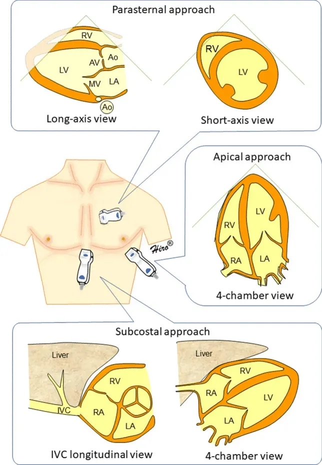
| Aparência | FEVE Estimada | Classificação |
|---|---|---|
| Cavidade quase obliterando na sístole | >60% | Normal-alta |
| Boa contração, redução >30% da cavidade | 45–60% | Normal |
| Contração reduzida, paredes pouco espessando | 30–45% | Disfunção moderada |
| Cavidade estática, paredes quase sem movimento | <30% | Disfunção grave |
| Diâmetro VCI | Colapso Inspiratório | PAD Estimada | Interpretação |
|---|---|---|---|
| <1,5 cm | >50% (colapsável) | 0–5 mmHg | Hipovolemia — responsivo a fluidos |
| 1,5–2,5 cm | 50% variável | 5–10 mmHg | Normovolemia |
| >2,5 cm | <50% (rígida) | >15 mmHg | Hipervolemia / hipertensão venosa / tamponamento |
| Fase | O Que Acontece | CO₂ Medido |
|---|---|---|
| Fase I | Expiração do espaço morto anatômico (ar da via aérea) — sem CO₂ | ≈ 0 mmHg |
| Fase II | Mistura entre espaço morto e ar alveolar — ascensão rápida | 0 → ETCO₂ |
| Fase III | Platô alveolar — expiração predominantemente de CO₂ alveolar | ≈ ETCO₂ (pico) |
| Fase IV | Início da inspiração — CO₂ cai abruptamente a zero | ETCO₂ → 0 |
| Causa | Contexto Clínico | Diferencial |
|---|---|---|
| Hipertermia Maligna | ETCO₂ ascendente INTRATÁVEL mesmo com ↑ FR/VC | Temperatura ↑↑, espasmo masseterino, rigidez |
| Hipoventilação | Máquina mal configurada, vazamento | Corrigir FR/VC |
| Absorção de CO₂ (lap.) | Laparoscopia com pneumoperitônio de CO₂ | Esperado — ↑ FR ~20% |
| Torniquete liberado | CO₂ acumulado retorna circulação | Transitório, normaliza em minutos |
| Cal sodada exausta | CO₂ recirculando no circuito | Troca o absorvente |
| Parâmetro | Valor Inicial | Alvo | Observação |
|---|---|---|---|
| Volume corrente (VC) | 6–8 mL/kg PIB* | 6 mL/kg PIB preferível | *Peso Ideal pelo Body Surface: H: 50+0,91×(altura cm-152,4); M: 45,5+0,91×(altura cm-152,4) |
| Frequência respiratória (FR) | 10–14 irpm | ETCO₂ 35–45 mmHg | Ajustar conforme capnografia |
| PEEP | 4–8 cmH₂O | 5 cmH₂O padrão | ↑ para 8–10 em obesos/Trendelenburg |
| FiO₂ | 0,4–0,6 (40–60%) | SpO₂ ≥95% | Evitar FiO₂ 1,0 de rotina (atelectasia por absorção) |
| Relação I:E | 1:2 | 1:2 padrão | Obstrução → 1:3 ou 1:4 |
| Pressão de platô (Pplatô) | — | <30 cmH₂O | Medir com pausa inspiratória de 0,5s |
| Driving pressure (DP) | — | <15 cmH₂O | DP = Pplatô − PEEP; melhor preditor de lesão |
| Modo | Controla | Varia | Vantagem Principal | Desvantagem |
|---|---|---|---|---|
| VCV (Volume-controlado) | VC fixo | Pressão | VC garantido → ETCO₂ previsível | Risco pico de pressão alto |
| PCV (Pressão-controlada) | Pressão fixa | VC | Limita pressão de pico → menos barotrauma | VC varia com complacência pulmonar |
| PRVC / VC+ | VC alvo + limite P | Pressão (ajusta) | Combina vantagens de ambos | Complexidade; disponível em aparelhos modernos |
Para revisão pré-plantão ou pré-prova · 10 pontos essenciais
5 questões de múltipla escolha · Clique para revelar o gabarito
Alternativas:
A) BIS 72 está dentro do alvo ideal (60–80), conduta: manter
B) BIS 72 indica anestesia excessivamente profunda, reduzir agentes
C) BIS 72 está acima do alvo (40–60), indicando anestesia insuficiente — risco de awareness; aprofundar
D) BIS 72 só é relevante se o paciente apresentar movimento
E) BIS não é confiável durante laparoscopia; ignorar o valor
Alternativas:
A) Hipoventilação aguda
B) Extubação acidental
C) Embolia pulmonar maciça ou parada cardiorrespiratória
D) Hipercapnia por reinalação
E) Broncoespasmo grave
Alternativas:
A) Sim, pois o paciente responde a estímulos verbais
B) Sim, pois 2 twitch indica recuperação adequada
C) Não — há bloqueio residual; usar neostigmina e aguardar TOF ratio ≥0.9
D) Não — o cisatracúrio não pode ser revertido
E) Sim, se SpO2 estiver acima de 95% em ar ambiente
Alternativas:
A) PPV 18% indica sobrecarga volêmica; usar furosemida
B) PPV 18% é normal; tratar apenas com vasopressor
C) PPV >13% = fluido-responsivo; infundir 250 mL de cristaloide e reavaliar
D) PPV não é confiável em modo VCV
E) Iniciar noradrenalina sem expansão volêmica
Alternativas:
A) Hipoventilação alveolar global
B) Embolia pulmonar
C) Broncoespasmo ou obstrução de via aérea (ex.: DPOC)
D) Desconexão do circuito
E) Reinalação de CO2 por válvula unidirecional defeituosa
| Paciente | Mulher, 45 anos, ASA II, colecistectomia videolaparoscópica |
| Situação | Cirurgia em andamento há 40 min. Pneumoperitônio instaurado. ETCO₂ estava em 42 mmHg e cai ABRUPTAMENTE para 0 mmHg |
| Dados | SpO₂ começa a cair. PA indisponível por 30 segundos. Chest rise ausente. |
| Paciente | Homem, 52 anos, ASA III, gastrectomia laparoscópica em TIVA |
| Situação | Cirurgia há 90 min. Propofol TCI 3 mcg/mL (Ce), remifentanil 0,15 mcg/kg/min. Paciente aparentemente imóvel. BIS: 72. EMG: 25 dB. SQI: 85%. |
| Dados | PA: 118/72, FC: 88. Nenhuma resposta motora visível ao estímulo cirúrgico. |
| BIS 72 | Acima do alvo (40–60) → sedação moderada, não anestesia geral |
| EMG 25 dB | Baixo → não é artefato muscular. O BIS é real. |
| SQI 85% | Alta qualidade de sinal → leitura confiável |
| Sem resposta motora | BNM pode estar mascarando movimento — NÃO significa que está em plano adequado! |
| Paciente | Homem, 68 anos, ASA II, 80 kg, hemicolectomia aberta 3 horas |
| Situação | Cirurgia concluída. Halogenado desligado. BIS 58. ETCO₂ 38. Você testa o TOF: TOF count = 0, PTC = 3. |
| Dados | Rocurônio 1,2 mg/kg na indução + bolus de 0,3 mg/kg às 90 min. Última dose há 45 min. |
| TOF count 0 | Nenhuma resposta às 4 estimulações → bloqueio profundo |
| PTC = 3 | Bloqueio profundo residual — mas início de recuperação espontânea possível |
| Neostigmina | CONTRAINDICADA com TOF 0 — pode paradoxalmente aprofundar o bloqueio |
| Paciente | Mulher, 72 anos, ASA IV, esplenectomia de urgência por ruptura esplênica (trauma) |
| Situação | Intraoperatório, 90 min de cirurgia. PA 80/50. FC 118. 1,5 L cristaloide infundido. Gasometria: pH 7,28 | PaCO₂ 28 | HCO₃ 13 | BE −13 | Lactato 4,2 | Hb 6,2 g/dL |
| ETCO₂ | 22 mmHg (gradiente ETCO₂-PaCO₂ = 28−22 = 6 mmHg) |
| pH 7,28 | Acidose grave |
| PaCO₂ 28 | ↓ — resposta respiratória compensatória (hiperventilação) |
| HCO₃ 13 | ↓↓ — Acidose Metabólica GRAVE (primária) |
| Fórmula de Winter | PaCO₂ esperada = 1,5×13+8 = 27,5 → real 28 ✓ = compensação adequada |
| AG = 140−(107+13) | AG = 20 → ELEVADO → causa MUDPILES → LACTATO (4,2 confirma) |
| Gradiente ETCO₂-PaCO₂ = 6 | Aumentado (>5) → ↑ espaço morto → baixo DC / hipovolemia |
| Paciente | Homem, 60 anos, ASA III, hepatectomia parcial direita |
| Situação | Intraoperatório, 2h30 de cirurgia. PA cai: 78/42 mmHg. FC 110. Já recebeu: 2L cristaloide + 500mL colide. Noradrenalina 0,1 mcg/kg/min em curso. |
| EcoTTE (subcostal) | VCI colapsável <1,5 cm, colapso >50%. Cavidades ventriculares pequenas, contração vigorosa ("beijo" das paredes na sístole). FEVE estimada >65%. |
| VCI <1,5 cm + colapso >50% | PAD estimada 0–5 mmHg → HIPOVOLEMIA GRAVE |
| Cavidades pequenas/"kissing walls" | Confirma hipovolemia — ventrículo vazio na sístole |
| FEVE >65% | Função sistólica PRESERVADA → hipovolemia, não falência de bomba |
| Sem derrame pericárdico | Descarta tamponamento |
| VD não dilatado | Descarta TEP maciço como causa principal |
| Situação Clínica | Monitorização Mínima Adicional | Parâmetro-Chave |
|---|---|---|
| Cirurgia de grande porte | PAI + cateter vesical + BIS | PAM ≥65, lactato, diurese |
| Instabilidade hemodinâmica | PAI + EcoTTE + gasometria seriada | VPP, lactato, FEVE, VCI |
| TIVA (propofol) | BIS obrigatório | BIS 40–60 |
| BNM não despolarizante | TOF aceleromiográfico | TOF ratio ≥0,9 antes extubação |
| Laparoscopia | Capnografia + ETCO₂ contínuo | ETCO₂ 35–45 (+/− 5 por pneumop.) |
| Cirurgia cardíaca | TEE + Swan-Ganz ou PiCCO | Função ventricular, enchimento |
| Anestesia pediátrica | Temperatura + capnografia + SpO₂ digital | Normotermia, ETCO₂, SpO₂ ≥95% |
| Anestesia neuroaxial | PA 2–3 min × 20 min pós-bloqueio | Hipotensão >20% basal = tratar |
| Suspeita de HM | ETCO₂ + temperatura contínua | ETCO₂ ↑↑ + Temp ↑↑ = emergência |
| DPOC grave | Capnografia + gasometria seriada | PaCO₂ basal do paciente (não normalizar forçadamente) |
| Objetivo | Fármaco de Escolha | Alternativa | Observação |
|---|---|---|---|
| Ansiolítico / Amnésia | Midazolam | Clonidina | Benzodiazepínico mais utilizado; reversor disponível (flumazenil) |
| Analgesia preventiva | Cetamina 0.15–0.3 mg/kg VO/IV | Fentanil IV pré-indução | Reduz consumo de opioide pós-op; cetamina VO com OJ |
| ↓Resposta hemodinâmica | Clonidina 2–4 mcg/kg VO | Dexmedetomidina | ↓MAC 15–25%, ↓taquicardia à laringoscopia |
| Antiemético (profilaxia) | Dexametasona 4–8 mg IV | Ondansetrona 4 mg IV | Na indução; máximo benefício Apfel ≥2 |
| Analgesia preventiva opioide | Fentanil 50–100 mcg IV | Morfina IM | 10 min antes da indução; cuidado em ASA ≥III e idosos |
| Efeito | Mecanismo | Aplicação Clínica |
|---|---|---|
| Ansiolítico | Potenciação GABA-A → ↑Cl⁻ intracelular → hiperpolarização neuronal | Reduz ansiedade pré-operatória — especialmente útil em pediátrico |
| Amnésia anterógrada | Bloqueio de consolidação de memória no hipocampo | Paciente não recordará eventos peri-indução |
| Sedação | Depressão do SNC dose-dependente | Facilita separação de familiar (crianças) e cooperação na MR/TC |
| Anticonvulsivante | Potenciação GABAérgica | Útil em pré-op de neurocirurgia ou histórico de convulsão |
| Relaxamento muscular | Efeito GABAérgico em interneurônios espinhais | Contribui para intubação em doses altas; não substitui BNM |
| Droga | Dose | Via | Timing | Vantagem | Cuidado |
|---|---|---|---|---|---|
| Midazolam | 0.02–0.05 mg/kg (adulto); 0.3–0.5 mg/kg (criança) | VO / IV | 30–60 min antes | Amnésia, ansiolítico, reversor disponível | Delirium em idosos, DPOC, acúmulo em hepatopatia |
| Clonidina | 2–4 mcg/kg | VO | 60–90 min antes | ↓MAC 15–25%, ↓NVPO, ↓resposta à laringoscopia | Hipotensão, bradicardia, hipoglicemia (crianças) |
| Dexmedetomidina | 0.5–1 mcg/kg/h (infusão) | IV | Iniciar 30 min antes / perioperatório | Sedação sem dep. respiratória, analgesia, neuroproteção | Bradicardia, hipotensão, custo elevado |
| Fentanil | 50–100 mcg | IV | 10 min antes da indução | Analgesia preventiva, atenua resposta à IOT | Depressão respiratória, rigidez torácica em doses altas |
| Cetamina | 0.15–0.3 mg/kg | IV / VO | Pré-indução | Analgesia preventiva NMDA, opioide-sparing, broncodilatação | Alucinações (mitigar com midazolam), ↑secreções |
| Paracetamol | 1 g IV | IV | 30–60 min antes | Analgesia sem riscos gastrointestinais, ↓opioide | Hepatotoxicidade em alcoólicos e hepatopatas |
| Gabapentina | 300–600 mg | VO | 1–2h antes | ↓Dor neuropática pós-op, ↓consumo de opioide | Tontura, sedação, queda (idosos), interação com outros sedativos |
| Nível | Responsividade | Via Aérea | Respiração | CV |
|---|---|---|---|---|
| Sedação Mínima (Ansiolítico) | Normal ao comando verbal | Intacta | Normal | Intacta |
| Sedação Moderada (Consciente) | Arousável ao toque/verbal | Mantida sem suporte | Adequada | Mantida |
| Sedação Profunda | Arousável apenas a estímulo doloroso | Pode requerer suporte | Pode estar inadequada | Geralmente mantida |
| Anestesia Geral | Não arousável | Frequentemente requer suporte | Frequentemente inadequada | Pode estar comprometida |
| Nível | Descrição | Interpretação |
|---|---|---|
| 1 | Acordado, ansioso e agitado ou inquieto | Subdosado / agitado |
| 2 Alvo proc. | Acordado, cooperativo, orientado e tranquilo | Sedação mínima-moderada ideal para procedimentos |
| 3 Alvo proc. | Adormecido, mas com resposta rápida a estímulo verbal | Sedação moderada — adequada para maioria dos procedimentos |
| 4 | Adormecido, com resposta lenta ao estímulo verbal | Sedação profunda — risco de perda de VA |
| 5 | Adormecido, resposta apenas a estímulos físicos intensos | Sedação muito profunda — monitorização rigorosa |
| 6 | Sem resposta a estímulos físicos intensos | Equivalente à anestesia geral |
| Escore | Descrição | Interpretação |
|---|---|---|
| +4 | Combativo, violento, perigo imediato à equipe | Agitação extrema |
| +3 | Muito agitado — tenta retirar tubos/cateteres | Agitação grave |
| +2 | Agitado — movimentos frequentes e não intencionais | Agitação moderada |
| +1 | Inquieto — ansioso, mas movimentos não agressivos | Agitação leve |
| 0 | Alerta e calmo | Normal |
| -1 Alvo UTI | Sonolento — mantém contato visual >10s ao chamado | Sedação leve |
| -2 Alvo UTI | Sedação leve — acordável brevemente ao chamado (<10s) | Sedação leve-moderada |
| -3 | Sedação moderada — apenas movimento ao voz sem contato | Sedação moderada |
| -4 | Sedação profunda — responde apenas a estímulo físico | Sedação profunda |
| -5 | Não arousável — sem resposta a voz nem estímulo físico | Coma |
| Fármaco | Dose | Duração | Vantagem Principal | Risco/Limitação |
|---|---|---|---|---|
| Propofol | Sedação: 0.5–1 mg/kg/h infusão Bolus: 0.5 mg/kg IV |
Curta | Rápido despertar, antiemético, controle preciso da profundidade | Hipotensão, dor à injeção, PRIS (propofol infusion syndrome) em doses >4 mg/kg/h por >48h |
| Dexmedetomidina | 0.2–0.7 mcg/kg/h infusão Ataque: 0.5–1 mcg/kg em 10–20 min |
Médio | Sedação cooperativa, sem depressão respiratória, analgesia, ↓delirium UTI | Bradicardia, hipotensão, custo elevado, não substitui opioide em cirurgia |
| Midazolam | Bolus: 0.02–0.1 mg/kg IV Infusão: 0.02–0.1 mg/kg/h |
Longa | Amnésia, ansiolítico, reversor disponível (flumazenil), anticonvulsivante | Depressão respiratória, acúmulo em uso prolongado (metabólitos ativos), delirium em idosos |
| Cetamina | Bolus: 0.5–1 mg/kg IV Infusão: 0.1–0.5 mg/kg/h |
Curta | Analgesia dissociativa, ↑FC e PA, broncodilatação, preserva reflexos de VA | Alucinações e emergence reactions (↓com midazolam), ↑secreções, ↑PIC em PCO₂ normal |
| Remifentanil | 0.05–0.2 mcg/kg/min infusão | Ultracurta | Titulável, despertar rápido independente da duração, analgesia potente | Rigidez torácica em bolus rápido, hiperalgesia se descontinuado abruptamente |
| Etomidato | Bolus: 0.1–0.3 mg/kg IV | Médio | Mínima depressão cardiovascular — útil em instabilidade hemodinâmica | Supressão adrenocortical (uso único = sem problema; infusão = risco de insuficiência adrenal) |
| Especialidade / Procedimento | Fármaco de Escolha | Protocolo Típico | Particularidade |
|---|---|---|---|
| Endoscopia digestiva (EDA/colonoscopia) | Propofol | Bolus 1–1.5 mg/kg → infusão 2–6 mg/kg/h ou boluses de resgate 0.5 mg/kg | Protocolo NAAP (non-anesthesiologist administered propofol) — controverso; risco respiratório real |
| Cardiologia intervencionista (cateterismo, cardioversão) | Dexmedetomidina | Ataque 0.5–1 mcg/kg em 10 min → manutenção 0.2–0.7 mcg/kg/h | Sem depressão respiratória; bradicardia — ter atropina/isoproterenol disponível |
| Radiologia intervencionista / RM | Propofol ± Cetamina | Propofol 50–150 mcg/kg/min + cetamina 0.5 mg/kg bolus conforme necessidade | Acesso difícil em RM — drogas e monitorização não-ferromagnética; longa imobilização |
| Pediatria — procedimentos diagnósticos | Cetamina ou Dexmedetomidina | Cetamina 1–2 mg/kg IV ou dexmedetomidina 2–4 mcg/kg IN | Cetamina preserva VA e reflexos; dexmeto ideal para RM (não movimenta, mantém respiração) |
| Unidade de Terapia Intensiva (VM) | Propofol ou Dexmedetomidina | Propofol ≤4 mg/kg/h (curto prazo); dexmeto 0.2–0.7 mcg/kg/h (desmame) | Protocolo ABCDEF Bundle; alvo RASS -2 a 0; evitar midazolam (acúmulo, delirium) |
| Compartimento | Tecidos | Característica | Relevância Clínica |
|---|---|---|---|
| V1 (Central) | Plasma, pulmões, fígado, rins, coração | Alta perfusão, equilíbrio rápido | Concentração no plasma (Cp) — direto relacionado ao efeito imediato |
| V2 (Periférico Rápido) | Músculo esquelético, pele | Equilíbrio em minutos a horas | Redistribuição precoce — causa queda rápida do efeito após bolus único |
| V3 (Periférico Lento) | Gordura, osso, tecido avascular | Equilíbrio em horas | Acúmulo em infusões prolongadas → recuperação mais lenta (contexto-sensitivo) |
| Parâmetro | TIVA | Inalatória |
|---|---|---|
| NVPO | ↓↓ (propofol antiemético) | ↑ (voláteis emetogênicos) |
| Emergence agitation (crianças) | ↓ (propofol) | ↑ (sevoflurano) |
| HM (Hipertermia Maligna) | Seguro | Gatilho |
| Monitorização de hipnose | BIS obrigatório | ETAG (alveolar) disponível |
| Custo | Maior | Menor |
| Proteção ambiental | Sem poluição por halogenados | Desflurano (GWP 2.540x CO₂) |
| Mortalidade (MYRIAD trial 2019) | Sem diferença | Sem diferença |
| Neoplasia (estudo observacional) | Possível ↓recidiva (dados insuficientes) | Dados conflitantes |
| Propriedade | Sevoflurano | Desflurano | Isoflurano |
|---|---|---|---|
| CAM (%) | 2.0 | 6.0 | 1.15 |
| CAM em O₂ 100% | 2.0% | 6.6% | 1.17% |
| Coef. partição sangue/gás | 0.65 | 0.42 | 1.4 |
| Metabolismo hepático | 3–5% (CYP2E1) | 0.02% | 0.2% |
| Indução inalatória | ✅ Sim (odor adocicado) | ❌ Não (irritante, tosse, broncoespasmo) | ❌ Não (irritante) |
| Velocidade de indução/recuperação | Rápida | Mais rápida (baixo λ) | Lenta |
| Estabilidade cardiovascular | Boa (leve ↓PA) | Boa (↑FC com ↑rápida de dose) | Vasodilatação coronariana |
| Nefrotoxicidade | Composto A (baixo fluxo) — relevância clínica discutida | Nenhuma | Nenhuma |
| Hepatotoxicidade | Mínima (halotano não disponível) | Mínima | Rara (hepatite por isoflurano — extremamente rara) |
| Potencial de aquecimento global (GWP-100) | ~130x CO₂ | ~2.540x CO₂ ⚠️ | ~510x CO₂ |
| Custo relativo | Médio | Alto | Baixo |
| Uso atual | Agente padrão global | Banimento progressivo Europa | Manutenção em países de baixa renda |
| Variante | Definição | Valor (Sevoflurano) | Aplicação |
|---|---|---|---|
| CAM (CAM-incisão) | Sem movimento em 50% na incisão | 2.0% | Base do cálculo de agente cirúrgico |
| CAM-awake | Sem seguir comandos em 50% | 0.4 × CAM = ~0.8% | Alvo para despertar — manter acima até paciente ser extubado |
| CAM-intubação | Sem movimento à laringoscopia em 50% | ~1.3 × CAM | Indução — se usando inalatório como único agente de indução |
| CAM-BAR | Blunts Adrenergic Response em 50% | ~1.7 × CAM | Previne resposta hemodinâmica à incisão — associar opioide |
| Agente | GWP-100 (vs. CO₂) | Equivalente em CO₂ (1h cirurgia) | Situação Regulatória |
|---|---|---|---|
| Desflurano | 2.540 | ~14 kg CO₂-eq por hora de cirurgia | Banimento progressivo na Europa (DK, UK, BE, NL) |
| Isoflurano | 510 | ~3 kg CO₂-eq por hora | Uso restrito em países desenvolvidos; ainda amplamente usado globalmente |
| Sevoflurano | 130 | ~0.5 kg CO₂-eq por hora | Agente padrão — melhor perfil ambiental entre os halogenados |
| N₂O (óxido nitroso) | 265 (+ destruição ozônio) | Variável por duração e concentração | Redução progressiva de uso |
| Propofol (TIVA) | ~0 (sem halogenados) | ~0 CO₂-eq de agente (plástico do descartável) | Alternativa mais sustentável em contexto de TIVA disponível |
| TOF ratio | Interpretação | Conduta |
|---|---|---|
| >0.9 | Bloqueio neuromuscular adequadamente revertido | Extubar com segurança |
| 0.7–0.9 | Bloqueio residual leve | Neostigmina 0.04–0.07 mg/kg + atropina/glicopirrolato |
| 0.4–0.7 | Bloqueio moderado | Aguardar e/ou reverter com neostigmina (menos eficaz <0.7) |
| <0.4 (ou 0 contagem TOF) | Bloqueio profundo | Sugammadex para rocurônio/vecurônio OU aguardar espontâneo |
Para revisão pré-plantão ou pré-prova · 10 pontos essenciais
5 questões de múltipla escolha · Clique para revelar o gabarito
Alternativas:
A) Modelo Marsh, por ser mais simples e amplamente testado
B) Modelo Schnider, por incorporar idade, peso magro e altura no cálculo
C) Ambos têm precisão equivalente em todas as populações
D) Modelo Diprifusor, específico para pacientes pediátricos
E) Modelo Eleveld, mas apenas em pacientes ASA I
Alternativas:
A) A CAM aumenta em idosos — necessita de dose maior
B) A CAM não é afetada pela idade
C) A CAM é reduzida em aproximadamente 30–40% — necessita de dose menor
D) A CAM cai para zero após os 75 anos
E) A CAM aumenta no idoso, mas apenas se houver demência
Alternativas:
A) Sevoflurano em baixas doses com monitorização de temperatura
B) Desflurano com dantrolene profilático
C) TIVA com propofol + remifentanil, evitando halogenados e succinilcolina
D) Isoflurano + vecurônio, pois vecurônio não desencadeia HM
E) Anestesia espinhal como única opção segura
Alternativas:
A) Apenas ondansetrona 4 mg IV ao final da cirurgia
B) TIVA com propofol + 1 antiemético
C) TIVA + 2 antieméticos + N2O para reduzir doses de opioide
D) TIVA + 3 antieméticos (dexametasona + ondansetrona + droperidol) + evitar opioides pós-op
E) Somente anestesia regional; anestesia geral contraindicada
Alternativas:
A) SpO2 >95% em ar ambiente
B) Capacidade de elevar a cabeça por 5 segundos
C) TOF ratio ≥0.9 confirmado por aceleromiografia
D) Pressão inspiratória máxima > −20 cmH2O
E) Temperatura corporal >36°C
Paciente: Feminina, 32 anos, 58 kg, ASA I. Colecistectomia laparoscópica eletiva. Não tabagista, não fumante, história prévia de NVPO grave em anestesia anterior ("enjoo o dia todo"). Apfel 4 (sexo feminino + não tabagista + NVPO prévio + uso pós-op de opioides presumido). Jejum 8h. Exames normais. Ansiosa.
| Agente | Dose | Timing | Mecanismo |
|---|---|---|---|
| Dexametasona | 4–8 mg IV | Indução (após intubação) | Inibição PG + efeito central; também: ↓dor pós-op, ↓fadiga |
| Ondansetrona | 4 mg IV | 30–45 min antes do fim | Antagonista 5-HT₃ |
| TIVA com propofol | — | Durante toda a anestesia | Propofol: efeito antiemético direto (antagonismo D₂ + ↓5-HT) |
| Droperidol 0.625–1.25 mg IV | 0.625 mg IV | 30 min antes do fim | Antagonista D₂; 4.º agente se risco extremo |
Paciente: Masculino, 70 anos, 80 kg, altura 172 cm. IC com FE 30% (IC-FEr), NYHA II, em uso de carvedilol 25 mg 12/12h, enalapril 10 mg, espironolactona 25 mg, furosemida 40 mg. PA basal 110/70 mmHg, FC 62 bpm. Hb 10.8 g/dL. Creatinina 1.6 mg/dL. Colectomia esquerda laparoscópica por neoplasia (urgência relativa — cirurgia em 3 dias). Ecocardiograma: FE 30%, dilatação VE, regurgitação mitral leve.
| Momento | Ce-alvo Propofol (Schnider) | Ce-alvo Remifentanil (Minto) | Justificativa |
|---|---|---|---|
| Pré-indução (priming) | 0.5–1 mcg/mL (sedação leve) | 2 ng/mL | Avaliar tolerância hemodinâmica gradualmente |
| Indução (apneia/inconsciente) | 1.5–2.5 mcg/mL (↓dose habitual) | 4–6 ng/mL | FE 30% + carvedilol: extremamente sensível a hipotensão; Ce menor que padrão |
| Intubação | 2–3 mcg/mL | 5–7 ng/mL | Remifentanil atenua resposta hemodinâmica à laringoscopia sem precisar de Ce alto de propofol |
| Manutenção (cirurgia) | 1.5–2.5 mcg/mL | 2–4 ng/mL | Titulada por BIS 40–60 e hemodinâmica |
| Despertar | Reduzir para 0.5–1 mcg/mL | 1–1.5 ng/mL | Gradual para evitar broncoespasmo/agitação; garantir analgesia pré-extubação |
Paciente: Masculino, 5 anos, 20 kg. Amigdalectomia + adenoidectomia por hiperplasia adenoamigdaliana com SAOS leve (AHI 4/h no polissonografia). Sem alergias conhecidas. Não coopera com punção venosa. Extremamente agitado na sala de espera. Pai presente e tranquilo. Exames normais. Cânula nasal não tolerada.
| Faixa Etária | CAM Sevoflurano | CAM-awake | Observação |
|---|---|---|---|
| Recém-nascido (0–1 mês) | 3.3% | ~1.3% | Maior CAM por imaturidade neurológica |
| Lactente (1–6 meses) | 3.2% | ~1.3% | Pico da CAM nesta faixa |
| Infante (6 meses – 3 anos) | 2.5% | ~1.0% | Redução gradual com maturação |
| Pré-escolar (3–7 anos) — este paciente | 2.3–2.5% | ~0.9–1.0% | 5 anos: CAM ~2.3–2.5% em O₂ 100% |
| Escolar (7–12 anos) | 2.2% | ~0.9% | Aproximação gradual ao adulto |
| Adulto jovem (20–40 anos) | 2.0% | ~0.8% | Referência padrão |
| Idoso (70 anos) | ~1.3–1.4% | ~0.5% | ↓CAM ~6%/década após 40 anos |
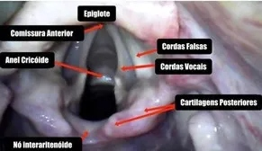
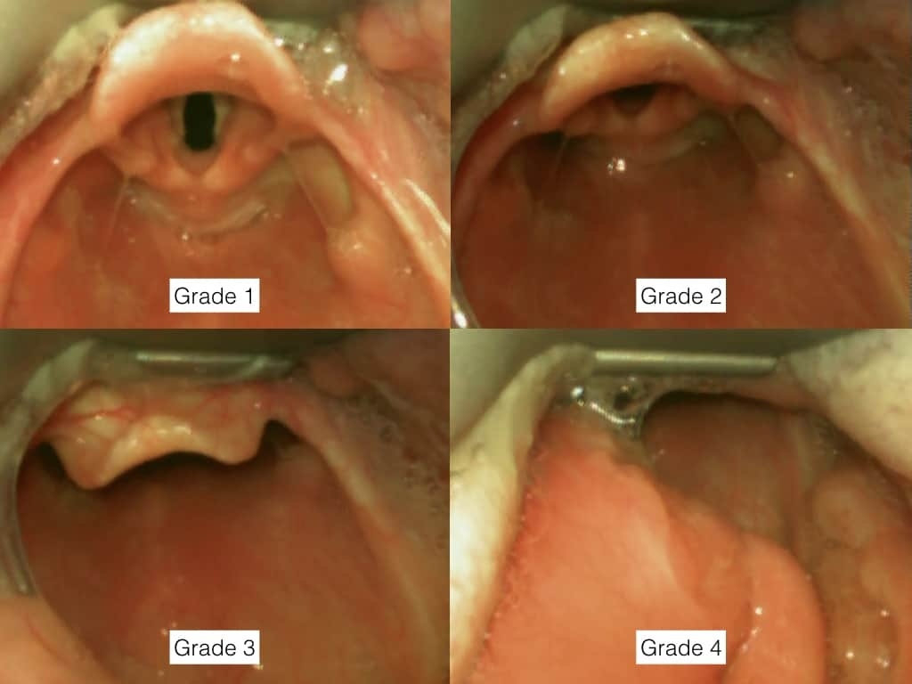
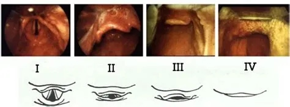
| Classe | Estruturas Visíveis | Risco de IOT Difícil |
|---|---|---|
| I | Palato mole, úvula, pilares, tonsilas — visão completa | Baixo (~5%) |
| II | Palato mole, úvula, pilares — tonsilas não visíveis | Baixo (~7%) |
| III | Palato mole, base da úvula apenas | Intermediário (~28%) |
| IV | Apenas palato duro visível — nenhuma estrutura mole | Alto (~>50%) |
Avaliação visual geral da face e pescoço antes de qualquer manobra:
Mallampati III ou IV = 1 ponto no score LEMON.
Ver card anterior para técnica de avaliação detalhada.
Testar extensão e flexão cervical ativa do paciente consciente:
| Fator | 0 ponto | 1 ponto | 2 pontos |
|---|---|---|---|
| Peso | <90 kg | 90–110 kg | >110 kg |
| Mobilidade cervical | ≥90° | 80–89° | <80° |
| Abertura bucal | ≥5 cm | 4–5 cm | <4 cm |
| Subluxação mandibular | Incisivo inf. anterior ao sup. | No mesmo plano | Não alcança |
| Retrognatia | Normal | Moderada | Severa |
| Letra | Fator | Por quê importa |
|---|---|---|
| M | Mask seal (vedação da máscara) | Barba, trauma facial, anatomia irregular — impede vedação |
| O | Obesity / Obstruction | IMC >30: ↓ CRF, ↑ pressão abdominal; obstrução = ventilação impossível |
| A | Age >55 anos | Perda de tônus muscular faríngeo; VBM menos eficaz |
| N | No teeth (edentulado) | Sem estrutura de apoio para a máscara; cair de bochechas |
| S | Stiff lungs/Snoring | DPOC grave, asma, ronco = resistência aumentada; ↑ pico de pressão |
| Letra | Fator |
|---|---|
| S | Surgery/Scarring — cirurgia ou cicatriz cervical anterior |
| H | Hypomobility — mobilidade cervical reduzida |
| O | Obstruction/Obesity — obstrução de via aérea ou obesidade mórbida |
| R | Radiation — radioterapia cervical prévia (fibrose + microstomia) |
| T | Tumor — tumor de orofaringe, laringe ou pescoço |
| Letra | Fator |
|---|---|
| R | Restricted mouth opening — abertura bucal <3 cm |
| O | Obstruction — massa, tumor ou edema supraglótico |
| D | Disrupted/Distorted airway — anatomia distorcida (trauma, cirurgia, queimadura) |
| S | Stiff neck/Spine — imobilidade cervical severa |
| Classe | Achado | Significado |
|---|---|---|
| I | Incisivos inferiores mordem acima da borda do lábio superior | Subluxação mandibular adequada → IOT fácil |
| II | Incisivos inferiores mordem abaixo da borda do lábio superior | Subluxação parcial → IOT intermediária |
| III | Incisivos inferiores não alcançam o lábio superior | Subluxação ausente → IOT difícil |
| Grupo | Risco | Estratégia |
|---|---|---|
| Obesos (IMC >35) | CRF muito ↓; dessaturam em <90s após apneia | Posição semi-sentada 20–30°; HFNO obrigatório |
| Gestantes (>20 sem) | CRF ↓ 20%; consumo O₂ ↑ 20% | DLE; pré-ox 5 min; HFNO se disponível |
| Pediátrico | Consumo O₂ relativo muito alto | Pré-ox rigorosa; não extubação se SpO₂ <100% |
| Pneumonia/SDRA | Shunt intrapulmonar → pré-ox ineficaz | CPAP não invasivo 10 min pré-IOT; PEEP early |
| Lâmina | Tipo | Uso Principal | Tamanho Adulto |
|---|---|---|---|
| Macintosh | Curva | Adultos — posicionar na valécula (anterior à epiglote) | n.3 (mulheres) / n.4 (homens) |
| Miller | Reta | Pediátrico + adulto com epiglote flácida — elevar diretamente a epiglote | n.1–2 pediátrico |
| McCoy | Articulada | Cormack III — ponta articulável melhora visão sem troca de laringoscópio | n.3 / n.4 |
| Paciente | Diâmetro Interno (DI) | Profundidade (cm) |
|---|---|---|
| Homem adulto | 8,0–9,0 mm | 23–25 cm na comissura labial |
| Mulher adulta | 7,0–8,0 mm | 21–23 cm na comissura labial |
| Criança (fórmula) | DI = (Idade/4) + 4 mm | DI × 3 cm (aprox.) |
| Neonato a termo | 3,5 mm | 9–10 cm |
O próprio anestesiologista manipula a laringe com sua mão direita durante a laringoscopia, até encontrar a posição ótima — depois pede ao assistente para manter exatamente essa posição.
| Componente | RSI Clássico | RSI Modificado |
|---|---|---|
| Pré-oxigenação | 5 min FiO₂ 100% | 5 min FiO₂ 100% + HFNO se disponível |
| Pressão cricóidea | Sim, desde a inconsciência | Opcional / criteriosa |
| VBM após indução | NÃO — nem em emergência | Permitida se P ≤20 cmH₂O e SpO₂ cair |
| BNM | Succinilcolina 1,5 mg/kg | Rocurônio 1,2 mg/kg ou succinilcolina |
| Tentativas de IOT | 1 tentativa — se falhar → CICO | Até 3 tentativas com otimização |
| Contraindicação | Motivo | Alternativa |
|---|---|---|
| Hipercalemia documentada ou esperada | ↑K+ → arritmia/PCR | Rocurônio 1,2 mg/kg |
| Queimadura >48h, esmagamento, denervação | Upregulation de receptores → hipercalemia grave | Rocurônio 1,2 mg/kg |
| Hipertermia maligna (história pessoal ou familiar) | Gatilho para crise | Rocurônio 1,2 mg/kg |
| Miopatias musculares graves | Rabdomiólise / hipercalemia | Rocurônio 1,2 mg/kg |
| Pseudocolinesterase deficiente (familiar ou conhecida) | Bloqueio prolongado (horas) | Rocurônio 0,6–1,2 mg/kg |
| Esquema | Hipnótico | BNM | Prós | Contras | Melhor Para |
|---|---|---|---|---|---|
| A | Cetamina 2 mg/kg | Succinilcolina 1,5 mg/kg | Estabilidade HD, broncodilatação, analgesia, barato | ↑PA/FC (cardiopatas), alucinações (adultos sem BZD) | Trauma, hipotensão, broncoespasmo |
| B | Propofol 1,5 mg/kg | Rocurônio 1,2 mg/kg | CICO reversível (sugammadex), broncodilatação, sedação suave | Hipotensão, custo alto (sugammadex) | Eletivo com via aérea difícil, broncoespasmo |
| C | Etomidato 0,3 mg/kg | Succinilcolina 1,5 mg/kg | Mínima depressão cardiovascular | Supressão adrenal, mioclonias, náusea | Instabilidade hemodinâmica, sépticos (controverso) |
| D | Cetamina 1,5 mg/kg | Rocurônio 1,2 mg/kg | Estabilidade HD + CICO reversível | Custo alto (sugammadex necessário), ↑PA/FC | Melhor custo-benefício quando sugammadex disponível |
| Parâmetro | Valor Inicial | Justificativa |
|---|---|---|
| Volume Corrente (VC) | 6–8 mL/kg PIT | Ventilação protetora — evitar volutrauma |
| Frequência Respiratória | 12–16 irpm | Normocapnia (ETCO₂ 35–45 mmHg) |
| PEEP | 5 cmH₂O | Prevenir atelectasias; ajustar conforme necessidade |
| FiO₂ | 100% inicialmente | Titular para SpO₂ 94–98% — evitar hiperóxia |
| Fluxo inspiratório | 40–60 L/min | Relação I:E 1:2 (evitar auto-PEEP) |
| Complicação | Mecanismo | Prevenção / Conduta |
|---|---|---|
| Trauma dental | Uso do laringoscópio como alavanca sobre incisivos superiores | Técnica correta (tração no eixo); protetor dental em dentes frágeis |
| Laceração labial/gengival | Compressão dos tecidos moles pela lâmina | Introduzir pela comissura D; visualização durante inserção |
| Luxação de aritenóide | IOT forçada com estilete; introdução lateral | Introduzir TOT em linha média sob visão; estilete retirado antes de forçar |
| Dano às pregas vocais | TOT forçado com cuff inflado; laringoscopia repetida | Desinsuflar cuff antes de qualquer reposicionamento; máximo 3 tentativas |
| Aspecto | Detalhe |
|---|---|
| Incidência | 1:3.000 a 1:10.000 — mais frequente em estômago cheio e gestantes |
| Risco | pH <2,5 e volume >25 mL = alta lesão |
| Reconhecimento | Conteúdo gástrico visível na laringoscopia; ↓SpO₂; crepitações |
| Manejo imediato | Aspiração imediata; posição Trendelenburg reverso; IOT se não intubado |
| Manejo VPM | PEEP 5–10; FiO₂ 100%; ventilação protetora; corticoide CONTROVERSO |
| Causa | Características | Manejo |
|---|---|---|
| Laringoespasmo | Estridor agudo, SpO₂ queda rápida, sem estridor em CPAP | Ver card anterior |
| Edema subglótico (pediátrico) | Croup-like, crianças <6 anos, IOT prolongada | Adrenalina nebulizada 0,5 mg/kg; dexametasona 0,5 mg/kg IV |
| Paralisia de cordas vocais | Estridor suave, rouquidão, cirurgia de tireoide prévia | Posição semi-sentada; O₂; laringoscopia diagnóstica |
| Sangramento de via aérea | Sangue visível, queda de Hb | Aspiração + re-intubação urgente + hemostasia |
| Hematoma cervical compressivo | Pós-cirurgia de pescoço, expansão visível | Abrir ferida imediatamente + re-intubação urgente |
VILI (Ventilator-Induced Lung Injury) ocorre mesmo em pulmões sãos durante anestesia geral. Mecanismos: volutrauma (VC excessivo), barotrauma (pressão alta), atelectrauma (colapso-reabertura cíclico), biotrauma (inflamação sistêmica). Anestesia ≥2h já produz atelectasias em 90% dos pacientes.
| Parâmetro | Valor-alvo | Justificativa |
|---|---|---|
| Volume corrente (VC) | 6–8 mL/kg (peso predito) | PROVE Network (2014): ↓CPP com VC baixo |
| PEEP | 5–8 cmH₂O (individualizar) | Previne atelectrauma; ↑ se obeso/Trendelenburg |
| Pressão de platô | <30 cmH₂O | Barotrauma acima deste limite |
| Driving pressure | <13 cmH₂O | Amato et al. NEJM 2015 — melhor preditor de mortalidade |
| FiO₂ | 0.4–0.6 (manter SpO₂ 95–99%) | Hiperoxia → atelectasias de absorção e toxicidade |
| FR | 10–14 ipm | Ajustar para ETCO₂ 35–45 mmHg |
Peso predito (♂): 50 + 0.91 × (altura em cm − 152.4) | (♀): 45.5 + 0.91 × (altura em cm − 152.4)
Manobra de recrutamento: pressão sustentada 30–40 cmH₂O por 30–40 seg → reabre alvéolos colapsados. Indicação: após intubação, após aspiração, após desconexão acidental. Contraindicação: instabilidade hemodinâmica, pneumotórax.
| Situação | Ajuste |
|---|---|
| Obesidade (IMC >35) | PEEP 8–12 cmH₂O, Trendelenburg reverso, manobra recrutamento após intubação |
| Laparoscopia | ↑Pressão intra-abd → ↑Pplatô; ↑FR para compensar hipercapnia; PEEP 8–10 |
| SARA intraoperatória | VC 6 mL/kg, Pplatô <30, PEEP individualizada por P-V; decúbito prono se PaO₂/FiO₂ <150 |
| Pulmão único (OLV) | VC 4–6 mL/kg, Pplatô <25, PEEP 5 no pulmão ventilado, CPAP 2–5 no colapsado |
| Pediatria | VC 6–8 mL/kg, PEEP 4–6, frequência maior (FR 20–30 em crianças) |
Para revisão pré-plantão ou pré-prova · 10 pontos essenciais
5 questões de múltipla escolha · Clique para revelar o gabarito
Alternativas:
A) 30 segundos a 1 minuto
B) 1 a 2 minutos
C) 3 a 5 minutos
D) 8 a 10 minutos
E) Não é necessária em adultos hígidos
Alternativas:
A) Succinilcolina 1,5 mg/kg — é o mais rápido e deve ser sempre usado em RSI
B) Rocúrônio 1,2 mg/kg — contraindicada a succinilcolina por risco de hipercalemia grave
C) Vecurônio 0,1 mg/kg — é o mais seguro em renais crônicos
D) Pancurônio 0,1 mg/kg — sem risco de hipercalemia
E) Não usar bloqueador neuromuscular em RSI
Alternativas:
A) Ausculta pulmonar bilateral e epigástrica
B) Visualização das cordas vocais durante a laringoscopia
C) Capnografia com 6 ondas positivas de ETCO₂
D) Radiografia de tórax com tubo acima da carina
E) SpO₂ mantida acima de 95%
Alternativas:
A) 350–450 mL (5 mL/kg PBW)
B) 450–600 mL (6–8 mL/kg PBW)
C) 600–700 mL (8–10 mL/kg PBW)
D) 700–900 mL (10–12 mL/kg PBW)
E) 1000–1200 mL (peso real)
Alternativas:
A) Insistir com múltiplas tentativas de laringoscopia direta
B) Declarar CICO e realizar cricotireoidostomia imediata
C) Utilizar videolaringioscópio como próxima tentativa
D) Administrar mais relaxante muscular e tentar novamente
E) Acordar o paciente e cancelar o procedimento
Paciente: masculino, 58 anos, 112 kg, IMC 38. Agendar colecistectomia laparoscópica eletiva. Avaliação pré-anestésica: Mallampati IV, abertura bucal 3,5 cm, distância tireomento 5,5 cm, pescoço curto e grosso, LEMON score 4, MOANS 3 fatores positivos. Sem IOT prévia documentada.
Via aérea previsivelmente difícil: LEMON 4, Mallampati IV, distância tireomento <6 cm. MOANS 3 positivos = VBM difícil também. Este paciente é um CICO potencial — plan A falha + plan B (MLA) pode não funcionar.
MLA de segunda geração (ProSeal ou Supreme) como ponte de ventilação. Lembrar: MOANS+ = MLA pode ser difícil também. Usar tamanho 5 (homem >90 kg).
Kit cricotireotomia aberta à beira do campo. Identificar membrana cricotireóidea com US antes de induzir. Cirurgião de suporte em sala.
Paciente: feminino, 34 anos, 68 kg. Apendicite aguda perfurada, dor há 8 h, última refeição há 5 h. Levada à sala de urgência. Via aérea: Mallampati II, abertura bucal adequada, pescoço móvel, LEMON 1. Hemodinamicamente estável: PA 118/72, FC 98 bpm, SpO₂ 97% em AA.
Cenário: R1 de anestesiologia realizando IOT supervisionada. Após indução com propofol + rocurônio, laringoscopia e introdução do TOT, o ETCO₂ marca 0 mmHg. Ausculta bilateral parece apresentar sons de ambos os lados, mas o epigástrio também parece "ventilar". SpO₂ começa a cair: 99%→96%→93%.
Paciente: masculino, 27 anos, 72 kg. Asma moderada persistente, em uso de formoterol/budesonida inalatório. Programado para hérnia inguinal eletiva. Indução com propofol 150 mg + rocurônio 50 mg. IOT confirmada por ETCO₂. Ao iniciar ventilação mecânica: pico de pressão 38 cmH₂O (antes 18), sibilos difusos, SpO₂ caindo para 90%, ETCO₂ subindo para 52 mmHg, capnograma com platô inclinado ("tubarão").
Paciente: feminino, 52 anos. Cirurgia de tireoidectomia total. Durante a anestesia, IOT foi difícil: necessário videolaringoscópio + bougie, Cormack III, 2 tentativas. Via aérea difícil confirmada documentada na ficha. Cirurgia ocorreu sem intercorrências. Ao final, paciente apresenta: TOF 0,7 (bloqueio residual), temperatura 35,8°C, PA 102/64, desperta mas agitada.
Paciente: masculino, 4 anos, 16 kg. Amigdalectomia + adenoidectomia sob anestesia geral com IOT. Extubado no fim da cirurgia com paciente em estágio intermediário (agitado, sem resposta a comandos mas com reflexos). Imediatamente após a extubação: estridor agudo inspiratório, retração supraesternal intensa, SpO₂ cai de 99% para 88% em 30 s, cianose perioral iniciando.
| Categoria | Definição Operacional | Incidência | Mortalidade Associada |
|---|---|---|---|
| IOT Difícil | CL III–IV ou >3 tentativas | 1–4% | Baixa se reconhecida |
| IOT Impossível | Fracasso total da IOT | 0,05–0,35% | Depende de salvamento |
| VBM Difícil | Oxigenação inadequada com máscara | 0,01–2% | Elevada se não revertida |
| CICO | Falha IOT + falha oxigenação | 1:5.000–1:50.000 | Alta sem cricotirotomia imediata |
| Grau | Visão Obtida | Frequência | Conduta |
|---|---|---|---|
| I | Glote e aritenoides completamente visíveis | ~65% | IOT direta simples; sem manobras adjuvantes |
| II | Apenas porção posterior da glote + aritenoides | ~22% | Geralmente IOT possível; considerar BURP/bougie |
| III | Apenas epiglote visível — glote não vista | ~10% | Difícil; usar bougie + BURP + videolaringoscopia |
| IV | Nem epiglote visível — palato mole apenas | ~3% | Acionar protocolo VAD imediatamente |
| Letra | Significado | O Que Avaliar | Pontos |
|---|---|---|---|
| L | Look externally | Aparência geral: trauma facial, barba densa, macroglossia, micrognatia, próteses dentárias volumosas | 0 ou 1 |
| E | Evaluate 3-3-2 | Abertura bucal ≥3 dedos; Mento-hioide ≥3 dedos; Hioide-tireoide ≥2 dedos | 0–3 |
| M | Mallampati | Classe III = 1 ponto; Classe IV = 2 pontos | 0–2 |
| O | Obstruction | Tumor, angioedema, hematoma, corpo estranho, epiglotite, abscesso peritonsilar | 0 ou 2 |
| N | Neck mobility | Extensão cervical <35°; colar; AR; espondilite anquilosante | 0 ou 1 |
Perda de tonicidade muscular orofaríngea, flacidez de tecidos moles, edentulismo parcial frequente. Combinado com obesidade = risco multiplicativo.
Ausência de dentes reduz a vedação da máscara. Estratégia: manter a prótese dentária do paciente no lugar durante a pré-oxigenação e VBM; retirar apenas antes de laringo.
| Letra | Preditor | Mecanismo |
|---|---|---|
| S | Surgery/radiotherapy do pescoço | Fibrose, anatomia distorcida, tecidos enrijecidos |
| H | Hematoma / mass no pescoço | Compressão e deslocamento da hipofaringe |
| O | Obesity (IMC >30) | Tecido adiposo perifaríngeo reduz espaço e vedação |
| R | Restricted mouth opening (<2,5 cm) | Impossibilita inserção da LMA de tamanho adequado |
| T | Tracheal deviation / disruption | Alinhamento incorreto da máscara sobre glote |
| Manobra | Técnica | Indicação |
|---|---|---|
| BURP | Backward-Up-Right Pressure sobre cartilagem tireoide pelo assistente | CL grau III — melhora visão em 50–60% dos casos |
| ELM | External laryngeal manipulation — pelo próprio laringoscopista | CL grau II/III — mais preciso que BURP |
| Bougie | Introduzir bougie angulado sob epiglote → "cliques" táteis dos anéis → rail para TOT | CL grau III — padrão de cuidado |
| Troca de lâmina | Curva → reta (Miller) se epiglote grande, longa ou flácida | CL grau III com epiglote proeminente |
| Videolaringoscópio | C-MAC / GlideScope / McGrath — visão indireta hiperangulatada | CL III–IV, pescoço curto, trauma |
O guideline ASA 2022 (Practice Guidelines for Management of the Difficult Airway) trouxe atualizações importantes em relação ao DAS 2015:
| Aspecto | DAS 2015 | ASA 2022 |
|---|---|---|
| Videolaringoscopia | Alternativa | Ferramenta de 1ª linha em VAD prevista |
| Oxigenação apnéica | Mencionada | Recomendada formalmente (HFNC/THRIVE) |
| Dispositivos supraglóticos | LMA de 2ª geração | Qualquer DSG de 2ª geração adequado |
| Via aérea cirúrgica | Técnica bisturi (padrão) | Manutenção da técnica bisturi; punção como alternativa em mãos treinadas |
| Oxigenação durante VA acordada | Não específico | HFNC explicitamente recomendado |
| Extubação em VAD | Algoritmo próprio | Reforçado: planejar extubação com tanto cuidado quanto a intubação |
| Tipo | Exemplos | Ângulo da Lâmina | Uso Ideal |
|---|---|---|---|
| Hiperangulatado | C-MAC D-Blade, GlideScope, McGrath MAC | 60–70° | CL III–IV, pescoço fixo, trauma — visão excelente mas necessita estilete angulado |
| Ângulo Padrão | C-MAC lâmina padrão 3/4, McGrath Series 5 | 40° | VAD moderada, uso combinado direta/indireta, treinamento |
| Canal de Intubação | AirTraQ, King Vision, Pentax AWS | Variável | Operador menos experiente em VL; guia o TOT |
| Dispositivo | Geração | Canal Gástrico | Diâmetro IOT Via LMA | Destaque |
|---|---|---|---|---|
| LMA Clássica | 1ª | Não | Não | Histórica; sem canal gástrico — NÃO preferida em VAD |
| ProSeal | 2ª | Sim | TOT 6,5 mm via FOI | Canal gástrico duplo; alta vedação (até 30 cmH₂O) |
| iGel | 2ª | Sim | TOT 6,5 mm via FOI | Sem cuff inflável; fácil inserção; vedação 30 cmH₂O |
| Supreme | 2ª | Sim | TOT 6,5 mm | Curvatura pré-formada; canal gástrico rígido |
| AuraGain | 2ª | Sim | TOT até 8,0 mm diretamente | Canal de intubação dedicado — ideal para IOT via LMA sem FOI |
| Dispositivo | Velocidade de Inserção | Oxigenação | Permite IOT | Risco Aspiração | Indicação Principal |
|---|---|---|---|---|---|
| LMA 2ª Gen. | Rápida | Boa | Via FOI/Aintree | Baixo | Plano B DAS — resgate imediato |
| VL (C-MAC/GS) | Rápida | Depende IOT | Sim (direta) | Depende IOT | Plano A — melhora visualização |
| FOI | Moderada | Depende IOT | Sim (ouro) | Baixo | VAD acordado; cervical instável |
| Combitubo | Rápida | Boa | Limitada | Baixo | Resgate pré-hospitalar; 1 lúmen traqueia |
| Cricotirotomia | Lenta* | Definitiva | Sim (CTT) | Baixo | CICO — salva-vidas definitivo |
*Lenta apenas para operador não treinado. Com treinamento adequado: 30–45 s (técnica cirúrgica).
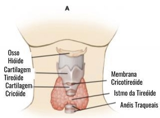
| Formulação | Concentração | Uso | Dose |
|---|---|---|---|
| Nebulização | 4% (aerossol) | Anestesia da orofaringe e supraglote; paciente respira por 10–15 min | 2–4 mg/kg |
| Spray | 10% (10 mg/dose) | Aplicação direta em mucosa oral, base da língua, orofaringe | Máx 3–4 mg/kg total |
| Gel 2% | 2% | Lubrificação + anestesia do TOT nasotraqueal; nasofaringe | Conforme volume aplicado |
| Instilação transtraqueal | 4% (2 mL = 80 mg) | Anestesia subglótica; paciente tosse para distribuir | 80 mg (1–2 mL 4%) |
Anestesia da supraglote (epiglote, pregas ariepiglóticas, rima glótica superior). Acesso: palpação do corno maior do osso hioide → agulha 25G → 2 mL lidocaína 1–2% bilateralmente.
Anestesia subglótica. Puncionar membrana CTR com agulha 22G, confirmar posição com aspiração de ar, injetar 2 mL lidocaína 4% rapidamente. O paciente tossirá (distribui o AL). Esperar 60–90 s antes de iniciar FOI.
| Agente | Dose | Vantagens | Riscos |
|---|---|---|---|
| Dexmedetomidina | Ataque: 0,5–1 mcg/kg em 10 min Manutenção: 0,3–0,7 mcg/kg/h |
Padrão-ouro. Sedação preservando respiração espontânea; ansiolítico; cooperativo; analgésico leve | Bradicardia, hipotensão; início lento (~10 min) |
| Remifentanil | 0,05–0,1 mcg/kg/min IC | Supressão de tosse excelente; titulável; meia-vida ultra-curta | Risco de apneia! — monitorização rigorosa; dose mínima eficaz |
| Midazolam + Fentanil | Mida 1–2 mg + Fenta 25–50 mcg IV titulado | Disponível em todos os serviços; ansiolítico; familiar ao anestesiologista | Menos previsível; risco de amnésia excessiva ou sedação profunda acidental |
| Ketamina subanestésica | 0,1–0,3 mg/kg IV (dose única ou IC 0,1–0,2 mg/kg/h) | Mantém tônus das vias aéreas; broncodilatador; analgésico; dissociativo leve | Hipersecreção (+ glicopirrolato 0,2 mg); nistagmo; sensação dissociativa incômoda |
VNI aplica pressão positiva via interface (máscara facial total, oronasal ou capacete) sem via aérea artificial. Modalidades: CPAP (pressão contínua — apenas PEEP, sem suporte ventilatório) e BiPAP (IPAP + EPAP — suporte inspiratório + PEEP).
| Modalidade | Parâmetros | Indicação principal |
|---|---|---|
| CPAP | 5–10 cmH₂O | Hipoxemia pós-op, SAOS, atelectasia |
| BiPAP | IPAP 10–18 / EPAP 4–8 cmH₂O | Hipercapnia, DPOC descompensado, edema pulmonar |
| Alto fluxo nasal (HFNC) | 30–60 L/min, FiO₂ titulada | Hipoxemia pós-extubação, pré-oxigenação em VAD |
| Momento | Indicação | Benefício comprovado |
|---|---|---|
| Pré-operatório | DPOC, IC, SAOS, obesidade | ↓atelectasias pós-op, ↑reserva funcional antes da indução |
| Pré-oxigenação | Obesidade (IMC>35), gestante, baixa reserva | CPAP 5–10 + O₂ 100% → ↑tempo apneia segura em 1–2 min |
| Pós-extubação SRPA | SpO₂<92% em O₂ suplementar, atelectasia, hipercapnia | ↓reintubação vs. O₂ convencional (Cochrane 2015) |
| Pós-operatório cirurgia abdominal maior | Profilática nas primeiras 1–2h pós-extubação | CPAP profilático ↓CPP em 28% (Squadrone JAMA 2005) |
Para revisão pré-plantão ou pré-prova · 10 pontos essenciais
5 questões de múltipla escolha · Clique para revelar o gabarito
Alternativas:
A) Nova tentativa de laringoscopia com videolaringioscópio
B) Inserir outro dispositivo supraglótico de 2ª geração
C) Cricotireoidostomia cirúrgica imediata
D) Ventilação jet transtraqueal percutanânea
E) Acordar o paciente com sugamadex
Alternativas:
A) 1 tentativa apenas
B) 2 tentativas com o mesmo laringioscópio
C) 3 tentativas com o mesmo dispositivo, máximo 4 no total
D) 5 tentativas independentemente do dispositivo
E) Sem limite — tentar até intubar ou o paciente descompensar
Alternativas:
A) Indução inalatória sévoflurano com laringoscopia direta
B) RSI com succinilcolina seguida de videolaringioscópio
C) Fibroscopia acordado com sedoação (dexmedetomidina) e anestesia tópica
D) Indução IV convencional e preparar cricotireoidostomia na mesa
E) Anestesia regional total sem intubação
Alternativas:
A) O supraglótico resolve o CICV e a cricotireoidostomia não será necessária
B) Pode ser tentado como ponte para ganhar tempo, mas não substitui a cricotireoidostomia se falhar
C) O supraglótico é contraindicado em CICV por risco de dispersão de ar
D) Deve-se realizar cricotireoidostomia primeiro e depois tentar supraglótico
E) Supraglótico não tem papel no algoritmo de VAD
Alternativas:
A) Elimina completamente a necessidade de abertura bucal
B) Permite intubação sem qualquer sedoação ou anestesia
C) Melhora a visualização glótica em Cormack III–IV sem necessidade de alinhamento de eixos
D) Substitui completamente a fibroscopia em todos os cenários de VAD
E) Reduz o número de tentativas para sempre uma única
Paciente: feminino, 48 anos, 118 kg, IMC 42 kg/m². Histórico de SAOS (usa CPAP domiciliar), ronco intenso, Mallampati IV, abertura bucal 2,5 dedos, distância tireomento 5,5 cm, extensão cervical limitada por pescoço curto e adiposo. Vai para colecistectomia laparoscópica eletiva. SpO₂ basal 95% em ar ambiente.
Situação: paciente masculino, 62 anos, 95 kg, Mallampati III, LEMON 4. Induzido com propofol + rocurônio. Laringoscopia direta: CL grau III, 1ª tentativa falha; 2ª tentativa com BURP + bougie, CL II mas TOT não passa; 3ª tentativa com VL: glote visível mas TOT prende na supraglote. SpO₂ cai de 99% para 91% após 3ª tentativa. VBM difícil — leak grande, mal expandindo.
Situação: feminino, 35 anos, 70 kg. Cirurgia de urgência por abscessos cervical profundo. Edema difuso do pescoço, trismo (abertura bocal 1,5 dedos), Mallampati IV. Induzida em RSI. Após 3 tentativas de IOT (CL IV em todas): VL falhou (sangue e secreção na câmera). LMA não veda adequadamente (seio piriforme distorcido). VBM ineficaz. SpO₂ 78% e caindo. Cianose central.
Paciente: masculino, 58 anos, 72 kg. Histórico de carcinoma de laringe tratado com radioterapia há 3 anos. Apresenta fibrose cervical extensa, abertura bucal 2 cm (trismo por fibrose), extensão cervical quase nula, Mallampati IV, distância tireomento 4 cm. Necessita de laringectomia parcial.
Paciente: masculino, 65 anos. Tumor de laringe com lesão glótica obstrutiva (TC: redução do lúmen laríngeo em ~70%). Estridor em repouso moderado, SpO₂ 93% em ar ambiente, voz "borbulhante", Mallampati II (difícil avaliar por edema), extensão cervical normal. Proposta de microcirurgia endoscópica laríngea com anestesia geral.
Situação: feminino, 54 anos. Tireoidectomia total concluída. 45 minutos após extubação na SRPA: enfermeira chama porque paciente está com estridor, agitada, SpO₂ caiu de 98% para 87%, com abaulamento progressivo da ferida cervical anterior.
O resultado é um bloqueio reversível de três tipos de fibras nervosas, em sequência:
| Fibra Bloqueada | Efeito Clínico | Velocidade |
|---|---|---|
| Simpática — vasos, glândulas | Vasodilatação → ↓ PA, bradicardia | Mais rápido |
| Sensitiva — dor, temperatura | Analgesia / anestesia | Médio |
| Motora — músculos | Fraqueza / paralisia de MMII | Mais lento |
| Estrutura | Localização | Relevância Clínica |
|---|---|---|
| Cone medular | Termina em L1–L2 no adulto | Puncionar SEMPRE em L3–L4 ou L4–L5 para evitar lesão |
| Linha de Tuffier | Une as cristas ilíacas → passa em ~L4 | Principal referência para identificar nível de punção |
| Cauda equina | Abaixo de L2 | Raízes nervosas "flutuam" no LCR — risco de lesão muito menor |
| Espaço epidural lombar | 2–5 mm de espessura | Atravessado rapidamente; menor resistência que o ligamento amarelo |
O anestésico local deposita-se no LCR e difunde para as raízes nervosas à medida que ascende. O bloqueio se instala em gradiente de altura — simpático primeiro, sensitivo depois, motor por último:
| Tipo | Nível Sensitivo | Indicações | Risco Hemodinâmico |
|---|---|---|---|
| RAQUI ALTA | T4–T6 | Cesárea, cirurgias abdominais infraumbilicais extensas | MAIOR — hipotensão + bradicardia |
| RAQUI MÉDIA | T8–T10 | Hérnia inguinal, ginecológicas simples, RTU prostática | MODERADO |
| RAQUI BAIXA | T12–L1 | Cirurgias distais de MMII, períneo superficial | MENOR — impacto mínimo |
A baricidade é a densidade do anestésico em relação ao LCR (densidade do LCR ≈ 1.003–1.009 g/mL). Ela determina como a droga se dispersa pelo espaço subaracnoide conforme a posição:
| Fármaco | Conc. | Dose Típica | Volume | Duração | Observação |
|---|---|---|---|---|---|
| Bupivacaína 0,5% hiperbárica | 5 mg/mL | 7,5–15 mg | 1,5–3,0 mL | 90–180 min | Padrão-ouro Brasil |
| Levobupivacaína 0,5% | 5 mg/mL | 7,5–12,5 mg | 1,5–2,5 mL | 90–150 min | Menos cardiotóxica |
| Ropivacaína 0,5–0,75% | 5–7,5 mg/mL | 15–20 mg | 3–4 mL | 60–120 min | Recuperação motora rápida |
| Lidocaína 2–5% | 20–50 mg/mL | 50–75 mg | 2,5–3,7 mL | 40–90 min | Risco TNS + cauda equina |
Os adjuvantes atuam em receptores espinhais específicos, modulando a nocicepção sem aumentar significativamente o bloqueio motor. Permitem reduzir a dose de anestésico local e prolongar a analgesia pós-operatória.
| Dose habitual | 10–25 mcg (mais comum: 15–20 mcg) |
| Apresentação | Ampola 50 mcg/mL (= 0,05 mg/mL) |
| Efeitos adversos | Prurido (30–60%), náusea, sedação leve |
| Vantagem | Melhora qualidade do bloqueio + analgesia intraoperatória |
| Farmacocinética | Hidrofílica → permanece no LCR → analgesia prolongada 18–24 h |
| Dose habitual | 50–150 mcg (comum: 80–100 mcg) |
| Apresentações | 1 mg/mL ou 10 mg/mL (diluir esta última!) |
| Indicação principal | Cesárea, grandes cirurgias ortopédicas |
| Droga | Dose IT | Efeito Principal | Cuidado |
|---|---|---|---|
| Sufentanil | 5–10 mcg | Analgesia 4–6 h (mais lipofílico que fentanil) | Prurido, sedação |
| Clonidina | 15–45 mcg | Prolonga bloqueio sensitivo e motor; reduz opioide | Hipotensão, bradicardia |
| Dexmedetomidina | 3–10 mcg | Similar à clonidina, uso crescente | Bradicardia |
| Adrenalina | 0,1–0,2 mg | Vasoconstrição local, prolonga AL | Uso restrito |
mL = Dose desejada (mg) ÷ Concentração (mg/mL)
| Dose (mg) | Cálculo | Volume |
|---|---|---|
| 7,5 mg | 7,5 ÷ 5 | 1,5 mL |
| 8,0 mg | 8,0 ÷ 5 | 1,6 mL |
| 10,0 mg | 10,0 ÷ 5 | 2,0 mL |
| 12,0 mg | 12,0 ÷ 5 | 2,4 mL |
| 12,5 mg | 12,5 ÷ 5 | 2,5 mL |
| 15,0 mg | 15,0 ÷ 5 | 3,0 mL |
| Receita | Concentração Final | Volume Total |
|---|---|---|
| 2 mL bupi 0,5% + 3 mL H₂O | 0,2% (2 mg/mL) | 5 mL |
| 1,5 mL bupi + 3,5 mL H₂O | 0,15% (1,5 mg/mL) | 5 mL |
| 1 mL bupi + 4 mL H₂O | 0,1% (1 mg/mL) | 5 mL |
| 1,5 mL lido 2% + 3,5 mL H₂O | 0,6% (6 mg/mL) | 5 mL |
| Especialidade | Cirurgias | Nível Alvo |
|---|---|---|
| Obstetrícia | Cesárea (mais frequente no SUS) | T4–T6 |
| Ortopedia | Quadril, fêmur, joelho, tíbia, tornozelo, pé | T8–T12 |
| Urologia | RTU próstata, cistoscopia, orquiectomia | T10 |
| Cirurgia Geral | Hérnia inguinal, hemorroidectomia, procedimentos anais | T8–T10 |
| Ginecologia | Histerectomia vaginal, conização, curetagem | T10 |
| Coluna | Laminectomia, discectomia lombar (puncionar 1 nível acima) | T6–T8 |
| Droga | Última dose → Punção | Punção → Próxima dose |
|---|---|---|
| HNF SC profilática | 4–6 h | 1 h |
| HNF SC terapêutica | 12 h | 1 h |
| HNF IV (infusão) | 4–6 h + TTPA normal | 1 h |
| HBPM profilática | 12 h | 4 h |
| HBPM terapêutica | 24 h | 4 h |
| Rivaroxabana | 48–72 h | 6 h |
| Apixabana | 48–72 h | 6 h |
| Dabigatrana | 72–96 h | 6 h |
| Varfarina | INR < 1,5 | INR no alvo terapêutico |
| AAS isolado | NÃO SUSPENDER | — |
| Clopidogrel | 7 dias | 6 h |
| Prasugrel | 7–10 dias | 6 h |
| Ticagrelor | 5 dias | 6 h |
| Tipo | Calibre | Ponta | CPPD |
|---|---|---|---|
| Quincke | 27G–29G | Cortante | ~1–3% |
| Whitacre | 25G–27G | Lápis (pencil point) | <1% ← preferida |
| Dermátomo | Referência Anatômica | Indicação Cirúrgica |
|---|---|---|
| T4 | Linha dos mamilos | Cesárea |
| T6 | Processo xifoide | Cirurgia abdominal baixa |
| T8 | Margem costal inferior | Hérnia inguinal alta |
| T10 | Umbigo | Urologia, hérnia inguinal, MMII |
| T12 | Virilha / prega inguinal | Pé, tornozelo, períneo |
| L1 | Região inguinal baixa | Genitália externa |
| S2–S4 | Períneo | Hemorroidectomia, cirurgias anais |
| Complicação | Reconhecimento | Conduta Imediata |
|---|---|---|
| Hipotensão | PA ↓ > 20–30% | Trendelenburg + cristal + fenilefrina ou efedrina |
| Bradicardia grave | FC < 40 | Atropina 0,5–1 mg IV |
| Raqui alta/total | Fraqueza MMSS, apneia | O₂ + IOT + vasopressor + suporte CV |
| CPPD | Cefaleia postural | Hidratação + cafeína → blood patch se refratária |
| Hematoma neuraxial | Dor lombar + déficit neurológico | RM urgência + descompressão < 8 h |
| LAST | Convulsão + arritmia | O₂ + benzodiazepínico + Intralipid 20% |
| Prurido (opioides IT) | Coceira difusa / face | Ondansetrona 4–8 mg IV |
| Depress. resp. tardia | FR baixa / SpO₂ ↓ após 8–24 h | Naloxona 100–400 mcg IV + O₂ + monitorização |
| Sistema | Manifestação |
|---|---|
| SNC | Gosto metálico, tinido, confusão, convulsões |
| CV | Arritmias, bloqueio AV, colapso cardiovascular |
Dor lombar irradiada para nádegas/MMII após raqui com lidocaína. Início 12–24 h. Regressão espontânea em 1–4 dias. Principal razão pelo qual o uso de lidocaína intratecal foi reduzido no mundo.
| Ajuste de dose | Reduzir 20–30% em relação ao adulto jovem |
| Técnica | Paramediana pode ajudar em calcificações extensas |
| Fratura colo de fêmur | Bupi 8–10 mg + Fentanil 10–15 mcg |
| Monitorização | Intensiva; vasopressor já preparado antes do bloqueio |
| Preferência de AL | Levobupivacaína se disponível (menos cardiotóxica) |
| Dose | NÃO reduzir pelo peso — risco de falha do bloqueio |
| Nível alvo | T4–T6 (linha dos mamilos) |
| Posicionamento | Deslocamento uterino para esquerda: evita compressão aortocava |
| Vasopressor | Fenilefrina é 1ª escolha — preserva pH fetal |
| Protocolo típico | Bupi 10–12 mg + Fentanil 15–20 mcg + Morfina 80–100 mcg |
| Landmarks | Palpação difícil → ultrassom pré-punção fortemente recomendado |
| Posição | Sentada geralmente mais fácil (landmarks mais palpáveis) |
| Agulha | Comprimentos maiores: 120–150 mm |
| Dose | NÃO aumentar por peso — volume de LCR é menor, dispersão maior |
| Via aérea | Avaliar e preparar rigorosamente — maior risco na conversão para AG |
| Ajuste de dose | Reduzir 20–30% — menos hipotensão |
| AL preferido | Levobupivacaína (menos cardiotóxica) |
| Monitorização | Linha arterial em casos graves |
| Vasopressor | Pré-preparado e disponível imediatamente antes do bloqueio |
| Sequência | Bloqueio em DL → confirmar nível T6–T8 → posicionar em prona |
| Coxins | Evitar compressão abdominal (interfere no campo cirúrgico) |
| Comunicação | Constante com equipe cirúrgica |
| Protocolo | Bupi 10–15 mg + Fentanil 15–20 mcg + Morfina 100–150 mcg |
Para revisão pré-plantão ou pré-prova · 10 pontos essenciais
5 questões de múltipla escolha · Clique para revelar o gabarito
Alternativas:
A) T10 — nível umbilical
B) T8 — abaixo do apêndice xifóide
C) T6 — apêndice xifóide
D) T4 — linha mamilar bilateral
E) T2 — claviculares
Alternativas:
A) Efedrina 10 mg IV em bolus — 1ª linha por ação mista (α+β)
B) Fenilefrina em infusão contínua profilática 25–50 mcg/min
C) Adrenalina 0,5 mg IV em emergência
D) Noradrenalina 0,1 mcg/kg/min em infusão
E) Atropina 0,5 mg IV + hidratação rápida com cristaloide
Alternativas:
A) Quincke 20G (bisel cortante)
B) Quincke 22G (bisel cortante)
C) Whitacre 25G (ponta de lápis) ou Sprotte 25G
D) Tuohy 17G (ponta de Hustead)
E) Calibre não influencia — apenas a técnica importa
Alternativas:
A) 6 horas
B) 12 horas
C) 18 horas
D) 24 horas
E) 48 horas
Alternativas:
A) Fentanil 25 mcg intratecal
B) Clonidina 75 mcg intratecal
C) Morfina 100–200 mcg intratecal
D) Dexametasona 4 mg intratecal
E) Sufentanil 10 mcg intratecal
| Paciente | Homem, 35 anos, ASA I, 75 kg |
| Cirurgia | Herniorrafia inguinal direita, ~60–90 min |
| Nível alvo | T8–T10 |
| Paciente | Mulher, 28 anos, ASA II, 90 kg, gestação a termo |
| Cirurgia | Cesárea eletiva, ~60 min |
| Nível alvo | T4–T6 |
| Paciente | Homem, 78 anos, ASA III, ICC leve compensada |
| Cirurgia | Artroplastia total de joelho, 90–120 min |
| Objetivo | Minimizar hipotensão |
| Paciente | Homem, 45 anos, ASA I, cirurgia ~45 min, deseja alta no mesmo dia |
| Paciente | Mulher, 40 anos, ASA I, ~60 min, posição jack-knife (prona com glúteos elevados) |
| Nível alvo | S2–S4 (bloqueio saddle/perianal) |
| Paciente | Homem, 30 anos, ASA I, ~60 min, exige recuperação motora ágil (esportista) |
| Paciente | Mulher, 85 anos, ASA III–IV, HAS + ICC + FA, urgência |
| Cirurgia | Fixação de colo de fêmur, 60–90 min |
| Paciente | Homem, 70 anos, ASA II, 60–90 min |
| Nível alvo | T10 |
| Paciente | Homem, 55 anos, ASA II, hérnia L4–L5, ~90 min |
| Posição cirúrgica | Prona |
| Ponto de punção | L2–L3 (1 nível acima da cirurgia) |
| Nível alvo | T6–T8 |
O espaço peridural (epidural) é um espaço real que circunda o saco dural, preenchido por gordura, vasos venosos e raízes nervosas. Localizado entre o ligamento amarelo (posterior) e a dura-máter.
| Parâmetro | Raquianestesia | Peridural |
|---|---|---|
| Local de ação | Espaço subaracnóideo (LCR) | Espaço peridural |
| Onset | 2–5 min (rápido) | 15–20 min (lento) |
| Duração | Limitada ao fármaco | Ilimitada (cateter) |
| Volume | 2–4 mL | 10–30 mL (por segmento) |
| Dose para T4 | 10–12 mg bupiv. | 15–20 mL lido 2% |
| Cateter | Geralmente não | Sempre (agulha Tuohy) |
Técnica de identificação do espaço peridural:
| Fármaco | Concentração | Volume/segmento | Onset | Uso |
|---|---|---|---|---|
| Lidocaína 2% | 20 mg/mL | 1–2 mL | 10–15 min | Cirurgia, extensão urgente |
| Bupivacaína 0.5% | 5 mg/mL | 1.5–2 mL | 20–25 min | Cirurgia eletiva |
| Ropivacaína 0.75% | 7.5 mg/mL | 1.5–2 mL | 15–20 min | Cirurgia — menos cardiotóxica |
| Bupivacaína 0.125% | 1.25 mg/mL | 8–12 mL/h infusão | — | Analgesia de parto |
| Fentanil (peridural) | 2–5 mcg/mL | Adjuvante | 10 min | Melhora analgesia, ↓dose AL |
| Morfina (peridural) | 2–4 mg | Volume 10 mL | Lento (30–60 min) | Analgesia pós-op 12–24h |
Padrão ouro de analgesia para toracotomia e grandes cirurgias abdominais. Níveis T4-T8 para cirurgia torácica; T8-T12 para abdominal superior.
Hematoma peridural: complicação rara mas devastadora (1:150.000). Síndrome cauda equina = urgência neurocirúrgica — descompressão em <8h. Respeitar intervalos ASRA para anticoagulantes.
Vantagem: onset rápido da raqui + flexibilidade e duração ilimitada do cateter peridural.
Técnica needle-through-needle: agulha Tuohy avança até peridural → agulha espinhal longa (120 mm) passa pelo lúmen da Tuohy até espaço subaracnóideo → injeção da raqui → retirada da espinhal → introdução do cateter peridural pelo lúmen da Tuohy.
| Indicação | Vantagem |
|---|---|
| Analgesia de parto | Onset rápido, controle total da duração |
| Cesárea urgente c/ peridural in situ | Extensão rápida pelo cateter |
| Cirurgias longas (≥4h) | Anestesia completa sem limite de tempo |
| Analgesia pós-op prolongada | Morfina peridural + AL em baixa dose |
| Dermátomo | Referência | Cirurgia |
|---|---|---|
| T4 | Linha dos mamilos | Cesárea |
| T6 | Processo xifoide | Abdome baixo |
| T8 | Margem costal inferior | Hérnia inguinal |
| T10 | Umbigo | Urologia · MMII |
| T12 | Virilha / prega inguinal | Pé, tornozelo |
| L1 | Inguinal baixo | Genitália externa |
| S2–S4 | Períneo | Hemorroidectomia, anal |
Punção: dor leve ("picada"), geralmente menor que acesso venoso. O botão anestésico com lidocaína reduz significativamente o desconforto. Durante a cirurgia: o paciente não sente dor — sente pressão e tração, o que é absolutamente normal e deve ser informado antes.
Bupivacaína 0,5% hiperbárica: sensitivo 2–4 h, motor 3–6 h. Com morfina IT, a analgesia se estende por 18–24 h. Informar o paciente para ajustar expectativas.
| Escala | Faixa | Interpretação Clínica | Quando Intervir |
|---|---|---|---|
| EVA / NRS | 0–10 | 0=sem dor · 1–3=leve · 4–6=moderada · 7–10=intensa | NRS ≥4 em repouso; ≥7 sempre |
| FLACC | 0–10 | 0–3=desconforto leve · 4–6=dor moderada · 7–10=intensa | Score ≥4 |
| BPS | 3–12 | 3=sem dor · 6=dor moderada · >6=dor intensa | Score >6 |
| CPOT | 0–8 | Alternativa ao BPS em UTI — inclui tensão muscular | Score >2 |
| Desfecho | Redução com ERAS | Especialidade |
|---|---|---|
| Tempo de internação (LOS) | ↓ 30–50% | Coloretal, ginecológica, urológica |
| Complicações pós-op maiores | ↓ 20–30% | Múltiplas especialidades |
| Retorno da função intestinal | ↓ 1–2 dias | Coloretal |
| Readmissão hospitalar | Sem aumento (equivalente ou menor) | Coloretal |
| Custos hospitalares | ↓ 15–25% | Múltiplas |
| Mortalidade perioperatória | Trend de redução (algumas meta-análises) | Alto risco cirúrgico |
| Característica | Gabapentina | Pregabalina |
|---|---|---|
| Biodisponibilidade oral | 33–66% | 90% (linear) |
| Absorção | Satúrável (não linear) | Linear — mais previsível |
| Potência relativa | 1× | ~2–4× maior |
| Início de ação | 60–90 min | 60 min |
| Meia-vida | 5–9h | 6h |
| Fármaco | Mecanismo Principal | Dose IV / VO | Vantagem Chave | CI Principal | Pérola Clínica |
|---|---|---|---|---|---|
| Paracetamol | COX central + endocannabinoide | 1g IV 6/6h | Sem risco GI ou renal; base universal | IC hepática grave (Child C) | VO quase equivalente a IV — usar VO para reduzir custo |
| Cetorolaco | Inibição COX-1+2 | 15–30mg IV 6/6h | Potência ~morfina 10mg; único AINE IV não-seletivo | IR, úlcera, coagulopatia, gest. | Máximo 5 dias — risco de gastrite e nefrotoxicidade após |
| Parecoxibe | Inibição seletiva COX-2 | 40mg IV 12/12h | Sem efeito plaquetário; uso em coagulopatia leve | Pós-CABG, IR grave, gest. | Mais seguro GI — preferir em anticoagulado e alto risco GI |
| Dipirona | COX + Na+ + endocann. | 1–2g IV 6/6h | Antiespasmódico; seguro renal/hepático moderado | Alergia conhecida | Infundir lento — hipotensão se em bolus rápido |
| Pregabalina | Bloqueio subun. α₂δ Ca²⁺ | 75–150mg VO pré-op | Reduz dor neuropática e cronificação | IR sem ajuste; sedação ++ idoso | Usar 1–2h pré-op para efeito máximo na analgesia preventiva |
| Lidocaína IV | Na+ + anti-inflamatório | 1,5mg/kg/h infusão | Reduz íleo; anti-PONV; opioid-sparing 25–40% | BAV alto grau, alergia amida | Monitorar ECG — STEMI mascarado em dose alta |
| Cetamina | Antagonista NMDA | 0,1–0,5mg/kg bolus | Bloqueia sensibilização central; obrigatória em opioid-tolerant | Psicose ativa, HIC | Combinar dexmedetomidina para evitar psicomiméticos |
| Dexametasona | Anti-inflamatório + antiemético | 8mg IV dose única | Prolonga bloqueios 2×; antiemético potente | DM descompensado (monitorar) | Dose única = hiperglicemia mínima + máximo benefício |
| Efeito Adverso | Mecanismo | Tratamento/Prevenção |
|---|---|---|
| Depressão respiratória | Agonismo μ nos centros respiratórios (núcleo pré-Bötzinger) | Naloxona 40mcg IV em bolus; repetir a cada 2–3min (titulada!) |
| PONV (30–40%) | Ação na zona gatilho quimiorreceptora + íleo | Ondansetrona + dexametasona profiláticos; reduzir dose |
| Prurido (40% IV; 80% IT) | Desgranulação mastocitária + ação central (μ) | Naloxona baixa dose (20mcg IV), nalbufina, ondansetrona |
| Íleo paralítico | Receptores μ periféricos → hipomotilidade GI | Mobilização precoce; alvimopan; minimizar dose |
| Retenção urinária | Relaxamento detrusor + contração esfíncter | SVD temporária; baixa dose naloxona |
| Sedação | Agonismo μ SNC + histamina (morfina) | Titular dose mínima eficaz; monitorar RASS |
| Parâmetro | Valor Padrão | Observação |
|---|---|---|
| Dose de demanda | 1–2mg | Reduzir para 0,5–1mg em idoso/fragilizado |
| Lockout (intervalo) | 8–12 min | Tempo mínimo entre doses — segurança |
| Infusão basal | 0 mg/h (opioid-naïve) | Usar basal apenas em opioid-tolerant: 1–2mg/h |
| Dose máxima/hora | 10mg/h | Limite de segurança programável |
| Dose de carga (loading) | 2–5mg IV lento | Na ativação da PCA em SRPA |
| Opioide | Via | Dose Equianalgésica | Fator de Conversão |
|---|---|---|---|
| Morfina | IV/IM | 10mg | 1× (referência) |
| Morfina | VO | 30mg | 0,33× (first-pass) |
| Tramadol | IV/VO | 100–120mg | 0,1× (fraco) |
| Oxicodona | VO | 20mg | 0,5× morfina VO |
| Codeína | VO | 200mg | 0,05× |
| Hidromorfona | IV | 1,5–2mg | 5–7× |
| Buprenorfina | SL | 0,4mg | 25–50× |
| Fentanil | IV | 0,1mg (100mcg) | 100× |
| Abordagem | Localização | Cobertura |
|---|---|---|
| QL1 (lateral) | Face lateral do QL | T10–L1 (similar TAP) |
| QL2 (posterior) | Entre QL e eretor espinha | T7–L1 (melhor cobertura) |
| QL3 (transmuscular) | Entre QL e psoas, anterior à fascia | T7–L1 + componente visceral |
| Parâmetro | PVB | Epidural Torácica |
|---|---|---|
| Lateralidade | Unilateral | Bilateral |
| Hipotensão | Rara (simpático unilateral) | Comum (simpático bilateral) |
| Retenção urinária | Menos frequente | Frequente (10–30%) |
| Pneumotórax | 1–2% | Raro |
| Hematoma espinhal | Extremamente raro | 1:150.000 |
| Qualidade analgésica | Equivalente ao epidural | Gold standard bilateral |
| Uso com anticoagulante | Mais seguro | Contraindicado com HBPM |
| Intervenção | Mecanismo de Prevenção | Nível de Evidência |
|---|---|---|
| Pregabalina/gabapentina pré/pós-op | Reduz sensibilização central, bloqueia subunidade α₂δ | Moderada-forte (múltiplos RCTs) |
| Cetamina perioperatória | Bloqueia NMDA → impede potenciação de longo prazo | Moderada (meta-análises) |
| Bloqueio regional precoce | Impede aferência nociceptiva antes da sensitização | Forte para toracotomia (PVB) |
| AINE perioperatório | Reduz inflamação → menos estímulo nociceptivo | Moderada |
| Dexametasona | Anti-inflamatório potente → reduz edema neural | Fraca-moderada |
| Duloxetina perioperatória | Potencializa inibição descendente serotonérgica/NA | Emergente (promissora) |
| Fármaco | Ajuste em IR Moderada (TFG 30–60) | Ajuste em IR Grave (<30) |
|---|---|---|
| Morfina | Reduzir dose 25–50%, aumentar intervalo | Evitar — preferir alternativa |
| Tramadol | Reduzir frequência (12/12h) | CI — metabólitos acumulam |
| Paracetamol | Sem ajuste necessário | Intervalo mínimo 8h (evitar >3g/dia) |
| AINEs | Evitar (risco de piora da TFG) | CI absoluta em oligúria/diálise |
| Gabapentina | Reduzir dose 50% | 100–300mg dose única após sessão de diálise |
| Cetamina | Sem ajuste necessário | Sem ajuste (metabolismo hepático) |
| Hidromorfona | Cautela — monitorar | Reduzir 50%, preferível à morfina |
DCPC: dor persistente >3 meses após cirurgia, no campo operatório, após exclusão de outras causas. Incidência: toracotomia 30–50%, mastectomia 25–60%, amputação 50–80%, cirurgia cardíaca 30–50%, hernioplastia 10–15%.
| Fator de risco | Impacto |
|---|---|
| Dor pré-operatória intensa | Principal preditor — sensitização central prévia |
| Dor pós-op aguda intensa (EVN ≥7 em 24h) | ↑3–5× risco de cronificação |
| Ansiedade / catastrofização | Componente psicológico central |
| Lesão de nervo periférico | Mecanismo neuropático |
| Uso pré-op de opioides >30 dias | Hiperalgesia induzida por opioide (OIH) |
PCA permite ao paciente administrar bolus de analgésico a demanda, dentro de parâmetros de segurança programados. Melhora satisfação, reduz subdosagem e superdosagem vs. analgesia convencional.
| Parâmetro | Morfina | Fentanil | Tramadol |
|---|---|---|---|
| Dose de demanda | 1–2 mg | 10–20 mcg | 10–20 mg |
| Lockout (intervalo) | 6–10 min | 5–8 min | 10 min |
| Dose basal (basal rate) | Evitar — ↑depressão resp. | Evitar em adultos | 5–10 mg/h (selecionados) |
| Limite 4h | 20–30 mg | 200–300 mcg | 200 mg |
| Conceito | Definição clínica | Conduta perioperatória |
|---|---|---|
| Tolerância | ↓efeito com mesma dose | Manter dose basal + analgesia adjuvante |
| Dependência física | Síndrome de abstinência se suspensão abrupta | NÃO suspender opioide crônico — manter ou converter para IV |
| Hiperalgesia (OIH) | ↑dor paradoxal com opioides | Cetamina 0.1–0.3 mg/kg/h, ↓dose opioide, técnica regional |
| Pseudo-alergia | Liberação de histamina (morfina, codeína) | Trocar por fentanil ou hidromorfona |
Para revisão pré-plantão ou pré-prova · 10 pontos essenciais
5 questões de múltipla escolha · Clique para revelar o gabarito
Alternativas:
A) 3 mg/dia IV
B) 10 mg/dia IV
C) 30 mg/dia IV
D) 50 mg/dia IV
E) 100 mg/dia IV
Alternativas:
A) Ibuprofeno 400 mg VO 8/8h
B) Cetoprofeno 100 mg IV 12/12h
C) Dipirona 1g IV 6/6h
D) Paracetamol 1g IV 6/6h
E) Meloxicam 15 mg VO 24/24h
Alternativas:
A) Previnção de PONV (náuseas e vômitos pós-operatórios)
B) Redução do íleo paralítico pós-operatório e da dor visceral abdominal
C) Substituição completa dos opioides intraoperatórios
D) Bronçodilatation e melhora da função pulmonar
E) Prevenção de arritmías ventriculares intraoperatórias
Alternativas:
A) Esperar a dor melhorar espontaneamente — padrão pós-operatório normal
B) Tramadol 100 mg VO — analgésico oral suficiente para EVN 8
C) Opioide IV titulado (morfina 2–4 mg IV) + paracetamol 1g IV + ketamina subanestésica
D) Apenas dipirona 2g IV — sem risco de depressão respiratória
E) Aumentar sedação com midazolam 2 mg IV para aliviar ansiedade da dor
Alternativas:
A) A dose basal aumenta o custo sem melhora na analgesia
B) A dose basal aumenta o risco de dependência física
C) A dose basal aumenta o risco de depressão respiratória noturna sem benefício adicional em analgesia
D) A dose basal interfere no mecanismo de travamento (lockout) da bomba
E) A dose basal está associada a maior incidência de PONV
Paciente: feminino, 28 anos, 70 kg, 39 semanas de gestação, IMC 26. Cesárea de emergência por sofrimento fetal agudo (bradicardia fetal). Raquianestesia realizada com bupivacaína hiperbárica 10mg + fentanil 25mcg. Cirurgia transcorreu sem intercorrências (45 min). Na SRPA, após 2h, paciente refere NRS 7 em repouso e NRS 9 na movimentação. Recebe morfina IV 2mg com melhora parcial (NRS 5/7).
Paciente: masculino, 65 anos, 110kg (IMC 38), hipertenso, diabético tipo 2, portador de SAOS moderado-grave (IAH 42/h, em uso de CPAP domiciliar). SpO₂ basal: 93% em ar ambiente. Creatinina 1,4mg/dL (TFG estimada 52 mL/min). Proposta de artroplastia total de joelho (ATJ) direito por gonartrose bilateral grau IV.
Paciente: feminino, 55 anos, 65kg. Doença de Crohn com dor crônica abdominal. Em uso de morfina de liberação prolongada 100mg 12/12h (= 200mg/dia) há 8 meses para manejo da dor crônica. Referenciada para colectomia esquerda laparoscópica por estenose de sigmóide. Equipe cirúrgica questiona se "vai precisar de muita morfina no pós-op".
Paciente: feminino, 42 anos, 68kg, ASA I, não tabagista, primeira cirurgia. Colecistectomia laparoscópica eletiva por colelitíase sintomática (cirurgia prevista: 45 min). Hospital com regime ambulatorial — alta no mesmo dia se critérios atendidos. Paciente muito ansiosa com dor e náusea pós-op ("minha irmã teve náusea horrorosa após colecistectomia").
Paciente: masculino, 62 anos, 70kg, ex-tabagista (cessou há 2 meses), DPOC leve (VEF1 72%), hipertenso, em uso de AAS 100mg/dia. Adenocarcinoma de pulmão esquerdo cT2aN0M0 — proposta de lobectomia superior esquerda por VATS. Se VATS falhar (aderências pleurais): converter para toracotomia posterolateral clássica. Equipe de anestesia discute qual técnica de analgesia regional oferecer.
| Critério | ESP Block | PVB | Epidural Torácica |
|---|---|---|---|
| Dificuldade técnica | Fácil | Moderada | Alta (exige treinamento) |
| Risco de pneumotórax | Muito baixo (<0,1%) | 1–2% | Raro |
| Risco de hematoma espinhal | Não | Muito raro | 1:150.000 |
| AAS: risco de bloqueio | Pode realizar | Pode realizar | Aguardar 7 dias sem AAS |
| Qualidade de analgesia VATS | Excelente | Excelente | Excelente |
| Qualidade de analgesia torac. aberta | Boa-muito boa | Muito boa | Gold standard |
| Hipotensão | Mínima | Mínima | Frequente (10–30%) |
| Mobilização/fisioterapia | Imediata | Imediata | Limitada por cateter/hipotensão |
Paciente: feminino, 48 anos, 62kg. Mastectomia radical esquerda com esvaziamento axilar (CA de mama T2N1) há 4 meses. Desde a cirurgia: dor em queimação contínua no local da mastectomia (NRS 6–7 em repouso), sensações de "fantasma" (como se o seio ainda existisse com dor intensa), alodinia ao toque leve na cicatriz e região axilar. Hiperalgesia ao frio na área. Diagnóstico: Síndrome de Dor Pós-Mastectomia (PMPS/CPSP). Já tentou sem sucesso: amitriptilina 50mg (intolerável — boca seca e sonolência) e dipirona 1g 8/8h.
| Compartimento | % do Peso Corporal | Volume (70 kg) | Composição Principal |
|---|---|---|---|
| Intracelular (LIC) | 40% | ~28 L | K⁺, Mg²⁺, fosfatos, proteínas |
| Extracelular (LEC) total | 20% | ~14 L | Na⁺, Cl⁻, HCO₃⁻ |
| ↳ Intravascular (plasma) | 5% | ~3,5 L | Proteínas plasmáticas, albumina |
| ↳ Intersticial | 15% | ~10,5 L | Ultrafiltrado do plasma |
| Transcelular | ~1–2% | ~1 L | LCR, líquido sinovial, pleural, peritoneal |
| Peso (kg) | Taxa de manutenção | Fórmula |
|---|---|---|
| Primeiros 10 kg | 4 mL/kg/h | 10 × 4 = 40 mL/h |
| Próximos 10 kg (11–20) | 2 mL/kg/h | 10 × 2 = 20 mL/h |
| Acima de 20 kg | 1 mL/kg/h | (peso − 20) × 1 mL/h |
| Indicador | Limiar | Interpretação | Limitações |
|---|---|---|---|
| PPV (Variação da Pressão de Pulso) | >13% | Fluido-responsivo: aumento ≥15% no DC esperado com 500 mL | Requer VCV, FR regular, sem FA, tórax fechado, Vt ≥8 mL/kg |
| SVV (Variação do Volume Sistólico) | >13% | Mesmo significado que PPV — sensível/específico em condições ideais | Mesmas que PPV — afetado por arritmias e ventilação espontânea |
| PLR (Passive Leg Raising) | ↑DC ≥10% | Elevação passiva 45° mobiliza ~300 mL de sangue venoso — "auto-bolus" reversível | Necessita medição de DC; não válido em hipertensão intra-abdominal |
| EEV (Echocardiographic LVOT) | ↑VTI ≥10% | Aumento do VTI da VSVE após fluido indica responsividade | Requer USG e operador treinado; semicontínuo |
| IVC Collapsibility | >50% (VE espontânea) | Colabamento inspiratório da VCI indica hipovolemia relativa | Ventilação mecânica: usar distensibilidade (>18%); pressão abd. interfere |
| Estratégia | Volume típico (cirurgia média) | Vantagens | Riscos |
|---|---|---|---|
| Liberal | >3–4 L cristaloide | Evita hipovolemia, taquicardia, oligúria intra-op | Edema (pulmonar, anastomose, intestinal), ↑NVPO, deiscência, ↑complicações |
| Restritiva | ≤1,5–2 L cristaloide | Menos edema, menor tempo de internação (cirurgia menor) | Hipoperfusão renal, IRA, acidose, hipotensão — perigosa em cirurgia maior |
| GDT (individualizada) | Variável — guiado por metas | Evita ambos os extremos; melhor desfecho em evidência | Requer monitorização hemodinâmica; treinamento da equipe |
| Solução | Na⁺ (mEq/L) | Cl⁻ (mEq/L) | K⁺ | Ca²⁺ | pH | Osmol (mOsm/L) | Buffer | Uso Principal |
|---|---|---|---|---|---|---|---|---|
| SF 0,9% (Soro Fisiológico) | 154 | 154 | — | — | 5,5 | 308 | Nenhum | Alcalose hipoclorêmica, PCR (adrenalina), trauma craniano, diluição de drogas incompatíveis com Ca²⁺/Mg²⁺ |
| Ringer Lactato (RL) | 130 | 109 | 4 | 3 | 6,5 | 273 | Lactato (28 mEq) | Cirurgia geral, reposição de perdas digestivas, queimados, primeiro escolha em muitas situações |
| Plasmalyte 148 | 140 | 98 | 5 | — | 7,4 | 295 | Acetato + Gluconato | Cirurgia maior, sepse, pacientes com disfunção hepática (não metaboliza lactato), mais fisiológico |
| Ringer Acetato | 130 | 112 | 4 | 2 | 6,0 | 277 | Acetato (27 mEq) | Alternativa ao RL com metabolismo mais rápido do buffer (coração, músculo — não depende do fígado) |
| SG 5% | — | — | — | — | 4,0 | 252 | Nenhum | Manutenção em NPO prolongado, hipoglicemia, veículo de medicações. Não expande volemia — 95% vai para LIC |
| SGS (Soro Glicosado Salgado) | 77 | 77 | — | — | 4,5 | 280 | Nenhum | Manutenção pediátrica e adulto em jejum prolongado. Mistura de SG 5% + SF 0,9% |
| Situação Clínica | Solução Recomendada | Justificativa |
|---|---|---|
| Cirurgia eletiva abdominal grande/média | Plasmalyte ou RL | Menor risco renal, sem acidose hiperclorêmica |
| Sepse / UTI | Plasmalyte ou RL | SMART trial: ↓MAKE30 |
| Trauma cranioencefálico (TCE) | SF 0,9% | RL é hipotônico (osmol 273) → risco de edema cerebral |
| Alcalose hipoclorêmica (vômitos, SNG) | SF 0,9% | Repor Cl⁻ para corrigir alcalose |
| PCR / Adrenalina IV | SF 0,9% | Ca²⁺ do RL precipita adrenalina |
| Disfunção hepática (cirrose) | Plasmalyte ou RL | Metabolismo do lactato pode estar comprometido no RL → preferir Plasmalyte |
| Hipercalemia (K⁺ >5,5) | Evitar RL/Plasmalyte | Contêm K⁺ — risco de piora. Usar SF 0,9% com monitorização |
| Indicação | Dose | Evidência |
|---|---|---|
| PBE (Peritonite Bacteriana Espontânea) — prevenção de IRA | 1,5 g/kg no D1 + 1 g/kg no D3 | Sort et al. NEJM 1999 — ↓mortalidade hospitalar e IRA; NNT 4–5 |
| Paracentese de grande volume (>5 L) | 8 g/L removido (≥5 L) | Previne síndrome pós-paracentese (↓DC, ↑renina, IRA); EASL 2018 |
| Sepse com albumina <2 g/dL | Albumina 20% para manter ≥3 g/dL | ALBIOS trial: sem ↓mortalidade global, mas possível benefício em choque séptico |
| Pós-operatório de cirurgia cardíaca | Albumina 5% como expansor | Sem diferença de desfecho vs. cristaloide, mas pode reduzir edema intersticial em bypass prolongado |
| Síndrome Hepatorrenal tipo 1 | 1 g/kg/dia (máx 100 g) + terlipressina | Reversão em ~35–45%; EASL 2018 |
| Trial | N | Resultado com HES |
|---|---|---|
| VISEP (2008, NEJM) | 537 | ↑IRA (34% vs 22%), ↑diálise em sepse; estudo interrompido precocemente |
| CHEST (2012, NEJM) | 7.000 | ↑diálise (7% vs 5,8%) em UTI; sem redução de mortalidade |
| CRYSTMAS (2012) | 196 | ↑creatinina, sem vantagem de mortalidade em sepse grave |
| 6S Trial (2012, NEJM) | 798 | ↑mortalidade em 90 dias (51% vs 43%) e ↑diálise em sepse grave |
| Parâmetro | Cristaloide Balanceado | Coloide (HES) | Albumina 5% |
|---|---|---|---|
| Expansão intravascular (500 mL) | ~125 mL (¼ retido) | ~500 mL (>90%) | ~400–500 mL |
| Duração da expansão | 20–30 min | 4–6h | 8–24h |
| Mortalidade em cirurgia geral | Sem diferença | Sem diferença (↑risco em sepse) | Sem diferença |
| Risco renal | Baixo (balanceado) | ALTO — evitar | Baixo |
| Coagulopatia | Dilucional apenas | Dilucional + inibição direta | Dilucional leve |
| Custo (relativo) | $ | $$$ | $$$$$ |
| Edema intersticial | Maior risco | Menor (mas sem benefício clínico) | Semelhante |
| Gatilho de Hb | Situação | Evidência | Conduta |
|---|---|---|---|
| Hb < 7 g/dL | Pacientes estáveis sem doença cardiovascular | TRICC Trial (Hébert, NEJM 1999) — estratégia restritiva não inferior à liberal em UTI; Cochrane 2016 | TRANSFUNDIR — 1 CH, reavalie após |
| Hb < 8 g/dL | Cardiopatas (DAC, IC), sintomáticos (dispneia, angina, hipotensão por anemia) | FOCUS Trial (Carson, NEJM 2011) — Hb 8 não inferior a 10 em pós-op de cirurgia ortopédica com DAC | TRANSFUNDIR em cardiopatas e sintomáticos |
| Hb 8–10 g/dL | Qualquer paciente com sintomas ou sangramento ativo | Avaliação clínica individual — sem evidence-based threshold único | Avaliar sintomas, DC, ScvO₂, lactato — guiar por clínica |
| Hb > 10 g/dL | Sem indicação de rotina | Sem benefício comprovado; aumento de complicações transfusionais | NÃO TRANSFUNDIR sem sintoma grave |
| Componente | Indicação Principal | Volume / Dose | Elevação Esperada | Observações |
|---|---|---|---|---|
| CH — Concentrado de Hemácias | Hb <7 (ou <8 em cardiopata/sintomático) | 1 unidade = 250–350 mL | +1 g/dL de Hb por unidade | Filtrado e irradiado em imunodeprimidos; fenotipado se politransfundido |
| PFC — Plasma Fresco Congelado | TP/TTPA >1,5× + sangramento ativo ou procedimento invasivo | 10–15 mL/kg (700–1.000 mL em adulto 70 kg) | Corrige fatores II, V, VII, VIII, X, XI + proteínas C/S | ABO compatível obrigatório. Não usar profilaticamente sem coagulopatia documentada |
| Plaquetas (Pool / Aférese) | <50.000/mm³ + cirurgia; <100.000 + cirurgia neurológica/ocular; <20.000 + sangramento espontâneo | 1 pool (5 unidades) ou 1 aférese | +30.000–50.000/mm³ | Vida útil 5–7 dias (armazenamento a 22°C, agitação contínua). Plaquetopenia imune: considerar IVIG antes |
| Crioprecipitado | Fibrinogênio <1,5 g/L + sangramento; vWD tipo 3; hemofilia A sem concentrado | 1–2 pools (cada pool = 5 unidades) | +fibrinogênio (cada pool ≈ +0,5 g/L) | Contém: fibrinogênio, fVIII, vWF, fXIII, fibronectina. ABO preferencial |
| Concentrado de Fibrinogênio | Sangramento + fibrinogênio <1,5 g/L | 2–4 g IV em 5–10 min | +0,5–1 g/L por grama infundida (depende do volume de distribuição) | Vantagem sobre crio: dose precisa, sem plasma → menor risco infeccioso/volume. Preferido em hemorragia maciça |
| CCP — Concentrado de Complexo Protrombínico | Reversão de anticoagulantes (varfarina, NOACs); hemorragia intracraniana anticoagulada | 25–50 UI/kg (depende do INR) | Normaliza INR em minutos | Contém fatores II, IX, X ± VII (3- ou 4-fatores). Mais rápido que PFC para reversão anticoagulante |
| Reação | Mecanismo | Apresentação | Conduta |
|---|---|---|---|
| Reação Hemolítica AGUDA | Incompatibilidade ABO (anticorpos IgM) → hemólise intravascular | Febre alta, calafrios, lombalgia, hemoglobinúria (urina escura), hipotensão, CID, IRA | PARAR transfusão. Hidratação IV (SF 0,9%, meta DU ≥1 mL/kg/h). Furosemida se oligúrico. Notificar banco de sangue. Amostras para DAT, plasma livre Hb |
| TRALI (Lesão Pulmonar Aguda Associada à Transfusão) | Anticorpos anti-HLA/anti-HNA do doador → ativação neutrófilos → lesão endotelial pulmonar | Hipoxemia aguda (<6h da transfusão), infiltrado bilateral difuso ao RX, sem sinais de IC (BVNP normal) | PARAR transfusão. Suporte: O₂, VM protetora se necessário. Notificar hemovigilância. Corticoide sem evidência clara. Resolução em 48–96h na maioria |
| TACO (Sobrecarga Circulatória Associada à Transfusão) | Sobrecarga de volume → edema pulmonar hidrostático (≠ TRALI) | Dispneia, hipertensão, edema pulmonar, BNP elevado; <6h da transfusão | PARAR/retardar transfusão. Furosemida 40–80 mg IV. O₂. Diferenciar de TRALI (BVNP elevada, BNP alto, melhora com diurético) |
| Reação Febril Não Hemolítica | Citocinas acumuladas no CH armazenado; anticorpos anti-leucócitos | Febre >1°C e/ou calafrios, sem sinais de hemólise | Suspender temporariamente. Paracetamol/dipirona. Recomeçar se hemólise excluída. Filtro leucocitário previne recorrência |
| Reação Alérgica | IgE contra proteínas plasmáticas; mais comum com PFC e plaquetas | Urticária, prurido, broncoespasmo (leve a grave) | Leve: anti-histamínico, retomar após melhora. Grave/anafilaxia: adrenalina 0,3 mg IM |
| Hipotermia Transfusional | Sangue estocado a 4°C infundido rapidamente | Hipotermia, arritmias, coagulopatia | Aquecedor inline de sangue obrigatório em transfusão maciça. Monitorar temperatura core |
| Parâmetro ROTEM | Alteração | Conduta |
|---|---|---|
| EXTEM CT prolongado | Deficiência de fatores extrínsecos | PFC ou CCP |
| FIBTEM A5/A10 baixo | Hipofibrinogenemia | Concentrado de fibrinogênio |
| EXTEM MCF baixo + FIBTEM MCF normal | Trombocitopenia funcional | Plaquetas |
| Lise completa (LY30 >15%) | Hiperfibrinólise | Ácido tranexâmico urgente |
| Situação | Indicação de Fe IV | Formulação | Dose |
|---|---|---|---|
| Cirurgia em <30 dias, anemia ferropriva (Hb <13 M / <12 F + ferritina <30 ou Sat-Tf <20%) | INDICADO | Sacarose de Fe (Noripurum), Carboximaltozato (Ferinject) | 200–1.000 mg IV (dose única com formulações modernas) |
| Cirurgia em >4 semanas, anemia ferropriva | Preferir Fe oral (sulfato ferroso 200 mg/dia) | — | Tempo para resposta: 4–8 semanas |
| Intolerância a Fe oral / má absorção (Crohn, gastrectomia) | INDICADO | Fe IV sempre | Calcular pelo déficit de ferro |
| Trial | N | Resultado |
|---|---|---|
| CRASH-2 (2010, Lancet) | 20.211 adultos com trauma | AT nas primeiras 3h → ↓mortalidade por sangramento (4,9% vs 5,7%; RR 0,85). Após 3h: sem benefício, possível dano |
| WOMAN Trial (2017, Lancet) | 20.060 puérperas com HPP | ↓morte por sangramento (1,5% vs 1,9%; RR 0,81). NNT 267. Sem ↑trombose. Dar em ≤3h do parto |
| CRASH-3 (2019, Lancet) | 12.737 TCE | TCE leve-moderado: ↓morte por sangramento intracraniano em ≤3h. TCE grave: sem benefício claro |
| TXA em cirurgia eletiva (múltiplos trials) | Variável | Ortopedia: ↓sangramento 30–40%, ↓transfusão. Cardíaca: ↓sangramento pós-bypass. Dose profilática funciona |
Alternativas:
A) Soro fisiológico 0,9% em grandes volumes
B) Solução glicosada 5%
C) Plasmalyte ou Ringer Lactato
D) Expansor coloidal sintético (HES)
E) Albumina 4%
Alternativas:
A) Até 1 hora do trauma
B) Até 3 horas do trauma
C) Até 6 horas do trauma
D) Até 12 horas do trauma
E) Não há janela — pode ser dado a qualquer momento
Alternativas:
A) Iniciar noradrenalina imediatamente
B) Administrar 250 mL de cristaloide balanceado
C) Reduzir a profundidade anestésica
D) Aguardar, pois PPV 18% é normal
E) Transfundir concentrado de hemácias
Alternativas:
A) Sim — HES é mais eficiente que cristaloide
B) Sim — HES 130/0,4 é seguro em sepse
C) Não — HES é contraindicado em sepse e pacientes críticos
D) Sim, mas apenas se albumina estiver indisponível
E) Sim — apenas em choque séptico refratário
Alternativas:
A) Não transfundir — Hb 7,5 está acima do trigger de 7
B) Transfundir — alvo Hb >8 g/dL em cardiopatas
C) Aguardar sintomas antes de transfundir
D) Iniciar EPO e ferro endovenoso
E) Transfundir apenas se Hb cair abaixo de 6 g/dL
Paciente: masculino, 64 anos, 75 kg. Adenocarcinoma de cólon ascendente — colectomia direita laparoscópica eletiva. Hb pré-op: 8,2 g/dL (anemia normocítica, ferro sérico baixo, ferritina 12 ng/mL — anemia ferropriva por perda digestiva crônica). Albumina 3,2 g/dL. Cr 1,0 mg/dL, TFG 72 mL/min. Cirurgia marcada para amanhã — oncologista pediu não adiar mais. Sangramento estimado: 600–800 mL. Nenhuma transfusão previamente.
Paciente: feminina, 58 anos, 65 kg. Cirrose hepática Child B9 (ascite moderada, plaquetas 68.000, INR 1,8, albumina 1,8 g/dL). Internada há 12h com sepse por PBE confirmada (líquido ascítico: neutrófilos 320/mm³, cultura pendente). Recebeu 3 L de SF 0,9% na urgência. PA 88/55 mmHg, FC 118 bpm, lactato 4,0 mmol/L, DU 0,3 mL/kg/h, Cr 1,9 mg/dL (era 0,8). Hb 9,2 g/dL.
Paciente: masculino, 32 anos, 80 kg. Trauma contuso abdominopélvico por acidente motociclístico — chegou à sala de trauma com PA 70/40 mmHg, FC 145 bpm, Glasgow 12, abdome rígido com sinal de choque. FAST positivo (hemoperitônio maciço). Hb 5,5 g/dL, Plaquetas 40.000/mm³, TP 2,5× normal, TTPA 1,8× normal, fibrinogênio 0,9 g/L, lactato 8,2 mmol/L, temperatura 35,1°C, pH 7,18. Cirurgião aguarda para laparotomia de controle de dano.
| Ação | O que fazer | Produto / Dose |
|---|---|---|
| 1. Ativar PTM | Ligar para banco de sangue — protocolo ativo | CH + PFC + Plaquetas em proporção 1:1:1 |
| 2. Acesso | 2 acessos periféricos ≥16G ou IO + cateter venoso central de curto prazo | Aquecedor de sangue em todas as vias |
| 3. CH — 4–6 unidades O neg ou tipado | Hb 5,5 → transfundir imediatamente 4 CH | O neg se compatibilidade desconhecida |
| 4. PFC — 4 unidades (ratio 1:1) | TP 2,5×, TTPA 1,8× → corrigir fatores II, V, VII, X | PFC AB ou compatível; 10–15 mL/kg |
| 5. Plaquetas — 1 pool | 40.000/mm³ → meta ≥50.000 em trauma/>100.000 em TCE | 1 pool = 5 unidades (aumento esperado: +50.000) |
| 6. Concentrado de fibrinogênio | Fib 0,9 g/L → meta ≥1,5 g/L | 4 g IV imediatamente |
| 7. Cálcio | Após cada 4 CH: repor cálcio (citrato quelante) | CaCl₂ 1 g IV (ou gluconato 2 g) |
| 8. Aquecimento | Temperatura 35,1°C → hipotermia agrava coagulopatia | Aquecedor inline + cobertor térmico + fluidos aquecidos |
| VIA | VANTAGENS | DESVANTAGENS | INDICAÇÃO PREFERENCIAL |
|---|---|---|---|
| JI Direita | Trajeto reto · compressível · menor PTX · US fácil | Desconforto do paciente · difícil em pescoço curto/obeso | 1ª OPÇÃO UTI / cirurgia cardíaca |
| Subclávia | Baixa infecção · confortável · fixação fácil · grande calibre | PTX 1–3% · hemotórax · não compressível · coagulopatia CI | CVC prolongado · NPT · paciente acordado |
| Femoral | Sem PTX · compressível · rápida em emergência · sempre acessível | Alta infecção · TVP · difícil manutenção · limita deambulação | RCP · instabilidade cervical · coagulopatia grave |
| PICC | Ambulatorial · muito baixa infecção · seguro · fácil remoção | Fluxo limitado · trombose braquial · requer US · lento inserir | NPT domiciliar · quimioterapia · ATB IV prolongada |
| VIA | ADULTO MÉDIO | REFERÊNCIA RX |
|---|---|---|
| JI Direita | 13–15 cm | 3ª costela, linha paraesternal direita |
| JI Esquerda | 16–18 cm | Trajeto mais longo (cruzar linha média) |
| Subclávia D | 14–16 cm | 3ª costela / ângulo cardiofrênico direito |
| Femoral | 15–20 cm | VCI, nível L3–L4 no RX abdominal |
| CARACTERÍSTICA | VEIA | ARTÉRIA |
|---|---|---|
| Compressibilidade | ✓ Colapsa | ✗ Resiste |
| Pulsatilidade | Ausente ou mínima | Pulsátil (batimento) |
| Parede | Fina, irregular | Espessa, muscular |
| Forma | Oval, achatada | Circular, simétrica |
| Doppler colorido | Azul (fluxo ao afastar) | Vermelho pulsátil |
Em cirurgias cardíacas, o ETE pode confirmar em tempo real a posição do guia e do cateter no átrio direito ou VCS durante a inserção. Visualização direta da "sombra acústica" do guia metálico no interior das câmaras cardíacas.
Injeta-se salina agitada (microbolhas) pelo cateter enquanto se observa com probe cardíaca subcostal. Se o cateter estiver no átrio direito, verão-se as microbolhas chegando ao AD em <3 batimentos. Confirma posição central sem necessidade de RX imediato.
| AGENTE | FREQ. | COMENTÁRIO |
|---|---|---|
| S. epidermidis (coag-neg) | 37% | Flora cutânea · biofilme · resistente a oxacilina (ORSA) |
| S. aureus | 23% | Mais virulento · endocardite 25% casos · mortalidade alta |
| Enterococcus spp. | 13% | E. faecium pode ser VRE · trato GI como fonte |
| Candida spp. | 9% | Imunossuprimido · NPT · antibióticos prolongados |
| GNR (Klebsiella, P. aeruginosa) | 18% | Hospital · resistência frequente · mortalidade elevada |
A curva de pressão arterial invasiva oferece análise beat-to-beat e permite derivar parâmetros hemodinâmicos funcionais. O cateter radial (mais comum) conectado a transdutor pressurizado a 300 mmHg (flush contínuo 3 mL/h).
| Componente da curva | Significado | Alteração patológica |
|---|---|---|
| Subida sistólica rápida | Contratilidade + débito sistólico | Subida lenta → estenose aórtica |
| Pressão de pulso (PP) | PAS − PAD; reflexo do VS | PP estreita → ↓VS; PP larga → RA, sepse |
| Incisura dicrótica | Fechamento da valva aórtica | Ausente em vasoplegia |
| Variação respiratória | Base para cálculo de PPV/SVV | Variação >13% → fluido-responsivo |
PPV (Pulse Pressure Variation) e SVV (Stroke Volume Variation) medem a variação cíclica da pressão de pulso e volume sistólico com a ventilação mecânica. Refletem a posição na curva de Frank-Starling.
| Limitação | Por quê invalida PPV/SVV |
|---|---|
| Fibrilação atrial / arritmias | Variação por ritmo, não por respiração |
| Ventilação espontânea / VNI | Esforço respiratório próprio interfere |
| VC <8 mL/kg | Variação insuficiente para testar reserva |
| Falência de VD / HTAP | VD não responde da mesma forma |
| Compliance torácica muito baixa | Obeso mórbido, abdome fechado sob tensão |
| Dispositivo | Princípio | Indicação |
|---|---|---|
| PiCCO | Termodiluição transpulmonar + análise de contorno de pulso | Cirurgia cardíaca, grandes cirurgias abdominais, sepse grave |
| LiDCO | Diluição de lítio + contorno de pulso | Alternativa ao PiCCO sem cateter central obrigatório |
| ClearSight / Edwards | Pletismografia digital não invasiva | Cirurgia de médio porte com risco hemodinâmico moderado |
| Swan-Ganz | Termodiluição direita + pressões de câmaras | Hipertensão pulmonar, IC grave, transplante |
Alternativas:
A) Átrio direito — confirmado clinicamente pela pressão de infusão
B) Veia cava superior, terço médio — confirmado por RX ou EcoTTE
C) Junção VCS-átrio direito — confirmado por RX ou EcoTTE
D) Veia subclávia — confirmado por ausculta
E) Qualquer posição intravascular — não precisa confirmar
Alternativas:
A) VJI: pulsátil, não compressível, medial
B) VJI: compressível, sem pulsação, lateral à carótida
C) VJI: menor, pulsátil, lateral
D) VJI: não compressível, medial, com fluxo turbulento
E) Impossível diferenciar — apenas o flash de sangue escuro confirma
Alternativas:
A) Subclávia direita
B) Subclávia esquerda
C) Jugular interna direita
D) Femoral
E) Jugular externa
Alternativas:
A) Teste positivo — circulação colateral adequada, puncionar com segurança
B) Teste negativo — circulação colateral ulnar inadequada, não puncionar radial
C) Resultado indeterminado — repetir o teste
D) Teste positivo — sempre que ruborizar, mesmo demora >10s
E) Teste desnecessário — apenas o Doppler confirma circulação colateral
Alternativas:
A) Sim — PVC baixa sempre indica hipovolemia
B) Sim — PVC <5 mmHg confirma hipovolemia
C) Não necessariamente — PVC é guia pobre de volemia; usar parâmetros dinâmicos
D) Sim — mas apenas se associada a taquicardia
E) Não — PVC baixa indica hipervolemia paradoxal
Durante tentativa de punção da JI direita, o residente aspira sangue de coloração vermelho-vivo com fluxo pulsátil. Ele imediatamente reconhece que pode ter punctionado a artéria carótida. A agulha 18G ainda está no local da punção.
A anestesia pediátrica abrange desde prematuros de 23 semanas até adolescentes de 18 anos — uma variação de peso de 600g a 80kg e diferenças fisiológicas radicais. A taxa de complicações graves é inversamente proporcional à idade: neonatos e lactentes concentram a maior morbimortalidade anestésica.
| Faixa | Intervalo | Particularidades Principais |
|---|---|---|
| NEONATO | 0–28 dias | Fisiologia fetal transitória, metabolismo imaturo, hipoglicemia, hipotermia |
| PREMATURO | <37 sem. gestação | Risco apneia pós-anestésica, surfactante insuficiente, DBP |
| LACTENTE | 1–12 meses | CAM máxima, via aérea mais vulnerável, maior consumo O₂ |
| PRÉ-ESCOLAR | 1–5 anos | Ansiedade de separação, laringoespasmo frequente, MPA indicada |
| ESCOLAR | 6–12 anos | Cooperativo, fisiologia próxima adulto, PONV frequente |
| ADOLESCENTE | 12–18 anos | Doses próximas adulto, questões emocionais, privacidade |
| Faixa Etária | FC Normal (bpm) | FC Bradicardia | Alerta |
|---|---|---|---|
| Prematuro | 130–170 | <100 | CRÍTICO |
| Neonato (0–28d) | 120–160 | <100 | CRÍTICO |
| Lactente (1–12m) | 100–160 | <80 | CRÍTICO |
| Pré-escolar (1–5a) | 80–120 | <70 | URGENTE |
| Escolar (6–12a) | 70–110 | <60 | URGENTE |
| Adolescente (12–18a) | 60–100 | <50 | URGENTE |
| Faixa Etária | PAS normal | PAD normal | PAS mínima aceitável |
|---|---|---|---|
| Neonato | 60–80 | 30–50 | 50 mmHg |
| Lactente | 80–100 | 50–70 | 60 mmHg |
| Pré-escolar (2a) | 90–100 | 55–70 | 74 mmHg |
| Escolar (8a) | 100–115 | 60–75 | 86 mmHg |
| Adolescente (14a) | 110–130 | 65–80 | 98 mmHg |
Na vida fetal, a circulação pulmonar tem alta resistência vascular — a maior parte do débito direito é shuntada para a circulação sistêmica via ductus arteriosus (DA) e foramen ovale (FO). O ductus venosus desvia sangue oxigenado da veia umbilical para a cava inferior.
| Estrutura Fetal | Função | Fechamento | Relevância Anestésica |
|---|---|---|---|
| Foramen ovale | Shunt D→E (AD→AE) | Funcional: horas; Anatômico: 1–2 anos | Permanece aberto em 25% adultos (PFO) |
| Ductus arteriosus | Shunt AP→Ao (D→E) | Funcional: 12–24h; Anatômico: 2–4 semanas | Pode reabrir com hipóxia/acidose → HPPN |
| Ductus venosus | Desvia sangue placentário | 1–3 semanas | Acesso IV umbilical em emergências neonatais |
| Característica | Criança / Lactente | Adulto | Implicação Clínica |
|---|---|---|---|
| Ponto mais estreito da laringe | Subglótico (anel cricoide) | Cordas vocais (glote) | TOT sem cuff veda naturalmente; cuff pode lesar |
| Posição da laringe | C3–C4 (mais alta/anterior) | C5–C6 | Laringoscopia mais difícil; epiglote obstrui visão |
| Epiglote | Em ômega (Ω), longa, flácida | Reta, rígida | Miller (reta) preferida em neonatos/lactentes |
| Língua | Proporcionalmente maior | Proporcional | Obstrução fácil; CPAP frequentemente necessário |
| Occiput | Proeminente | Plano | Flexão do pescoço em decúbito → coxim sob ombros |
| Narinas | Respirador nasal obrigatório (lactente) | Opcional | Sonda nasogástrica/nasotacanal → obstrução crítica |
| Parede torácica | Complacente, cartilaginosa | Rígida | Retrações facilmente visíveis; menos eficiente |
| Faixa | FR (ipm) | VC (mL/kg) | VM (mL/kg/min) | CRF (mL/kg) |
|---|---|---|---|---|
| Neonato | 40–60 | 6–8 | 300–350 | 27–30 |
| Lactente | 30–40 | 6–8 | 200–250 | 27–30 |
| Pré-escolar | 20–30 | 6–8 | 130–160 | 27–30 |
| Escolar | 15–20 | 6–8 | 100–120 | 27–30 |
| Adolescente | 12–16 | 7–8 | 85–100 | 30–35 |
| Adulto | 12–18 | 7–8 | 80–100 | 30–35 |
A filtração glomerular (TFG) no neonato é apenas 20–30% do adulto. Maturidade renal completa ocorre entre 12–24 meses. Implicações:
| Enzima/Via | Maturidade | Droga Afetada |
|---|---|---|
| CYP3A4 | ~1 ano | Midazolam, fentanil, lidocaína |
| CYP1A2 | 1–3 anos | Teofilina, cafeína |
| Glucuronidação | 2–3 anos | Morfina, propofol |
| Colinesterase plasmática | ~6 meses | Succinilcolina, mivacúrio |
Crianças, especialmente neonatos e lactentes, perdem calor rapidamente por 4 mecanismos: irradiação (maior área de superfície relativa), convecção, condução e evaporação. A relação superfície corporal/volume é inversamente proporcional ao peso.
| Fator | Neonato / Lactente | Criança Maior |
|---|---|---|
| Relação superfície/volume | Alta → perda rápida | Intermediária |
| Gordura subcutânea | Mínima → isolamento pobre | Maior |
| Tremor termogênico | Ausente em lactentes | Presente acima de 6 meses |
| Termogênese sem tremor | Gordura marrom ativa | Reduzida com o crescimento |
| Temperatura sala operatória | ≥26°C necessário | ≥22°C |
| Parâmetro | Neonato/Lactente | Criança 1–6a | Implicação |
|---|---|---|---|
| Água corporal total | 85% peso (vs 60% adulto) | 75–80% | Vd maior → doses/kg iniciais maiores |
| Gordura corporal | 10–15% (RN) → 25% (6m) | 15–20% | Menor captação de drogas lipossolúveis |
| Albumina sérica | 30–35 g/L (vs 40–45 adulto) | 35–40 g/L | Fração livre maior → efeito clínico aumentado |
| α1-glicoproteína ácida | Muito baixa no neonato | Aumenta gradualmente | Maior fração livre de ALs → risco de toxicidade |
| CYP3A4 / P450 | 10–30% atividade adulto | Próximo adulto ao 1–2a | T½ prolongada de drogas hepáticas |
| TFG | 20–30% adulto ao nascer | Adulto ao 1–2a | Acúmulo de drogas de eliminação renal |
| Idade / Peso | DI sem cuff | DI com cuff | Prof. (cm) | Lâmina |
|---|---|---|---|---|
| Prematuro <1kg | 2,0 mm | 2,0 mm | 6–7 | Miller 00 |
| Prematuro 1–2,5kg | 2,5 mm | 2,5 mm | 7–8 | Miller 0 |
| RN a termo / <1m | 3,0–3,5 mm | 3,0 mm | 9–10 | Miller 0–1 |
| 1–6 meses (~4–6kg) | 3,5 mm | 3,0–3,5 mm | 10–11 | Miller 1 |
| 6–12 meses (~6–10kg) | 3,5–4,0 mm | 3,5 mm | 11–12 | Miller 1 |
| 1–2 anos (~10–12kg) | 4,0–4,5 mm | 4,0 mm | 12–13 | Mac 2 ou Miller 1 |
| 2–4 anos (~12–16kg) | 4,5 mm | 4,0 mm | 13–14 | Mac 2 |
| 4–6 anos (~16–22kg) | 5,0 mm | 4,5 mm | 14–16 | Mac 2 |
| 6–8 anos (~22–28kg) | 5,5 mm | 5,0 mm | 16–18 | Mac 2–3 |
| 8–10 anos (~28–35kg) | 6,0 mm | 5,5 mm c/cuff | 18–20 | Mac 3 |
| 10–12 anos (~35–45kg) | 6,5 mm | 6,0 mm c/cuff | 20–22 | Mac 3 |
| Tamanho | Peso (kg) | Volume Cuff (máx) | TOT máx passagem |
|---|---|---|---|
| Nº 1 | <5 kg | 4 mL | TOT 3,5 mm |
| Nº 1,5 | 5–10 kg | 7 mL | TOT 4,0 mm |
| Nº 2 | 10–20 kg | 10 mL | TOT 4,5 mm |
| Nº 2,5 | 20–30 kg | 14 mL | TOT 5,0 mm |
| Nº 3 | 30–50 kg | 20 mL | TOT 6,0 mm |
A epiglote pediátrica é longa, flácida e em formato de ômega (Ω). Na laringoscopia com lâmina curva (Macintosh), a lâmina posicionada na valécula frequentemente não afasta a epiglote de forma adequada. A lâmina reta (Miller) permite elevar diretamente a epiglote, expondo melhor a glote.
| Faixa Etária | Lâmina | Tamanho |
|---|---|---|
| Prematuro / <1kg | Miller reta | 00 |
| Neonato a termo | Miller reta | 0–1 |
| Lactente 1–12m | Miller reta | 1 |
| Criança 1–3 anos | Miller reta ou Macintosh curva | 1–2 |
| Criança 3–8 anos | Macintosh curva | 2 |
| Criança >8 anos | Macintosh curva | 2–3 |
O sistema de Mapleson D (modificação Jackson-Rees em T de Ayre) é o padrão para crianças <10–15 kg por ter espaço morto mínimo, sem válvulas de resistência, e permitir ventilação controlada e espontânea. A bolsa de 0,5–1L funciona como reservatório e indicador visual de ventilação.
| Sistema | Peso indicado | Vantagens | Desvantagens |
|---|---|---|---|
| Jackson-Rees / Mapleson D | <10–15 kg | Baixa resistência, espaço morto mínimo, fácil inspeção | Alto consumo de gás fresco, sem economia de vapor |
| Circular c/ absorvedor CO₂ | >10–15 kg | Economia de agente, umidificação, baixo fluxo | Maior resistência, espaço morto do circuito |
| Peso (kg) | Calibre IV recomendado | Sítio preferencial |
|---|---|---|
| <3 kg (neonato) | 24G ou menor | Dorso mão, safena, umbilical |
| 3–10 kg | 24G | Dorso mão, fossa antecubital |
| 10–20 kg | 22–24G | Dorso mão, fossa antecubital |
| 20–40 kg | 20–22G | Fossa antecubital, antebraço |
| >40 kg | 18–20G | Fossa antecubital, como adulto |
| Faixa | Largura do Manguito | Erro sem adequação |
|---|---|---|
| Neonato | 3–4 cm | Falsamente alta se grande |
| Lactente | 4–6 cm | Falsamente baixa se pequeno |
| Pré-escolar | 6–9 cm | — |
| Escolar | 9–12 cm | — |
| Adolescente | 12–16 cm | — |
• Dor à injeção: muito frequente em crianças (veia dorsal mão). Profilaxia: lidocaína 1mg/kg IV 60s antes com torniquete ou misturar na seringa (1mg/10mg propofol).
• PRIS (Síndrome Infusão Propofol): CI em sedação >48h em crianças <3 anos em UTI. Fatal por rabdomiólise e falência mitocondrial. Uso anestésico intraoperatório: SEM restrição de dose.
• Por que dose maior? Volume de distribuição maior (mais água corporal), clearance hepático aumentado por kg, ligação proteica menor.
• Criança não-cooperativa: única droga eficaz IM que induz anestesia segura sem acesso venoso.
• Preserva reflexos de via aérea e drive respiratório → maior margem de segurança.
• Analgesia potente: ideal para curativos, reduções, punções em emergência.
• Broncodilatador: opção em broncoespasmo grave; aumenta secreções brônquicas (usar + atropina).
| Faixa | CAM Sevoflurano | Indução |
|---|---|---|
| Neonato (0–1m) | 3,3% | 4–6% |
| Lactente (1–6m) | 3,2% | 6–8% |
| Lactente (6–12m) | 2,8% | 6–8% |
| 1–3 anos | 2,6% | 5–7% |
| 3–12 anos | 2,4% | 5–7% |
| Adulto | 2,0% | 4–6% |
• Início rápido: alta concentração alveolar (6–8%) + O₂ 100%; coeficiente sangue/gás baixo → indução rápida.
• Excitação (stage II): gerenciar com estímulo mínimo, não tentar laringoscopia; aguardar stage III.
• Agitação pós-despertar (emergence delirium): incidência 10–30% em pré-escolares após sevo; tratar com fentanil 0,5 mcg/kg IV ou propofol 0,5 mg/kg.
• Hepatotoxicidade: extremamente rara em crianças (menos exposição prévia a halogenados).
• Bradicardia sinusal: mais frequente em lactentes após 2ª dose → pré-tratar com atropina 0,02 mg/kg em crianças <5 anos ou 2ª dose sux.
• Mioglobinúria: em crianças com miopatia subclínica → insuficiência renal aguda.
• Alternativa à succinilcolina no RSI quando há contraindicações (miopatia, hipercalemia). Dose alta 1,2 mg/kg + sugammadex disponível = segurança equiparável.
• Onset mais rápido em lactentes vs crianças maiores (maior DC relativo, maior fluxo hepático).
• Degradação de Hofmann: independente de função hepática e renal → preferido em neonatos com imaturidade orgânica, disfunção hepática/renal, UTI pediátrica.
• Ausência de acúmulo mesmo em insuficiência de múltiplos órgãos.
• Não libera histamina (vs atracúrio).
| AL | <6 meses | 6m–3 anos | >3 anos | Observação |
|---|---|---|---|---|
| Lidocaína simples | 4 mg/kg | 5 mg/kg | 5–7 mg/kg | Sem adrenalina: 4 mg/kg |
| Lidocaína c/ adren. | 5 mg/kg | 6 mg/kg | 7 mg/kg | Adrenalina: 5 mcg/kg máx |
| Bupivacaína | 1,5 mg/kg | 2 mg/kg | 2–2,5 mg/kg | NUNCA IV (cardiotoxicidade) |
| Ropivacaína | 2 mg/kg | 2,5 mg/kg | 3 mg/kg | Menos cardiotóxica que bupi |
| Levobupivacaína | 2 mg/kg | 2,5 mg/kg | 2,5–3 mg/kg | Perfil segurança > racêmica |
| Faixa | Indicação MPA | Melhor opção |
|---|---|---|
| <6 meses | Rara — geralmente desnecessário | — |
| 6m–1 ano | Separação pais causa estresse | Midazolam intranasal |
| 1–5 anos | Alta ansiedade separação — MPA INDICADA | Midazolam VO 0,4–0,5 mg/kg |
| 5–12 anos | Seletiva — depende da criança | Midazolam VO + preparo psicológico |
| >12 anos | Como adulto — individualizar | Midazolam VO ou IV |
| Droga | Dose | 5 kg | 10 kg | 20 kg | 30 kg |
|---|---|---|---|---|---|
| Adrenalina IV PCR | 0,01 mg/kg | 0,05 mg | 0,1 mg | 0,2 mg | 0,3 mg |
| Atropina bradicardia | 0,02 mg/kg | 0,1 mg* | 0,2 mg | 0,4 mg | 0,5 mg** |
| Adrenalina IM anafilaxia | 0,01 mg/kg | 0,05 mg | 0,1 mg | 0,2 mg | 0,3 mg |
| Succinilcolina IV | 2 mg/kg (<2a) / 1,5 mg/kg | 10 mg | 15 mg | 30 mg | 45 mg |
| Rocurônio RSI | 1,2 mg/kg | 6 mg | 12 mg | 24 mg | 36 mg |
| Dantrolene HM | 2,5 mg/kg | 12,5 mg | 25 mg | 50 mg | 75 mg |
| Glicose hipoglicemia SG10% | 2 mL/kg | 10 mL | 20 mL | 40 mL | 60 mL |
| Propofol laringoespasmo | 0,5–1 mg/kg | 5 mg | 10 mg | 20 mg | 30 mg |
| Naloxona | 0,01 mg/kg | 0,05 mg | 0,1 mg | 0,2 mg | 0,3 mg |
* Atropina dose mínima: 0,1 mg (atropina sub-terapêutica pode causar bradicardia paradoxal) | ** Dose máxima 0,5 mg em crianças
| Situação | Conduta |
|---|---|
| IVAS leve (coriza clara, sem febre) | PROSSEGUIR — risco vs benefício; cirurgia eletiva simples pode ser realizada |
| IVAS moderada (febre ≤38,5°C, coriza purulenta, tosse) | ADIAR 2–4 semanas se eletiva; avaliar urgência |
| IVAS grave (sibilos, febre >38,5°C, comprometimento pulmonar) | ADIAR 4–6 semanas; risco laringoespasmo e broncoespasmo muito alto |
| Período reatividade VA após IVAS | Hiper-reatividade persiste 4–6 semanas pós-resolução; informar famílias |
Crianças com cardiopatia congênita têm risco anestésico elevado, dependendo da complexidade. Sempre contatar cardiologista pediátrico antes de cirurgia não-cardíaca.
| Complexidade | Exemplos | Risco |
|---|---|---|
| Baixa | CIV pequena, CIA pequena, PCA pequena, CIA fossa oval | Baixo — manejo padrão com cuidados básicos |
| Moderada | CIV moderada, CIA moderada, Tetralogia de Fallot corrigida | Moderado — cardioanestesista ideal |
| Alta | Cardiopatia cianótica não corrigida, shunts significativos, HPPN | Alto — centro especializado obrigatório |
| Alimento/Líquido | Jejum Mínimo | Observação |
|---|---|---|
| Líquidos claros* (água, suco sem polpa, chá, isotônico) | 1–2h | ESAIC 2022: 1h; SBA atual: 2h; Verificar protocolo local |
| Leite materno | 4h | Digestão mais rápida que fórmula |
| Leite de fórmula / leite de vaca | 6h | Maior conteúdo proteico e gorduroso |
| Sólidos leves (tostada, biscoito) | 6h | Esvaziamento gástrico parcial |
| Refeição principal / sólidos com gordura | 8h | Carne, frituras, alimentos pesados |
* Líquidos claros = sem partículas, sem gordura, sem álcool. Excluem: leite, suco com polpa, bebidas com álcool.
A presença dos pais na sala de indução é benéfica para crianças de 1–8 anos quando: os pais são orientados sobre seu papel, estão calmos e cooperativos, e a equipe aceita e está preparada. Não reduz ansiedade da criança de forma significativa isoladamente — o preparo combinado (MPA + PPIA + distração) é mais eficaz.
| Modalidade | Agente | Dose | Indicação preferencial |
|---|---|---|---|
| Inalatória | Sevoflurano | 1,5–2,5 CAM | Qualquer faixa etária |
| TIVA | Propofol + Remifentanil | Prop 6–12 mg/kg/h + Remi 0,1–0,3 mcg/kg/min | >3 anos, HM, PONV++ |
| Balanceada | Sevo + Fentanil | Sevo 1–1,5 CAM + Fent 1–2 mcg/kg/h | Mais comum na prática |
| Parâmetro | Valor Alvo | Observação |
|---|---|---|
| Volume corrente (VC) | 6–7 mL/kg | Peso ideal ou estimado |
| PEEP | 4–5 cmH₂O | Mantém CRF, previne atelectasia |
| Pressão de platô | <28–30 cmH₂O | Barotrauma em pulmões pequenos |
| FR — neonato | 35–45 ipm | Evitar hiperventilação (HipoCapnia → vasoconstrição cerebral) |
| FR — lactente | 25–35 ipm | — |
| FR — pré-escolar | 20–25 ipm | — |
| FR — escolar | 15–20 ipm | — |
| FiO₂ inicial | 100% → reduzir | Em neonatos: FiO₂ mínima eficaz; O₂ excessivo prejudicial |
| ETCO₂ alvo | 35–45 mmHg | 30–35 em HPPN; 40–50 em broncoespasmo |
| Peso (kg) | Taxa de manutenção (mL/h) |
|---|---|
| 5 kg (neonato) | 20 mL/h (4×5) |
| 10 kg (lactente) | 40 mL/h (4×10) |
| 15 kg | 50 mL/h (40 + 2×5) |
| 20 kg | 60 mL/h (40 + 2×10) |
| 30 kg | 70 mL/h (60 + 1×10) |
| 40 kg | 80 mL/h (60 + 1×20) |
Laringoespasmo = fechamento reflexo das pregas vocais por estímulo sensorial da laringe (sangue, secreções, tubo, laringoscópio) durante anestesia superficial. Pode ser parcial (estridor) ou total (silêncio absoluto).
| Condição | Característica | Diagnóstico |
|---|---|---|
| Broncoespasmo | Sibilos expiratórios, aumento P inspiratória, capnograma inclinado | Ausculta + capnograma "tubo inclinado" |
| IOT endobrônquica | Assimetria de sons, SpO₂ caindo | Retirar TOT 1–2 cm + ausculta bilateral |
| Laringoespasmo | Estridor, obstrução inspiratória predominante | Visualização direta ou por laringoscopia |
| Pneumotórax | Assimetria ausculta, desvio mediastinal, hipotensão | Rx tórax ou ecografia + descompressão |
| Obstrução mecânica | Dobra do TOT, secreção espessa | Sondagem do TOT + cuff deflacionado |
| Causa | Frequência | Confirmação |
|---|---|---|
| Hipóxia ← PRIMEIRA CAUSA | Mais comum | SpO₂, ETCO₂, visualizar VA |
| Hipercapnia | Comum | ETCO₂ >55 mmHg |
| Reflexo vagal (laringoscopia, tração peritoneal) | Comum | Contexto clínico |
| Hipotermia | Comum em neonatos | Temperatura esofágica/retal |
| Drogas (neostigmina, opioides altos, dexmedetomidina) | Iatrogênica | Histórico farmacológico |
| Hipertonia vagal intrínseca (lactente) | Fisiológica | Exclusão de outras causas |
Mutação RYR1 → canal de Ca++ do retículo sarcoplasmático defeituoso → gatilhos (halogenados + succinilcolina) → liberação descontrolada de Ca++ intracelular → contração muscular contínua → hipermetabolismo → produção de CO₂, H⁺, K⁺ → rabdomiólise → insuficiência de múltiplos órgãos.
| Sinal | Precoce? | Especificidade |
|---|---|---|
| ETCO₂ crescente sem causa | PRECOCE | Primeiro sinal em 80% dos casos |
| Taquicardia sinusal | PRECOCE | Baixa — diferencial com dor, anestesia superficial |
| Rigidez muscular (especialmente masseter) | PRECOCE | Alta se generalizada + gatilho |
| SpO₂ caindo (inadequação DO₂/VO₂) | Intermediário | — |
| Instabilidade hemodinâmica | Intermediário | — |
| Hipertermia (>39°C) | TARDIO | Alta quando presente, mas sinal tardio |
| Acidose mista, hipercalemia, mioglobinúria | Tardio | Gasometria + EEG urinário |
| Parâmetro | <1 ano (lactente) | 1–8 anos (criança) | >8 anos / adolescente |
|---|---|---|---|
| Comprimento tórax | 1/3 do diâmetro AP | 1/3 do diâmetro AP | 5–6 cm |
| Técnica compressão | 2 dedos ou abraço torácico (2 socorristas) | Calcanhar da mão | Duas mãos |
| Relação C:V (2 socorristas) | 15:2 | 15:2 | 30:2 |
| Adrenalina dose | 0,01 mg/kg IV/IO a cada 3–5 min | 0,01 mg/kg | 0,01 mg/kg (máx 1mg) |
| Desfibrilação (FV/TV sem pulso) | 2 J/kg → 4 J/kg → 4 J/kg | 2 J/kg → 4 J/kg | 150–200 J bifásico |
| Faixa | Indicar MPA? | Justificativa |
|---|---|---|
| <6 meses | Raramente | Sem ansiedade de separação desenvolvida |
| 6–12 meses | Seletivamente | Início de ansiedade de separação |
| 1–5 anos | Sim — principal indicação | Pico de ansiedade de separação |
| 5–12 anos | Seletivo | Preparo psicológico é mais eficaz |
| >12 anos | Individualizar | Como adulto; respeitar autonomia |
VNI em crianças exige interface adequada ao tamanho facial, compliance diferente dos adultos e monitorização rigorosa. Crianças <2 anos têm maior risco de falha por agitação e obstrução nasal.
| Faixa etária | Interface preferida | Parâmetros iniciais |
|---|---|---|
| Neonato / lactente | CPAP nasal (Hudson, máscara neonatal) | CPAP 4–6 cmH₂O, FiO₂ mínima eficaz |
| 1–5 anos | Máscara oronasal pediátrica | IPAP 10–14 / EPAP 4–6 cmH₂O |
| 6–12 anos | Máscara facial total ou oronasal | IPAP 12–16 / EPAP 5–8 cmH₂O |
| >12 anos | Igual ao adulto | Parâmetros de adulto |
Emergence agitation (EA) é um estado de agitação, desorientação e inconsolabilidade no despertar pós-anestésico. Incidência: 10–80% em crianças com sevoflurano. Pico: 5–15 min após extubação. Autolimitada em maioria dos casos.
| Fator de risco | Impacto |
|---|---|
| Sevoflurano | Principal agente associado — mais que propofol ou halotano |
| Idade 2–5 anos | Faixa de maior incidência |
| Cirurgia ORL (otorrino) | Dor intensa no pós-op imediato |
| Ansiedade pré-operatória | Agitação pré-op → EA pós-op |
| Despertar rápido | Mismatch entre recuperação motora e cognitiva |
| Item avaliado | 0 | 1 | 2 | 3 | 4 |
|---|---|---|---|---|---|
| Faz contato visual | Muito | — | Pouco | — | Nada |
| Ações propositais | Muito | — | Pouco | — | Nada |
| Consciente do ambiente | Muito | — | Pouco | — | Nada |
| Inquietude | Nada | — | Pouco | — | Muito |
| Inconsolável | Nada | — | Pouco | — | Muito |
PAED ≥10 = emergence delirium significativo
| Estratégia | Droga / Intervenção | Evidência |
|---|---|---|
| Trocar sevoflurano por propofol no fim | Propofol 1 mg/kg IV antes de despertar | ↓EA em 60% — meta-análise 2019 |
| Opioide ao fim da cirurgia | Fentanil 1–2 mcg/kg IV (15 min antes do fim) | Controla dor residual → ↓EA |
| Dexmedetomidina | 0.3–0.5 mcg/kg IV em 10 min (fim cirurgia) | Mais estudado e eficaz — NNT 3 |
| Midazolam pré-op | 0.3–0.5 mg/kg VO 20–30 min antes | Reduz ansiedade pré-op → ↓EA |
| Presença dos pais no despertar | — | Comprovado em vários RCTs pediátricos |
Alternativas:
A) 4,0 mm
B) 4,5 mm
C) 5,0 mm
D) 5,5 mm
E) 6,0 mm
Alternativas:
A) Sim — succinilcolina é o bloqueador neuromuscular de escolha em pediatria
B) Sim — dose de 2 mg/kg é segura em crianças
C) Não — contraindicada de rotina em <8 anos por risco de rabdomiólise
D) Sim — mas apenas em crianças >3 anos
E) Não — succinilcolina é contraindicada em todas as idades
Alternativas:
A) Lactente 1.5% vs adulto 2.0% — lactente tem CAM menor
B) Lactente 2.5% vs adulto 2.0% — diferença pequena
C) Lactente 3.2% vs adulto 2.0% — lactente tem CAM maior
D) Iguais — CAM não varia com idade
E) Lactente 4.0% vs adulto 2.0% — dobro do adulto
Alternativas:
A) EA não responde a analgesia; avaliar FLACC — se ≥4, tratar dor primeiro
B) EA sempre responde a opioide
C) Dor sempre causa febre no despertar
D) EA é diagnosticada apenas por exclusão após 30 min
E) Não há como diferenciar clinicamente
Alternativas:
A) 99–100% — quanto maior, melhor
B) 96–99% — alvo de adulto
C) 91–95% — evitar hiperóxia
D) 85–90% — prematuros toleram hipóxia
E) Não há alvo definido para prematuros
Cenário: Menino de 4 anos, 16 kg, agendado para amigdalectomia por hipertrofia obstrutiva. Na véspera, a mãe relata "resfriado" há 3 dias: coriza transparente, tosse ocasional, sem febre, sem sibilos, brincando normalmente. Sem histórico de asma. Cirurgia eletiva.
Cenário: Menina de 2 anos, 12 kg, submetida a herniorrafia inguinal. Indução inalatória com sevoflurano, IOT com Miller 1, TOT 4,5 mm. Cirurgia transcorre sem intercorrências. Ao final, sevoflurano suspenso, reversão com neostigmina + atropina. TOT retirado com a criança ainda no estágio II (semiconsciente — erro técnico). Imediatamente: estridor intenso → silêncio → SpO₂ 85% → 70% em 30 segundos → criança cianótica.
Cenário: Menino de 6 anos, 22 kg, tonsilectomia bilateral sob sevoflurano + succinilcolina (indução). Após 30 minutos de cirurgia, ETCO₂ sobe de 35 para 52 mmHg apesar de ventilação adequada. FC 170 bpm. O cirurgião comenta que a musculatura do pescoço está rígida ao palpação. Temperatura axilar 37,8°C (coletada há 10 min, sobe para 38,5°C no termômetro esofágico).
Cenário: Neonato masculino de 18 dias de vida, 3,2 kg, nascido a termo (40 semanas), APGAR 9/10. Diagnóstico: hérnia inguinal direita encarcerada. Indicação cirúrgica de urgência. Cirurgia estimada: 45–60 min. Acesso venoso: cateter 24G dorso mão esquerda. Glicemia capilar pré-op: 58 mg/dL.
Cenário: Menina de 7 anos, 25 kg, portadora de comunicação interventricular (CIV) moderada não-operada (shunt E→D com fluxo pulmonar aumentado, sem HPPN ainda). SpO₂ basal: 97%. Apresentação: dor abdominal há 18h, febre 38,2°C, peritonite localizada → apendicectomia de urgência. Sem cardiologista pediátrico disponível no plantão.
Cenário: Menino de 3 anos, 14 kg, agendado para postectomia eletiva. Recebeu midazolam 0,5 mg/kg VO (7 mg) há 45 minutos. Está acordado, agitado, chorando, recusa aproximação de qualquer profissional, se contorce na maca e não permite colocação de máscara ou acesso venoso. Os pais tentam acalmar sem sucesso.
| Parâmetro | Método | Frequência | Alerta |
|---|---|---|---|
| SpO₂ | Oximetria de pulso contínua | Contínua | <92% → ação imediata |
| ECG | Monitor cardíaco | Contínuo | Arritmias, alterações ST |
| PA Não-Invasiva | Manguito automático | A cada ≤15 min | Variação >20% do basal |
| Temperatura | Axilar / timpânica | Na admissão e cada 30 min | <36°C → protocolo aquecimento |
| Nível de consciência | Escala de Ramsay / Aldrete | A cada 15 min | Sedação excessiva |
| Dor (EVN) | Escala Visual Numérica 0–10 | A cada 15 min | EVN ≥4 → intervenção |
| NVPO | Avaliação clínica | A cada 15–30 min | Grau ≥2 → resgate antiemético |
| Diurese | Cateter vesical ou avaliação clínica | A cada hora | <0.5 mL/kg/h → investigar |
| Critério Fast-Track | Valor Exigido | Justificativa |
|---|---|---|
| BIS (índice bispectral) | >80 | Consciência suficientemente recuperada |
| TOF ratio | >0.9 | Reversão completa do bloqueio neuromuscular |
| Dor (EVN) | ≤3 | Analgesia adequada sem opioides IV recentes |
| NVPO | Ausente | Sem necessidade de antieméticos IV de resgate |
| Hemodinâmica | PA ±20% basal, FC 50–100 bpm | Estabilidade cardiovascular confirmada |
| SpO₂ | >92% em ar ambiente | Ventilação espontânea adequada |
| Temperatura | ≥36°C | Normotermia — sem tremores significativos |
| # | Item | Detalhe Mínimo |
|---|---|---|
| 1 | Tipo de cirurgia | Procedimento realizado, abordagem (laparoscópica/aberta), duração |
| 2 | Técnica anestésica | AG, raqui, peridural, bloqueio periférico, combinada; técnica de indução/manutenção |
| 3 | Intercorrências intraoperatórias | Hipotensão, arritmias, sangramento, dificuldade de IOT, broncoespasmo, etc. |
| 4 | Drogas administradas | Opioides (dose total), BNM (última dose + reversor), antibióticos, vasopressores, anticoagulantes |
| 5 | Alergias conhecidas | Medicamentos, látex, materiais; reação prévia documentada |
| 6 | Dor prevista | Tipo de cirurgia, plano de analgesia pós-operatória prescrito |
| 7 | Bloqueio regional ativo | Nível, tempo de administração, AL utilizado, duração esperada, cateter in situ |
| 8 | Acesso venoso e invasivo | Calibre/localização AVP, AVC, cateter arterial — perviedade confirmada |
| 9 | Balanço hídrico intraoperatório | Cristaloides, coloides, hemoderivados infundidos; perdas estimadas (sangue, urina) |
| 10 | Próxima dose de analgésico | Horário, dose e via da próxima medicação programada; PCA se disponível |
| Parâmetro | Pontuação 0 | Pontuação 1 | Pontuação 2 |
|---|---|---|---|
| Atividade Motora | Nenhum membro movimentado voluntariamente ou ao comando | 2 membros movimentados voluntariamente ou ao comando | 4 membros movimentados voluntariamente ou ao comando |
| Respiração | Apneia | Respiração superficial ou dispneia | Respiração profunda, tosse eficaz, choro (pediátrico) |
| Circulação (PA) | PA ±50% do valor basal pré-operatório | PA ±20–49% do valor basal | PA ±20% do valor basal pré-operatório |
| Consciência | Irresponsivo a estímulos | Acorda ao chamado, responde à voz | Totalmente alerta, orientado em tempo e espaço |
| SpO₂ | <90% mesmo com suplementação de O₂ | 90–92% com suplementação de O₂ | >92% em ar ambiente |
| Critério | 0 | 1 | 2 |
|---|---|---|---|
| Sinais Vitais | Variação >40% do pré-op | Variação 20–40% do pré-op | Variação <20% do pré-op |
| Deambulação | Incapaz de deambular | Deambula com assistência | Deambula independentemente (ou igual ao pré-op) |
| NVPO | Náusea/vômito grave (requer antieméticos IV) | Náusea/vômito moderado (tratável com medicação) | Ausência de náusea/vômito |
| Dor | Dor grave, não controlada (EVN ≥7) | Dor moderada (EVN 4–6), controlável com analgesia oral | Dor leve/ausente (EVN ≤3), controlada com analgesia oral |
| Sangramento Cirúrgico | Sangramento acima do esperado — cirurgião necessário | Sangramento moderado (≤2 trocas de curativo) | Sangramento mínimo (≤1 troca de curativo) |
| Aspecto | Aldrete Modificado | PADSS |
|---|---|---|
| Contexto | SRPA → enfermaria (qualquer cirurgia) | SRPA → domicílio (ambulatorial) |
| Parâmetros | Motor, respiração, circulação, consciência, SpO₂ | Sinais vitais, deambulação, NVPO, dor, sangramento |
| Pontuação para alta | ≥9 pontos (máx 10) | ≥9 pontos (máx 10) |
| Foco | Estabilidade fisiológica imediata | Aptidão funcional para ambiente domiciliar |
| Micção | Não exigida (exceto indicações específicas) | Exigida em cirurgias pélvicas / bloqueio neuroaxial |
| Acompanhante | Não mandatório para alta para enfermaria | Obrigatório para alta domiciliar |
| Causa | Mecanismo | Pista Diagnóstica |
|---|---|---|
| Hipoventilação | Depressão respiratória por opioides / sedativos residuais | FR <10, SpO₂ ↓, CO₂ ↑, pupilas puntiformes |
| Atelectasia | Colapso alveolar por anestesia, decúbito, dor | Gradiente A-a aumentado, melhora com PEEP |
| Broncoespasmo | Hiper-reatividade brônquica, secretoma, reação alérgica | Wheezing, ↑resistência, capnograma "dente de tubarão" |
| Laringoespasmo | Fechamento reflexo das cordas vocais | Estridor, movimentos paradoxais, dessaturação súbita |
| Aspiração | Conteúdo gástrico nas vias aéreas | Precedida por vômito, crepitações, hipoxemia refratária |
| Edema pós-obstrutivo | Pressão negativa pós-laringoespasmo | Após episódio de laringoespasmo, edema pulmonar uni/bilateral |
| Bloqueio residual (BNM) | TOF <0.9, fraqueza muscular respiratória | Respiração paradoxal, diplopia, fraqueza ao apertar a mão |
| Passo | Intervenção | Detalhe |
|---|---|---|
| 1 | O₂ 100% com CPAP pressão positiva | Máscara facial bem vedada + pressão 20–30 cmH₂O → abre as cordas por pressão |
| 2 | Manobra de Larson | Compressão bilateral nos processos mastoides + subluxação mandibular |
| 3 | Propofol 0.5 mg/kg IV | Aprofunda anestesia → relaxa as cordas vocais; dose subanestésica eficaz |
| 4 (refratário) | Succinilcolina 0.1–0.5 mg/kg IV | Dose baixa (0.1 mg/kg) suficiente para relaxar; 1 mg/kg para apneia controlada + intubação |
| 5 (urgência) | Cricotireoidostomia | Laringoespasmo total refratário com "cannot intubate, cannot oxygenate" |
| Causa | Mecanismo | Pista | Tratamento-alvo |
|---|---|---|---|
| Hipovolemia | Sangramento, perda de 3.º espaço, evaporação | FC ↑, veias colabadas, PP estreito, ↑lactat | Cristaloide 250–500 mL IV em bolus |
| Vasodilatação | Inalatórios residuais, raqui/peridural, sepse precoce | FC normal ou ↓, extremidades quentes, PP largo | Vasopressor (fenilefrina ou norepinefrina) |
| Bloqueio simpático (neuroaxial) | Raqui/peridural → ↓RVS + ↓retorno venoso | Coincide com raqui ativa, bradicardia possível | Fenilefrina 100–200 mcg IV + cristaloide |
| Cardiodepressão | Opioides, β-bloqueadores, IC descompensada | FC ↓ ou normal, ↓DC, B3, crepitações | Dobutamina 2.5–10 mcg/kg/min + ecocardiograma |
| Arritmia | Fibrilação atrial, BAV, taquicardia ventricular | Irregularidade, ECG anormal | Protocolo ACLS específico |
| Tamponamento | Hemopericárdio pós-cirurgia cardíaca ou trauma | Tríade de Beck, PVC ↑, pulso paradoxal | Pericardiocentese de emergência |
| Fármaco | Dose de Resgate | Mecanismo | Observação |
|---|---|---|---|
| Ondansetrona | 4 mg IV lento (2 min) | 5-HT3 antagonista | Usar somente se não recebeu profilaxia com ondansetrona. Intervalo mínimo 4h. |
| Haloperidol | 0.5–1 mg IV/IM | D2 antagonista | Eficaz, baixo custo; monitorizar QTc se dose alta |
| Prometazina | 12.5–25 mg IV/IM | H1 + D2 antagonista | Sedação significativa; usar com cautela em idosos |
| Droperidol | 0.625–1.25 mg IV | D2 antagonista | Muito eficaz; monitorizar QTc; alerta FDA para arritmias (doses altas) |
| Dexametasona | 4–8 mg IV | Anti-inflamatório / mecanismo incerto | Se não usada na indução; efeito em 30–60 min |
| Escopolamina transdérmica | 1 patch retroauricular | Anticolinérgico | Aplicar antes ou no início da SRPA; efeito em 2–4h |
| TOF Ratio | Manifestação Clínica | Conduta |
|---|---|---|
| <0.4 | Apneia ou FR muito baixa, sem tosse, sem força nas mãos | Suporte ventilatório + reversão urgente |
| 0.4–0.7 | Visão dupla, dificuldade de deglutir, fraqueza importante | Reversão imediata + suporte |
| 0.7–0.9 | Fraqueza sutil, risco de aspiração, hipoxemia ao esforço | Reversão farmacológica obrigatória |
| >0.9 | Recuperação completa — força normal, proteção de VA adequada | Nenhuma intervenção adicional necessária |
| Fármaco | Dose | Mecanismo | Observação |
|---|---|---|---|
| Meperidina (petidina) | 25 mg IV | κ-opioide agonista (mecanismo antitremore único) | Primeira escolha — eficácia comprovada; cuidado em ICC, convulsões |
| Sulfato de Magnésio | 30 mg/kg IV em 15 min | Bloqueio de NMDA, estabilização de membrana | Excelente perfil de segurança; monitorizar reflexo patelar |
| Dexmedetomidina | 0.5–1 mcg/kg IV em 10 min | α2-agonista central | Também reduz NVPO e agitação no despertar; monitorizar PA |
| Clonidina | 75–150 mcg IV lento | α2-agonista | Alternativa à dexmedetomidina; hipotensão possível |
| Tramadol | 1 mg/kg IV | Agonismo serotoninérgico + μ-opioide | Útil se dor concomitante; risco de NVPO |
| # | Critério CAM | Como Avaliar |
|---|---|---|
| 1 | Início agudo + curso flutuante | Mudança aguda do estado mental em relação ao basal + flutuação ao longo do dia |
| 2 | Desatenção | Dificuldade em focar atenção → pedir que memorize e repita 5 palavras ou contar de trás para frente |
| 3 | Pensamento desorganizado | Fala incoerente, mudança de assunto, fluxo ilógico de ideias |
| 4 | Nível de consciência alterado | Hiperalerta, lentificado, estuporoso ou em coma |
| Domínio | Intervenção | Evidência |
|---|---|---|
| Orientação temporal e espacial | Relógio visível, calendário, luz natural, reorientação verbal frequente | ↓DPO 40% no estudo original Yale |
| Mobilização precoce | Sentar no leito em 6h, deambular com apoio em 24h | ↓Duração de delirium, ↓mortalidade |
| Controle da dor | EVN ≤3, analgesia multimodal, evitar opioides em excesso | Dor não tratada é forte precipitante |
| Hidratação adequada | VO precoce, restrição de jejum desnecessário, monitorizar balanço | Desidratação associa-se a ↑DPO |
| Sono preservado | Reduzir ruídos noturnos, consolidar medicações noturnas, evitar verificações desnecessárias | Privação de sono precipita delirium |
| Órteses sensoriais | Devolver óculos, aparelho auditivo e dentadura precocemente | Déficit sensorial desencadeia DPO |
| Farmacológico | Evitar benzodiazepínicos, anticolinérgicos, anti-histamínicos em idosos | Critérios de Beers — medicamentos de alto risco |
| Característica | Delirium Pós-Op (DPO) | Disfunção Cognitiva Pós-Op (DCPO) |
|---|---|---|
| Início | Agudo (horas a dias) | Insidioso (semanas a meses) |
| Curso | Flutuante, geralmente reversível | Persistente (>30 dias), pode ser permanente |
| Diagnóstico | Clínico — CAM | Testes neuropsicológicos (comparação pré/pós) |
| Incidência idosos | 10–60% (cirurgia maior) | 10–15% (não-cardíaca); até 30% cardíaca |
| Relação com delirium | — | Delirium pós-op aumenta risco de DCPO |
| Impacto | Internação, mortalidade a curto prazo | Perda de autonomia, progressão para demência |
| Estratégia | Evidência | Aplicação Prática |
|---|---|---|
| Anestesia regional (quando possível) | Moderada — menos exposição a agentes sistêmicos | Preferir raqui/peridural em cirurgias ortopédicas, obstétricas |
| Dexmedetomidina perioperatória | Moderada — ↓DCPO em estudos de cirurgia cardíaca | 0.4–0.8 mcg/kg/h intraoperatório em idosos de alto risco |
| Evitar benzodiazepínicos | Forte — BZD aumentam risco de delirium e DCPO | Não usar midazolam de rotina em idosos (>65 anos) |
| Controle estrito de PA intraoperatória | Moderada — hipotensão >10 min associada a DCPO | Manter PAM ≥65 mmHg durante toda a cirurgia |
| Anestesia guiada por BIS | Moderada — ↓superdosagem de inalatórios | BIS 40–60; evitar surto-supressão em idosos |
| Controle glicêmico perioperatório | Moderada | Glicemia 140–180 mg/dL; evitar hipoglicemia |
Alternativas:
A) Sim — Aldrete ≥8 é suficiente para alta
B) Não — mínimo 9 pontos para alta da SRPA
C) Sim — se paciente estiver acordado e sem dor
D) Sim — Aldrete 8 com estabilidade clínica é equivalente a 9
E) Depende do tipo de cirurgia realizada
Alternativas:
A) Aumentar FiO₂ e aguardar resolução espontânea
B) Propofol 0.5 mg/kg IV imediatamente
C) Succinilcolina 1.5 mg/kg IV como primeiro passo
D) Reintubação imediata sem drogas
E) Adrenalina nebulizada
Alternativas:
A) Neostigmina 0.05 mg/kg + atropina
B) Aguardar metabolização espontânea
C) Sugamadex 2 mg/kg IV
D) Fisostigmina 1 mg IV
E) Sugamadex 16 mg/kg IV — dose de resgate
Alternativas:
A) Sim — haloperidol profilático reduz incidência de DPO
B) Sim — em idosos >70 anos sempre indicado após cirurgia maior
C) Não — ESAIC 2024: haloperidol não reduz incidência de DPO
D) Sim — mas apenas se CAM positivo
E) Sim — dose baixa (0.5 mg) é segura e eficaz
Alternativas:
A) Aldrete ≥9 — mesmo critério da alta para enfermaria
B) PADSS ≥9 — avalia sinais vitais, deambulação, NVPO, dor e sangramento
C) White ≥12 — escala de alta ambulatorial
D) Ramsay ≤2 — escala de sedação
E) Não há critério formal — decisão médica subjetiva
Paciente: Feminino, 52 anos, 78 kg, IMC 28. Colecistectomia laparoscópica de urgência por colecistite aguda. Duração: 90 min. Anestesia geral balanceada: indução com propofol + fentanil 200 mcg + rocurônio 50 mg; manutenção com sevoflurano. Neostigmina + atropina ao fim. Chegou à SRPA 45 min atrás. Enfermeira alerta: SpO₂ 88%, FR 6, paciente difícil de acordar, com leve estridor ao respirar.
| Hipótese | A favor | Contra | Probabilidade |
|---|---|---|---|
| Bloqueio residual (BNM) | FR 6, sonolência, neostigmina usada (não sugamadex), rocurônio | — | Alta |
| Depressão por opioides | Fentanil 200 mcg no intraoperatório, FR 6, sonolência | — | Alta |
| Sedativos residuais | Propofol + sevoflurano na indução/manutenção, sonolência | 90 min de cirurgia — deveriam estar eliminados | Moderada |
| Laringoespasmo parcial | Estridor leve relatado | SpO₂ progressivamente baixa (não abrupta), FR 6 (hipoventilação) | Baixa-moderada |
| Aspiração | Cirurgia urgência (estômago cheio) | Sem história de vômito relatado | Baixa |
Paciente: Masculino, 70 anos, 85 kg. Artroplastia total de joelho direito sob anestesia geral (propofol + fentanil + rocurônio + sevoflurano, duração 2h30min). Histórico: hipertensão, DM2 controlado, uso crônico de losartana + metformina. Sem demência conhecida no pré-operatório. Na SRPA há 30 min: acordou subitamente agitado, desorientado, não reconhece a equipe, arrancou o acesso venoso e está tentando sair da maca. PA 160/100, FC 95, SpO₂ 97%, temperatura 36.8°C.
| Critério CAM | Avaliação | Presente? |
|---|---|---|
| 1. Início agudo + flutuante | Mudança aguda em relação ao estado pré-op: estava calmo → acordou agitado de repente | SIM |
| 2. Desatenção | Testar: pedir que repita 5 palavras ou seguir comando simples ("mostre-me sua mão esquerda") → incapaz de focar | SIM — verificar |
| 3. Pensamento desorganizado | Não reconhece equipe, fala incoerente, tenta sair sem explicação lógica | SIM |
| 4. Consciência alterada | Hiperalerta (agitado e tenso, não tranqüilo) | SIM (hiperalerta) |
Paciente: Feminino, 28 anos, 68 kg. Cesárea eletiva (gestação 39 semanas, apresentação pélvica). Raquianestesia com bupivacaína hiperbárica 10 mg + fentanil 20 mcg. Bloqueio sensorial atingiu T4 no CO. Bebê nascido com Apgar 9/10. Chegou à SRPA 15 min após o término da cirurgia. Enfermeira alerta: PA 80/50 mmHg, FC 110 bpm, SpO₂ 98%, temperatura 36.5°C. Paciente com náuseas intensas, apreensiva, diz sentir "coração acelerado".
| Causa | Probabilidade | Pista Diagnóstica |
|---|---|---|
| Bloqueio simpático (raqui) | Muito alta | Raqui ativa, T4 atingido, taquicardia reflexa, início 15 min pós-raqui |
| Hemorragia pós-parto (HPP) | Alta — a descartar | Perda sanguínea >500 mL, útero flácido, sangramento vaginal aumentado |
| Compressão aortocava | Baixa (pós-parto) | Bebê nascido — descompressão completa; útero vazio não comprime VCI |
| Embolia pulmonar / LA | Baixa | SpO₂ 98% torna improvável; embolia por LA teria colapso mais abrupto |
| Reação anafilática | Baixa | Sem urticária, angioedema, broncoespasmo relatado |
| Meta da Ressuscitação | Alvo |
|---|---|
| PA sistólica | ≥100 mmHg (ou ≥80% do basal) |
| FC | <100 bpm |
| SpO₂ | >95% |
| Diurese | >0.5 mL/kg/h |
| Grau | Manifestação | Conduta Chave |
|---|---|---|
| I | Apenas cutâneo: urticária, eritema, flush | Anti-H1, observação |
| II | Cutâneo + hemodinâmico leve (taquicardia, hipotensão leve) | Adrenalina IM/IV baixa dose |
| III | Colapso cardiovascular, broncoespasmo grave, hipotensão severa | Adrenalina IV bolus + volume |
| IV | Parada cardiorrespiratória | RCP + adrenalina altas doses |
| Fármaco | Sem Vasoconst. | Com Vasoconst. |
|---|---|---|
| Lidocaína | 4.5 mg/kg | 7 mg/kg |
| Bupivacaína | 2 mg/kg | 2.5 mg/kg |
| Ropivacaína | 3 mg/kg | — |
| Levobupivacaína | 2.5 mg/kg | — |
| Causa | Pico | Platô | Manobra |
|---|---|---|---|
| Broncoespasmo | ↑↑ | Normal | Salbutamol + aprofundar anestesia |
| Pneumotórax | ↑↑ | ↑↑ | Ag. torácica + descompressão |
| Intub. seletiva | ↑↑ | ↑↑ | Recuar TOT 2-3 cm |
| Obstrução TOT | ↑↑ | ↑↑ | Aspirar / trocar TOT |
| Achado | Interpretação | Conduta |
|---|---|---|
| Sliding + Linhas A | Pulmão normal / TEP | Investigar TEP se desconforto respiratório |
| Sliding + Linhas B difusas | Edema pulmonar | Diurético, avaliar fluidos |
| Sem sliding + Linhas A | Pneumotórax | Descompressão urgente |
| Sem sliding + Linhas B | Pneumonia | ATB |
| Consolidação + broncograma aéreo | Pneumonia | ATB |
| Grau | Aspecto Antral | Interpretação | Risco |
|---|---|---|---|
| 0 | Vazio (colabado) | Estômago vazio | Baixo risco |
| 1 | Líquido em 1 posição (DLD) | ≤1.5 mL/kg | Baixo risco |
| 2 | Líquido em ambas posições | >1.5 mL/kg | ALTO RISCO |
| Achado VCI | Interpretação |
|---|---|
| Colapso inspiratório >50% | Pressão venosa baixa → hipovolemia |
| VCI distendida + colapso <50% | Sobrecarga de volume ou disfunção VD |
| Parâmetro VCI | Valor | Significado |
|---|---|---|
| VCI <15mm + colapso total | Hipovolemia | Fluidos responsivos |
| VCI >21mm + sem colapso | Sobrecarga / disfunção | NÃO dar fluidos |
| ΔD VCI >18% (respiração) | Responsivo a fluidos | Equivalente a VPP elevado |
| Anestésico Local | Concentração | Sem Vasoconst. | Com Vasoconst. | Volume máx (70 kg) |
|---|---|---|---|---|
| Lidocaína | 1-2% | 4.5 mg/kg (315 mg) | 7 mg/kg (490 mg) | 23 mL (1%) / 11.5 mL (2%) sem vasoconst. |
| Bupivacaína | 0.25-0.5% | 2 mg/kg (140 mg) | 2.5 mg/kg (175 mg) | 56 mL (0.25%) / 28 mL (0.5%) |
| Ropivacaína | 0.2-1% | 3 mg/kg (210 mg) | — | 105 mL (0.2%) / 21 mL (1%) |
| Levobupivacaína | 0.25-0.5% | 2.5 mg/kg (175 mg) | — | 70 mL (0.25%) |
| Prilocaína | 0.5-3% | 6 mg/kg (420 mg) | 8 mg/kg (560 mg) | Menor risco cardíaco |
| Fase | Ce-alvo | Efeito esperado | Cuidado |
|---|---|---|---|
| Pré-indução | 1–2 ng/mL | Sedação leve | Rigidez torácica se rápido |
| Laringoscopia | 4–8 ng/mL | Suprime resposta | Hipotensão, apneia |
| Manutenção | 2–4 ng/mL | Analgesia adequada | Monitorar ETCO₂ |
| Fechamento | 1–2 ng/mL | Despertar suave | Analgesia pós-op ausente! |
| Extubação | 0.5–1 ng/mL | Sem rigidez | Preparar analgesia imediata |
| Fármaco | Dose | Calculado | Unidade |
|---|
| Nível Mg²⁺ | Efeito Clínico |
|---|---|
| 4-7 mEq/L | Nível terapêutico anticonvulsivante |
| 7-10 mEq/L | Perda do reflexo patelar ⚠️ |
| 10-13 mEq/L | Paralisia respiratória 🚨 |
| >15 mEq/L | Parada cardiorrespiratória (PCR) ☠️ |
| Droga | Transf. | Efeito Fetal/Neonatal | Segurança |
|---|---|---|---|
| Tiopental / Propofol | Alta | Depressão neonatal transitória | ✓ dose única |
| Cetamina | Alta | Tônus aumentado neonatal | ⚠ evitar >1 mg/kg |
| Opioides IV | Alta | Depressão respiratória, APGAR ↓ | ⚠ monitorar RN |
| Morfina intratecal | Mínima | Segura (dose sistêmica desprezível) | ✓ prurido materno |
| Lidocaína / Bupivacaína | Moderada | Bradicardia fetal (doses altas ALs) | ✓ dose padrão |
| Sulfato de Magnésio | Alta | Hipotonia neonatal | ⚠ monitorar RN |
| Labetalol | Moderada | Bradicardia, hipoglicemia neonatal | ⚠ monitorar RN |
| Diazepam | Alta | Síndrome do bebê flácido | ✗ EVITAR |
| BNM (não-desp.) | Mínima | Seguro (quaternários ionizados) | ✓ OK |
| Succinilcolina | Mínima | Seguro (CI rápida por pseudoCoE) | ✓ OK |
| Neostigmina | Baixa | Bradicardia fetal possível | ⚠ usar c/ atropina |
| Vasopressina | Não | Vasoespasmo uterino → sofrimento fetal | ✗ CI |
| Droga | FC | PA | Contrat. | Mecanismo |
|---|---|---|---|---|
| Propofol | ↓ | ↓↓ | ↓ | Vasodilatação arterial e venosa + depressão miocárdica direta |
| Cetamina | ↑ | ↑ | ↑ (indireto) | Estimulação simpática central; em miocárdio depletado → depressor direto |
| Halogenados | ↓ | ↓ | ↓↓ | Depressão miocárdica dose-dependente; vasodilatação (isoflurano > sevo) |
| Opioides | ↓ (vagal) | Neutro | Mínimo | Bradicardia por estímulo vagal; sem depressão miocárdica significativa |
| Etomidato | Neutro | Neutro | Neutro | Estabilidade hemodinâmica máxima; inibe 11β-hidroxilase (supressão adrenal) |
| Benzodiazep. | Neutro | ↓ leve | Mínimo | Vasodilatação leve; em cardiopatas pode causar hipotensão significativa |
| Fármaco | 1h | 4h | 8h | Implicação Clínica |
|---|---|---|---|---|
| Remifentanil | 3 min | 3 min | 3 min | Ideal para cirurgias longas; despertar ultrarrápido |
| Propofol | 10 min | 25 min | 40 min | Recuperação previsível; base da TIVA |
| Sufentanil | 20 min | 50 min | 90 min | Razoável para cirurgias longas; melhor que fentanil |
| Fentanil | 20 min | 130 min | 600 min | Evitar infusão prolongada; acúmulo dramático |
| Alfentanil | 15 min | 45 min | 60 min | Intermediário; menor Vd que fentanil |
| Dispositivo | Vantagem | Desvantagem |
|---|---|---|
| DLT Esquerdo | Margem segurança maior, mais versátil | Lúmen estreito, difícil em VAD |
| DLT Direito | Pneumonectomia esquerda | Risco de oclusão do lobar superior D |
| Bloqueador Brônquico | VAD, crianças, traqueostomia | Colapso lento, pode migrar |
| Fármaco | Peso de Referência | Racional |
|---|---|---|
| BNM (rocurônio, vecurônio) | IBW (peso ideal) | Distribui-se pouco no tecido adiposo |
| Succinilcolina | TBW (peso total) | Pseudocolinesterase ↑ em obesos |
| Propofol TCI | LBM (massa magra) | Vd moderadamente ↑ em obesos |
| Opioides (fentanil, remifentanil) | IBW ou LBM | Lipofílicos mas metabolismo baseado em massa magra |
600 Questões Comentadas · 15 Temas · 40 por Tema